作者: 牛温佳 / 刘吉强 / 石川 / 等
出版社: 电子工业出版社
副标题: 大数据中的用户网络行为画像分析与内容推荐应用
出版年: 2016-3-1
ISBN: 9787121280702
内 容 简 介
如何能牢牢地黏住老用户、吸引新用户、读懂用户的偏好兴趣和喜怒哀乐，这都是对企业发展至关重要甚至关乎生死存亡的问题，解决这个问题的方法就是推荐系统。本书分为上中下三篇，共12章，上篇为用户画像知识工程基础，包括表征建模、画像计算、存储及各种更新维护等管理操作；中篇为推荐系统与用户画像，包括传统协同过滤等经典推荐算法的介绍，以及涉及用户画像的推荐方法；下篇为应用案例分析，包括Netflix、阿里等数据竞赛的经典数据案例，以及在具体工程开发过程中的具体案例，分别从系统需求、总体结构、算法设计、运行流程及测试结果等五个方面提供详细案例指导。
本书适合从事互联网工作的人员阅读，也作为相关专业的教材。
前言
随着大数据时代的到来，互联网企业的竞争已经到了寸土必争和群雄逐鹿的时代，如何能牢牢地黏住老用户、吸引新用户、读懂用户的偏好兴趣和喜怒哀乐，这都是对企业发展至关重要甚至关乎生死存亡的问题。而为了解决这个问题，学界和业界一直是蛮拼的，积极从各个领域汲取理论，从人工智能、智能信息处理，细化到数据挖掘和机器学习，再后来就有了一个更加专用的术语——推荐系统。通俗地讲，推荐就是发掘用户集合和对象集合的语义关系，为用户提供语义最相关的TOP-N对象集合，而语义关系就是能读懂用户偏好兴趣的核心。因此，从业务来看，推荐系统是面向具体业务的交叉研究，无业务讲推荐系统，感觉言之无物；从技术来讲，没有永远一招鲜的技术，不同的数据、不同的场景就会有不同的结果；而从知识面上讲，涉及的技术非常广泛，可以大胆预言，推荐系统的研究还会包含更多其他领域的技术，因此是无止境的。
推荐系统在很多实际应用中已经被成功的开发和利用，例如Amazon和淘宝的猜你喜欢买、优酷等视频网站的猜你喜欢看，甚至你在某网站搜索二手房后，你在逛某个论坛时，这些房屋的广告都会追过来，推荐系统及相关技术如影随形。很多大公司专门建立一个独立的推荐系统研发或者数据分析师团队，旨在提高服务智能化和拓展企业利润空间，同时也可以大大增加用户的满意度。而小公司或者初创企业，其实也迫切需要推荐系统，但是往往会遇到投入成本过大的问题。这也是本书的一个初衷，希望可以帮助一些小企业技术人员快速地理解和部署简单的推荐系统，以用户画像为核心，对相关算法有个初步理解和入门。而对于一些高深的推荐算法研究，我们不敢在国内外顶级学者的算法研究面前班门弄斧，更希望从推荐服务提供商的角度多畅谈一下对用户画像的理解，对常见算法有个普及型和稍微深入的介绍，就已经达到本书的目的了。但实际上，用户画像其实是一个比较抽象的概念，粒度如何控制？是给一群人打上文艺男的标签，还是直接给单个人打上文艺微胖男或者文艺知性女的标签？标签间的关系是什么？一直喜欢看文艺电影的，此时此刻就一定想看文艺电影，是否一定要推荐文艺电影，还是推荐排行榜的美国大片效果更好？如何追求大客户和小客户的体验差异化权衡（大客户小个体模型，小客户大群体模型）？这些都是特别有意思且值得深入研究的地方。但是从通用业务的角度，只要在统计方面发现用户的黏性增加，广告的单击率和转化率提升，这就算一个上线产品的基本成功点了，已经具备可以继续深入优化的基础。
目前市场上的相关书籍，将用户画像的描述或者隐藏在具体的算法中，或者简单以用户偏好的形式带过，往往不是从单独系统性的角度阐述的，或多或少导致用户知道用户画像的意思，但是一方面理解起来深度不够（如用户每个时段的观影稳定性定量是多少），另一方面不知道如何存储、表示和实际使用。因此，本书希望言之有物，以视频网站的用户画像为切入点，在广度上也会覆盖主流常见的推荐算法原理和技术介绍，给出了如何使用面向用户画像的高级推荐算法，并且通过具体案例的详细描述和数据测试流程，对读者的理解与实践产生积极的指导意义。
本书侧重针对视频的个性化推荐系统相关技术，重视对以用户画像为核心的牵引，重视实际操作，点面结合，尤其是借鉴了我们在产业界做的一些具体线上项目流程和实施代码，力求对推荐系统的持续发展提供借鉴和参考价值，贡献绵薄力量。特别需要指出的是，在实践部分，我们不会特别纠结算法的准确率（因为有了基础推荐系统后可以对插件化的算法不断改进和优化），而是重点叙述用什么开源模型，怎么快速搭建起来，有哪些基本配置和模块，关键画像模块怎么构建；很多基本数据，怎么接入系统，怎么用；推荐怎么输出，输出数据是什么，怎么用；结合我们的服务器时间，对数据处理规模和推荐时间性能给出基本的参考。
本书分为上中下三篇，共13章。上篇为用户画像知识工程基础，包括表征建模、画像计算、存储及各种更新维护等管理操作；中篇为推荐系统与用户画像，包括传统协同过滤等经典推荐算法的介绍，以及涉及用户画像的推荐方法；下篇为应用案例分析，包括Netflix、阿里等数据竞赛的经典数据案例，以及我们在具体工程开发过程的具体案例，分别从系统需求、总体结构、算法设计、运行流程及测试结果五个方面提供详细案例指导。
最后，本书虽涉及视频推荐系统的关键技术和相应的详细应用分析，仍难以详尽叙述理论和工程实现的方方面面。由于作者水平有限，不足之处在所难免，敬请广大读者批评指正，欢迎及时与出版社或作者联系，我们将会及时在下一版中予以更新及补充。
本书由中科院信息工程研究所郭莉、谭建龙担任顾问，在编写过程中得到了中科院信息工程研究所刘萍、胡玥、王斌、刘庆云、时金桥、熊刚，北京交通大学闫子淇，北京邮电大学刘军、郑静，澳大利亚Deakin大学Tianqing Zhu、Shaowu Liu，360奇虎科技的燕凯等各位学者和工程师的帮助和支持，在此向他们表示由衷感谢。在实验环境方面，感谢北京云量数盟给予的实验支持与帮助，感谢辛苗、牛奕涵对本书内容的启发与指导，需要感谢的人太多，也特别感谢和致敬该领域的著名专家学者项亮。此外，本书中的部分内容参考了相关互联网电商企业的推荐系统公开技术资料，再次感谢他们的精彩分享。
第1章 用户画像概述
什么是用户画像？从中文概念来讲，用户画像与用户角色非常相近，是用来勾画用户（用户背景、特征、性格标签、行为场景等）和联系用户需求与产品设计的，旨在通过从海量用户行为数据中炼银挖金，尽可能全面细致地抽出一个用户的信息全貌，从而帮助解决如何把数据转化为商业价值的问题。而从英文概念角度，用户画像（User Portrait）、用户角色（User Persona）、用户属性（User Profile）这三个概念其实都是各有侧重和容易混淆的。用户角色更倾向于业务系统中不同用户的角色区分，如学校教务管理系统，老师审核、设置选课，学生查看选课和成绩。那么老师、学生就是不同的用户角色。用户画像更倾向于对同一类用户进行不同维度的刻画，对同一个电商的买家进行用户画像设计，就是将买家进一步细分和具象，如闲逛型用户、收藏型用户、比价型用户、购买型用户等。用户属性则更倾向于对属性层面的刻画和描述，特别是基本属性的内涵居多，包括性别、年龄、地域等。根据以上描述，对于视频推荐的业务来说，我们将遵循以下概念使用，用户画像近似等同于用户角色，统一称为中文概念的用户画像，而用户属性则是用户画像的子集。
用户画像的应用是非常广泛的，很多领域和行业都有用户画像这个概念，它在视频推荐领域也得到广泛应用。其中一个主要原因是，用户画像是一种能将定性与定量方法很好结合在一起的载体，定性化的方法，通过对用户的生活情境、使用场景、用户心智进行分析来对用户的性质和特征做出抽象与概括；定量化可以对特征做精细的统计分析与计算，获得对于用户较为精准的认识，便于在数值排序的基础上实现核心用户的发掘与突出。
1.1 用户画像数据来源
图1-1为一种常规的用户画像计算引擎示意图，虽然用户画像是一个最终的整体结果，但是它是由各个子画像综合计算而来的，而这些子画像作为中间结果并不会删除，而是作为重要的画像解释和应用数据保存下来。拿视频推荐来说，子画像包括演员偏好画像、导演偏好画像、电影风格偏好画像，以及用户的基本属性等。需要注意的是，属性相对于其他子画像更加不易变化，因此在图中并没有特别强调该部分画像更新模块。用户注册等基本属性信息往往用于刻画相对静态的画像；而丰富的大量的用户行为日志，则是用于捕捉动态画像的重要数据来源。

图1-1 用户画像计算引擎示意图
从数据的角度看，用户画像就是一个对原始数据二次计算重构后的新数据，对计算增加了负担，对存储也增加了负担。所以一开始必须经过逻辑设计，从而才能确定数据结构方面的设计。
从可视化的角度来看，不同于以往的传统统计模式（如某个视频某个月的观看量按时间轴统计图），用户画像可能会开启一个以用户为核心牵引的新的入口呈现模式，如图1-2所示，沿着可解释路线，每个标签单击进去都是详细记录和细节，从抽象到细节逐步去体现用户画像数据结构，而这对于服务商来说，更加直观和更有帮助。
图1-2 用户画像入口模式示意图
1.1.1 用户属性
用户属性用来描述一个用户的“个性”，从而与其他用户加以区分。因此，为实现精准及个性化的推荐，系统通常对每个用户都有一个用户属性的建模，其中包括用户的基本信息，如用户的性别、年龄、年收入、兴趣爱好、活跃时间、所在城市等。用户属性可以用于基于人口统计学的推荐，例如，系统会根据用户的属性计算不同用户间的相似度，如果计算得到用户A的属性和用户B相似度较高，那么系统会认为用户A和用户B是相似用户，在推荐引擎中，可以称他们是“邻居”。进一步讲，基于“邻居”用户群的观影喜好推荐给当前用户一些电影。此外，用户属性还可以用于对推荐结果进行过滤和排序，从而优化推荐结果。
1.1.2 用户观影行为
在推荐系统中，简单地使用用户属性存在以下问题：首先，用户属性是相对静态的数据，实时性不够；其次，基于用户属性的推荐结果过于粗糙，因为用户较难与具体的推荐内容之间建立联系（如我们很难断定某商品一定不会被某年龄段的人喜欢）。针对用户属性存在的局限性，推荐系统通常会部署特定的模块来捕捉用户的观影习惯、记录用户观影记录，来建立兴趣模型，从而针对用户的爱好进行个性化视频推荐。
用户的一次观影行为包括人物、时间、地点、事件等要素。每一次的用户观影行为本质上是一次随机事件，可以描述为：什么用户，在什么时间，在什么地点，观看了什么电影。“什么用户”涉及对用户的标识；时间则包括两个重要信息，时间戳与时间跨度，其中，时间戳标识用户行为的发生点，时间跨度则标识了用户行为的持续时间；地点体现了用户观影的渠道，便于做推荐结果的推送；观看的电影内容则直接指示用户的观影偏好，对于精准推荐至关重要。相比于静态的用户属性，用户观影行为能够更为准确地描述用户特征，是推荐系统中设计用户画像最为重要的数据来源。
1.2 用户画像特性
1.2.1 动态性
从用户画像的数据来源分析，显然用户画像具有较强的动态性。其中，用户属性涉及人口统计特征，相对比较稳定，然而用户的观影行为则是随时间持续增加的，用户在系统内的每次观看行为都使得现有的用户画像丧失时效性。此外，用户会受到周围环境、其他用户等的影响，从而改变其观影偏好。所有这些都将决定了用户画像不可能一成不变，而是实时动态变化的。这就要求我们设计合理有效的动态更新机制，从而精准地刻画用户。
1.2.2 时空局部性
用户画像的动态性使其不可避免地具有时空局限性。
首先，在时间上，用户画像的目标是通过精准的刻画用户，从而提供个性化的服务，因此，用户画像对于时效性非常敏感，某一时刻的用户画像对该时刻的推荐结果最为有效。距离时间越远，推荐结果的精确性越低，参考价值越差。
其次，在空间上，不同的应用领域有不同的侧重点，例如，营销领域的用户画像主要侧重用户的消费习惯，而在视频推荐领域，用户画像则主要侧重用户的观影喜好，因此需要针对各自的特点设计相应的用户画像，没有哪个用户画像一经构建就可以适用于所有的应用领域。
1.3 用户画像应用领域
1.3.1 搜索引擎
随着计算机技术和网络技术的飞速发展，互联网已在人们日常生活中发挥着越来越重要的作用。面对互联网用户数量的激增和信息的爆炸性增长，如何更好地利用互联网为用户快捷地提供所需服务是一个值得研究的问题。
通过采集用户注册信息、访问日志及查询信息，我们可以构建用户画像。从而在提供搜索服务时，根据用户输入的搜索关键字及已构建的用户画像，猜测该用户可能想要得到的信息，从而将该用户最可能需要的信息显示在最前面，提高用户的搜索体验。例如，Google的Kaltix算法，其基本思路就将具有类似兴趣爱好的人归为一组，为属于不同组的用户给出不同排序的结果，同时还利用了IP、位置等信息进行基于规则的过滤。
1.3.2 推荐系统
用户画像的主要应用领域即推荐系统。下面我们选取Amazon作为电子商务的代表、豆瓣作为社交网络的代表来做简单介绍。
Amazon作为推荐引擎的鼻祖，已经将推荐的思想渗透在其系统的方方面面。Amazon通过记录用户在站点上的行为，包括浏览物品、购买物品、将物品加入收藏夹和wish list等，同时Amazon还提供了评分等用户反馈的方式，这些共同构成了用户画像的数据来源，根据不同数据的特点对它们进行处理，并分成不同类别为用户推送推荐，包括：
（1）当日推荐：通常是根据用户近期的浏览记录或者购买记录，结合时下流行的物品给出一个综合的推荐。
（2）新品推荐：采取基于内容的推荐机制，将一些新到物品推荐给用户。在方法选择上由于新物品只有较少的用户喜好信息，所以基于内容的推荐能很好地解决这个新物品“冷启动”的问题。
（3）关联推荐：采用数据挖掘技术对用户的购买行为进行分析，找到经常被一起或被同一个人购买的物品集，从而进行关联推荐。这是一种典型的基于物品的协同过滤推荐机制。
（4）他人购买/浏览商品：这也是一个典型的基于物品的协同过滤推荐应用，通过社会化机制，用户能更快更方便地找到自己感兴趣的物品。
豆瓣是国内运营比较成功的社交网站，它以图书、音乐、电影和同城活动为核心，形成一个多元化的社交网络平台，其中推荐的功能是必不可少的。相比于Amazon的用户行为模型，豆瓣通过分析用户“看过”和“想看”列表获得用户的偏好信息，但这也使得他们的推荐结果更专注于用户的品位。
1.3.3 其他业务定制与优化
用户画像也常常应用在个性化业务定制领域。例如目前比较火的个性化阅读。新闻客户端根据用户画像，根据读者的行为习惯和阅读经历为其“定制”内容，为不同用户显示不同新闻，最大程度地满足用户的个性化阅读需求。这种机制还允许根据用户的实际行为来进行反馈调整，从而根据用户兴趣变化动态更新内容。
此外，由于用户画像提供了丰富的用户标签体系，可以为个人信用评级提供详细的数据参考。如根据用户的年龄、文化程度、职业、家庭状况、购买习惯、购买能力等，可以对用户信用进行全面的了解和评估，从而应用于信贷评分，并进行相应程度的金融信贷支持。如京东白条也是基于用户在京东的信用体系评级而匹配额度的，在其他金融信贷业务中也将作为重要参考。
1.4 大数据给用户画像带来的机遇与挑战
在很多应用领域，数据正以史无前例的规模生产和积累。与以往基于模型的决策不同，在大数据时代人们大多是根据数据本身来进行决策的，大数据分析推动着社会生活的方方面面，包括移动服务、零售业、制造业、金融服务等。
在视频推荐领域，用户群及其行为的数量也在迅速增加，丰富的数据来源为构建高度精准的用户画像提供了可能。相比以往基于较小样本的推荐（只能获取用户小部分的信息及行为），大数据时代可以获得用户的方方面面的行为数据，从而较大程度地接近全样本，可以更为精准地勾勒用户，推荐结果也更加精确，大大提升用户的体验。
然而，大数据的出现给用户画像带来机遇的同时，也带来了前所未有的挑战。首先是数据的异构性及不准确性，即使经过数据清洗和纠错，数据仍有可能存在缺失和错误。在进行数据分析时，必须对这些缺失和错误数据进行处理，但要正确地完成这项工作是一个挑战。其次，如何处理大规模且迅速增长的数据也成了一个极具挑战性的问题。值得注意的是，用户画像具有较高的时效性。这就要求我们重新思考如何设计、建造和运行数据处理模块使其高效运转，包括查询处理算法、查询调度、数据库设计、并发控制方法和恢复方法。
用户画像的获取不可避免地要收集用户的个人信息，因此，数据隐私是用户画像应用中另一个引人关注的重大问题。在大数据环境下，该问题尤为突出。有效地管理隐私既是一个技术问题，又是一个社会问题。这就要求在已有“告知与同意”隐私保护框架下，探索更加有效的隐私保护措施。一方面强调用户对隐私数据的控制权，同时通过法律法规来规范数据使用方在授权范围内对用户隐私数据的使用、超时销毁等的行为；另一方面，在技术上保证用户隐私数据的安全，防范可能出现的风险，如数据丢失，数据非法获取、使用、损坏或修改，数据的不适当公开等。
第2章 用户画像建模
在视频推荐应用中，为了使推荐结果满足用户个性化的需要，需要对用户画像进行建模，从而为分析用户行为习惯、兴趣偏好等重要商业信息，提供大量的数据基础。用户画像建模的核心是对用户潜在的意图和兴趣进行表示和存储，根据用户的基础信息、视频信息、访问信息、行为偏好，以及隐式兴趣等归纳出可读取、可计算的用户模型。通俗地来说，用户画像建模往往就是用户信息的标签化，以便为后面的推荐算法提供更加精准的语义信息。例如，可以使用“女，25岁，未婚，喜欢爱情片，喜欢王家卫导演的影片”等标签来描述用户画像。实际的推荐系统往往会在中间过程中提取很多抽象的特征信息，如矩阵分解（Matrix Factorization）中的潜在特征（Latent Features），尽管这些抽象特征不容易解释，但是它们同样是用来描述用户画像的，但本书中的用户画像主要指具体的特征信息。用户画像通常包含定性画像和定量画像两个部分，其中定性画像主要包括用户的基本特征、行为刻画、兴趣模型和视频表征等，定量画像主要包括用户基础变量、兴趣偏好等可量化的数据特征。
2.1 用户定量画像
相比于用户定性画像，用户定量画像相对比较简单。在定量用户画像的建模过程中需要重点考虑用户画像的颗粒度，即用户画像应该细化到何种程度。颗粒度越小，用户画像越细化，对用户的刻画就越精细，也就更加有利于提高推荐系统的准确性。然而，用户画像的颗粒度也不是越小越好，颗粒度越小就要求获取用户越细化的数据，一方面提高了用户画像建模的成本，同时也会导致用户画像适用性降低。因此，用户画像的颗粒度需要有一个度。在这一步，可以首先采取问卷调查的方法了解用户的使用场景、关注内容等，在此基础上设计用户画像，对于把握用户画像颗粒度有一定的参考意义。
确定了用户画像的颗粒度，就可以通过表单或借助技术手段来捕捉用户行为，存储和分析用户数据，获得定量的用户画像。通过表单是最为直接的一种显示收集方式，通过这种方式，推荐系统能够获取用户的真实信息而无须过多建模预测，更多的是针对数据缺失值、奇异值等的清洗工作。采用技术手段隐式的收集用户的行为日志，进一步通过统计、归约、分析等方式获取用户画像数据较之显式方式准确性要差，但可以通过大量用户信息的收集和挖掘可相应提高准确性，或可以将隐式信息收集作为显式信息收集的一种补充来提高用户画像整体质量。无论是基于技术手段的数据分析还是用户问卷调研，都需要进行效度与信度论证，以保证数据尽量准确可用。
仅仅依靠定量化的用户画像无法全面、精准地刻画用户：数字无法描述用户的某些属性，如用户的兴趣模型等，很难用算术法则来表示一个人对视频内容的兴趣模型，以及其会随着时间变化而发生怎样的转变。因此，需要将定性用户画像与定量用户画像结合起来。
2.2 用户定性画像
2.2.1 标签与用户定性画像
标签通常是人工定义的高度精炼的特征标识，如年龄段标签（儿童、青年），地域标签（北京、上海）。语义化和短文本是标签呈现出的两个重要特征，其中语义化特征赋予标签一定的含义，使人能够很容易理解这些标签；短文本特征使标签本身无须再做过多文本分析等预处理工作，这也方便了计算机的标签提取、聚合分析过程。
标签化是用户定性画像的核心，标签化的用户画像既方便人们的理解，又方便计算机分析和程序化处理。标签化之后，首先，计算机可以自动完成分类统计功能。例如，可以统计喜欢科幻类型电影的用户有多少，还可以进一步统计喜欢观看科幻类型电影的人群中男、女比例是多少。其次，计算机也可以根据这些标签进行深度挖掘。例如，可以利用关联规则计算用户年龄和喜欢电影类型的关系，还可以利用聚类算法分析喜欢科幻类型电影用户的年龄段分布情况。将标签信息与用户的视频浏览、点播行为数据相结合，就可以进一步预测用户的喜好，这对于搜索引擎、广告投放等应用领域，都有着显著的意义。
既然标签化对于用户定性画像有如此重要的作用，那么在用户定性画像建模中就有必要考虑以下几个问题：
（1）如何定义和表示标签？包括标签名称、标签类别、标签值的取值范围等。
（2）如何解释标签？主要是对标签的语义信息进行描述，从语义上给出标签的解释。
（3）如何推理标签？主要是定义相应的推理规则，从而实现标签之间的推理。
（4）如何验证标签？包括标签的定义是否合理，标签关系是否一致、正确等。
就目前来说，给用户添加标签仍以人工整理方式为主。例如，可以通过分析用户行为，给用户添加标签，其本质是将用户行为看成一个事件，可以通俗地描述为：什么人，在什么时间、什么地点，做了什么事情。在视频推荐应用中，对用户的标识主要是使用互联网常用标识方法，如表2-1所示。时间包括时间戳和时间长度两个重要信息，其中时间戳是为了标识用户行为的时间点，如1 395 121 950（精度到秒）、1 395 121 950.083612（精度到微秒），通常采用精度到秒的时间戳即可。时间长度是为了标识用户在某一视频页面上的停留时间。地点反映了用户的访问信息，包含访问网址和访问内容，其中访问网址是一个URL链接，该URL可能是一个视频网站页面的URL，也可能是手机上微博、微信等特定应用的功能页面；内容表示访问URL对应的网页内容，是具体视频的信息，包括视频的分类、导演、演员、上映时间、视频时长等属性信息。事件表示用户行为，包括浏览页面、点播视频、评价视频、收藏页面等。
表2-1 互联网常用用户标识方法
| 用户标识方式 | 特点 | 局限性 |
|---|---|---|
| Cookie | 能够标识匿名、未注册用户 | 通常有一定有效期，不易跨浏览器、设备 |
| 注册ID | 网站的用户标识 | 用户注册意愿低，需要投入大量推广运营成本 |
| 互联网早期常用的用户标识方式 | 一个用户可能有很多E-mail，此标识会损失准确性 | |
| 微信、微博、QQ | 互联网共识的第三方登录ID，提供OAuth授权机制 | 标识具有准确性和持久性 |
| 手机号 | 移动端最精准的标识 | 较难获取到，视产品激励用户意愿 |
| 身份证 | 最官方的标识 | 难获取到，视产品激励用户意愿 |
在使用标签表示用户定性画像的基础上，还可以进行用户调研，根据目标、行为和观点的差异，将用户区分为不同的类型，在每种类型中抽取出典型特征。例如，一些个人基本信息，家庭、工作、生活环境描述，赋予一个名字、一张照片、场景等描述，就形成了一个典型用户画像。人物角色一般会包含与产品使用相关的具体情境、用户目标或产品使用行为描述等。为了让用户画像容易记忆，可以用具体的名字、标志性语言、几条简单的关键特征进行描述。一个产品通常会设计3～6个标签代表所有的用户群体。
从以上所述可以看出，标签是用户定性画像的基础，如何表示、解释、推理、验证标签是用户定性画像建模的关键。目前基于标签的用户定性画像方法更多地关注于标签的获取，在标签的语义解释和推理方面比较薄弱。为了解决这一问题，下面我们将重点介绍基于知识的用户定性画像方法，并尝试使用本体这一形式化工具对用户画像中的标签进行表示、解释和推理等。
2.2.2 基于知识的用户定性画像分析
知识工程这一概念最早是由美国斯坦福大学计算机科学家费根鲍姆（B．A．Feigenbaum）教授在1977年第五届国际人工智能会议上提出的。他认为“知识工程是人工智能的原理和方法，为那些需要专家知识才能解决的应用难题提供求解的手段，恰当运用专家知识对获取、表达和推理过程进行解释，是设计知识系统的关键问题。”
知识工程是一门以知识为研究对象的学科，主要采用人工智能的原理和方法，研究知识的获取、表示、验证、推理和解释，通过将智能系统中的基本问题抽象出来，将专家的经验转换为计算机可处理的知识，从而实现对问题的自动求解 [1] 。
基于知识的用户定性画像也可以从知识工程的角度出发，其核心思想是利用本体对用户画像中的标签进行表示、验证、推理和解释等。具体来说，包括对用户和视频的标签，以及它们之间的关系进行形式化的表述，从语义层面描述视频、用户及其兴趣特征。这不仅有助于人的理解，也方便计算机系统理解并进行处理，做到快速、精确、个性化的推荐，从而提高推荐的质量和效率，为用户提供更好的视频搜索服务。
在推荐系统中，存在两类元素，一类称为用户（User），另一类称为项（Item） [2] 。对于视频推荐应用，用户是观看视频的观众，项则是视频内容本身。因此基于知识的用户定性画像主要以观众和视频的相关知识作为画像建模的核心。从用户维度来看，相关知识包括用户特征、用户行为、兴趣偏好等；从视频维度来看，相关知识包括视频特征等。
图2-1给出用户定性画像的主要结构，其中，用户特征是对用户属性的描述，主要用来区分并识别用户身份，包括用户ID、姓名、年龄、性别、职业、联系方式等相对固定的属性信息。
图2-1 用户定性画像结构
用户行为主要包括视频点播行为和视频浏览行为。视频点播行为可以进一步细分为用户点播的视频内容、点播视频的时间长度，以及在观看视频期间发生的暂停、跳转、退出等交互行为，这些信息可以由播放器的日志数据得到。视频浏览行为可以进一步细分为观看和浏览的页面、观看视频起始时间、页面停留时间等。
用户兴趣偏好则用来反映用户的潜在兴趣，是通过跟踪用户的浏览和点播行为，对用户观看时间、观看时长、观看视频内容、视频类别、视频导演等相关信息进行推理，得到的用户偏好信息。
研究表明，用户的点播和浏览行为能很好地反映用户的兴趣偏好。例如，观看视频的时间段反映了不同用户在观看时间方面的偏好，有的用户喜欢在周末观看视频，有的用户喜欢在工作日晚上看视频，而有些用户则喜欢在工作日的中午时间抽空看视频等。此外，用户观看视频所花费的时间长短也能反映用户在观看时长方面的偏好，有的用户喜欢从头到尾看完视频，有的用户喜欢看视频精彩部分，而有的用户性子急，喜欢快进地观看视频。另外，用户的点播和观看行为还反映了用户对视频的关注偏好，有是用户喜欢连续点播同一视频，而有的用户则随机选择视频进行观看。
视频特征是对视频属性的描述，包括视频的名称、类别、导演、主要演员、所属国家地区、语言、上映年份、时长等。视频特征也与用户兴趣偏好有很大程度的关系。
首先，视频所属类别属性能够反映用户对视频类别的偏好。例如，有的用户喜欢看爱情片，有的用户喜欢看动作片，有的用户喜欢看科幻片。这些类别可以事先通过人工标注来得到，当然也可以利用程序直接从维基百科或百度百科中抓取视频对应类别。
其次，视频的导演属性能反映用户对视频导演的偏好。例如，有的用户喜欢看斯皮尔伯格导演的视频，有的用户喜欢张艺谋导演的视频，有的用户喜欢看周星驰导演的视频。
再次，视频的主要演员属性能反映用户对视频主演的偏好。例如，有的用户喜欢看刘德华主演的视频，有的用户喜欢周星驰主演的视频，还有的用户喜欢看李连杰主演的视频。
同样，视频所属国家地区属性则反映了用户对视频国家地区的偏好。例如，有的用户喜欢看中国内地的视频，有的用户喜欢看美国大片，有的用户喜欢港片。
另外，视频本身的播放时长属性也能反映用户对视频时长的偏好。例如，有的用户喜欢看时间长的视频，有的用户喜欢看时间中等的视频，有的用户则喜欢看时间短的视频。
从知识类型来看，在视频推荐应用中，相关知识的类型主要有以下三种。
（1）与用户和视频特征有关的属性知识。例如，用户的年龄、性别、视频的类型、时长、主演、导演、地区等。属性类知识的获取主要来源于推荐系统数据库，可以使用一阶谓词进行表示，例如，“年龄（U，20），性别（U，男），时长（M，100），主演（M，刘德华）”，这里的符号U表示某个用户，M表示某部具体的影片。
（2）反映用户兴趣偏好的规则知识，其中规则的左部一般包括用户、视频的属性特征，以及用户观看视频的行为事实，规则的右部则是有关用户兴趣偏好的结论。例如，［规则1：性别（U，女）＆电影类型（M，爱情片）→喜欢电影（U，M）］，这一规则表示如果用户U性别为女性，并且电影M的类型是爱情片，那么用户U会喜欢电影M。当然，每一条规则还可以利用点播日志信息计算出规则的置信度，使得兴趣偏好规则更加可信。
（3）用于推理和确保关系完整性、正确性的约束性知识。对于规则和约束知识的获取，一般由领域专家根据经验给出，当然也可以利用数据挖掘和机器学习技术自动学习规则，然后由知识工程师进行过滤，采用迭代的方式来学习规则。
为了方便对用户画像建模中涉及的各类知识进行统一表示和管理，我们引入本体方法。本体论（Ontology）是哲学上的一个学科，是研究客观事物存在和组成的通用理论。近年来，本体论的方法在知识工程领域得到越来越广泛的应用。无论是大型的常识知识库系统Cyc，还是语言知识库Wordnet，本体论都有一定的应用 [3] 。知识工程中的本体侧重对特定工程领域中的知识进行建模，提供某个专业领域中概念的词表，以及概念间的关系，是在语义层次对信息进行的形式化描述，从而形成一个庞大而有效的知识网络。
目前，在知识工程领域，大多借鉴软件开发生命周期法，并依靠知识工程师的经验来设计本体。常用的本体开发方法是爱丁堡大学的Uschold的骨架法，在构建本体时首先确定本体应用的目的和范围，然后经过本体的分析、表示、评价等过程，进一步判断本体是否符合要求，如果符合，则本体建立完成，否则重复上述过程。另外，西班牙马德里理工大学提出一种Methontology本体开发模式，该模式使用本体生命周期的概念来管理本体的开发过程，使本体开发过程更接近于软件工程中的软件开发过程，具体分为三个阶段——管理阶段、开发阶段和维护阶段，其中管理阶段主要包括本体开发的计划、控制和质量保证；开发阶段包括规格说明、概念化、形式化和执行；维护阶段和开发阶段是同时展开的，包括知识获取、系统集成、知识评价、产生文档和配置管理。
目前的本体构建方法还未能像软件工程那样成为“科学”或“工程过程”的完整方法论，在许多方面还需要知识工程师的主观经验。因此，只有总结和发展现有的各种方法论，结合具体应用，再配合领域专家的支持，才能提出适合具体项目的本体构建方法。
为了提高本体开发效率，通常还需要借助本体开发工具，主流的本体开发工具有Protégé，图2-2所示是Protégé5.0的使用界面。Protégé是斯坦福大学医学院生物信息研究中心基于Java语言开发的本体开发工具，也是基于知识的编辑器，属于开放源代码软件 [4] 。Protégé支持本体概念类、关系、属性和实例的构建，并且屏蔽了具体的本体描述语言，用户只须在概念层次上进行领域本体模型的构建。Protégé工具本身没有嵌入推理工具，不能实现推理，但它具有很强的可扩展性，可以增加诸如Jena扩展推理等外部语义模块，还可以直接存储和读取多种主流数据库中存储的本体文件。另外，Protégé采用图形化界面，界面风格与Windows操作系统一致的风格，模块划分清晰，本体结构以树形的等级体系结构来显示，用户可以通过单击相应的项目来增加或编辑类、子类、实例等，protégé不依赖具体的本体表示语言，是用户比较容易学习使用的本体开发工具。此外，Protégé最大的好处在于支持中文，通过使用Graphviz插件，还可以实现关系的图形化显示。
图2-2 Protégé5.0的使用界面
2.2.3 用户定性画像的构建
2.2.2节提到构建用户定性画像的关键是利用本体对用户画像领域中的标签进行表示、验证、推理和解释。那么本体中包含哪些要素？本体和标签之间的关系又是怎样的？下面就这些问题进行简要叙述。
本体的结构一般包括类（Class）、属性（Property）、实例（Individual）、公理（Axioms）和推理规则（Rules）。其中类是对领域中具有相同性质的概念或术语的一种抽象，Thing是本体中所有类的父类，每个类通常又包含若干子类，形成一定的类层次结构。例如，可以定义“酒”类，进一步还可以定义“红酒”、“黄酒”、“白酒”、“啤酒”作为“酒”这个类的子类。属性是对类概念的描述。又如，对于“酒”这个类，可以定义酒精度、产地、品牌等属性。实例则是描述本体中类的具体对象，如“五粮液”就是“白酒”类的一个实例。公理是本体中的永真式，用于描述类概念间的约束条件，并且这一条件在领域中是永远成立的。推理规则是对本体所在领域中的专家知识的一种形式化表示，一般写为类似产生式的条件结论形式 [5] 。
基于知识的用户定性画像主要以用户和视频的相关知识作为画像建模的核心。标签对应用户画像领域内的概念或术语，这些概念或术语的范围包括用户和视频两个领域，如女、大学生、泰坦尼克号、莱昂纳多、爱情片等都可以作为标签。对于人来说，我们对这些标签所表达的语义信息非常清楚，也很容易理解，但是对于计算机来说，这些标签只是一个个符号串，本身并没有任何含义。计算机并不知道标签“泰坦尼克号”是一部电影的名称，也不知道“莱昂纳多”是一个男演员的名字，更不知道“莱昂纳多”是电影“泰坦尼克号”的男主角，当然计算机不知道的还有很多。如何让计算机“理解”这些标签，使计算机表现的具有智能，这就需要借助本体，利用本体赋予标签含义。因此，对于用户画像领域内可能出现的任何标签，在本体中都应当对有对应的定义，并给出语义解释。具体来说，标签既可能对应本体中的实例，如例子中的“泰坦尼克号”标签是电影类的实例，“莱昂纳多”标签是演员类的实例；标签也可能对应本体中的属性值，如“女”标签是本体中性别属性的属性值、“大学生”标签是职业属性的属性值。当然，标签之间可能还存在一定的约束条件，用于限定标签的取值范围等。另外，利用标签还可以推理出一些新的知识，这就对应于本体中的公理和推理规则。所以，本体可以对用户画像领域中的标签，以及标签间的关系进行建模，给出这些标签的语义解释，本体的构建则成为基于知识的用户定性画像构建的基础。下面我们重点介绍本体的构建，包括构建过程和主要步骤。
从某种意义上说，创建本体是一类软件活动，与一般的软件相比，本体更强调共享和重用，其目的是为了给不同系统间提供一种统一的语义集成，工程性更为明显。从本体的概念和作用可以看出，本体的创建应该是工程化生产，其核心思想有两点：标准化的表达方式和规范化的工作步骤。因此，本体的构建也将借鉴软件工程的思想，其构建过程如下所述。
首先是需求分析，是指对要解决的问题进行详细的分析，弄清楚问题的要求，包括需要输入什么数据，最后应输出什么。就用户画像构建而言，在建立本体前必须先确定本体将覆盖的专业领域、范围和应用目标，本体应该在哪些方面发挥作用，以及它的系统维护者与应用对象。我们根据构建的用户画像设定一系列相关的问题，检测本体的知识是否能够完全覆盖和解决，以此来界定本体的范围，部分问题列举如下。
（1）观众喜欢看哪些类型的电影、电视剧？
（2）视频中的哪些信息最能吸引观众？最为观众所津津乐道？
（3）哪些属性最能反映视频的特征？这些属性能否满足用户观看视频的需求？
（4）观众的哪些属性与其对视频的偏好有关联？
（5）观众的哪些行为与其对视频的偏好有关联？
通过反复追问、检查匹配，逐步完善本体的知识内容。
接下来是信息的搜集和处理，包括当前数据范围内存在的资源，我们将通过互联网、利用网络信息采集工具，手工整理资源信息。在此基础上，将与视频，以及用户相关的资源进行读取、整理、分析，提取出分类、属性和对应的属性值，并添加相应的公理和约束，如电影的导演、上映时间、票房等信息。数据分析是用户画像本体构建的基础和前提，通过数据分析，可以确定用户画像本体所涉及的相关知识，总结出本体的结构信息和约束信息。在这部分我们根据百科（百度百科、维基百科等）、中国大百科全书、影视类书籍、各大主流视频网站等来确定本体中各部分的标准内容。将分析整理好的视频信息以word文档、txt文档等形式进行描述和存储，为本体的构建做好资料准备。
在上述过程基础上进行本体的构建，根据信息处理结果和本体范围，按照文档化的信息内容，利用本体描述语言OWL DL和本体构建工具Protégé进行本体的构建。在本体构建过程中，需要结合视频及用户的相关特点，并遵循一定的原则：首先，要尽可能使用标准术语，本体中将对使用的视频标准术语、用户行为及兴趣偏好等概念的含义进行详细、有效、准确的定义和说明；其次，本体应当保持前后一致，即支持与其定义相一致的推理；第三，本体将提供一个可共享的词汇表，这个可共享的词汇表可以为预期的任务提供概念基础；最后，本体构建过程中应当使用多种概念层次，同层次的概念之间应当保持最小的语义距离，并采用多种继承机制来增强表达能力。
下面给出本体构建的关键步骤。
1．构建领域词汇表
领域词汇表标识并收集所有有用的领域概念、属性和实例等，这些词汇对应用户画像中的各类标签。作为本体的建立者，在构建本体之前，应当写入词汇表的各个项，包括词条名称、类型、词汇语义描述、词汇所属类别（类/属性/实例）等。领域词汇表一般包括类词汇表、属性词汇表，其中属性词汇表又包括对象属性词汇表和数据属性词汇表。前面已经提到，对用户画像进行定性描述，主要包括用户和视频这两个领域。因此，相关词汇也是从用户和视频这两个领域进行提取的。
例如，对于用户领域来说，类词汇可以包括人、用户等；属性词汇包括姓名、职业、年龄、性别、婚否、爱好等。而对视频领域来说，类词汇表一般包括电影、电视剧、微电影、人、导演、演员、时间、场景、主题、类型、语言、角色、事件、情节等，其中人包含演职人员，演职人员又可包括导演、演员、编剧、制片人、监制、动作指导、发行人、出品人、艺术指导、配音演员等。
建立领域词汇表有助于本体概念分析，保证所涉及知识的完整性，去除冗余，为划分类的层次关系和属性间的层次关系奠定基础。表2-2给出了用户画像领域类的部分词汇。
表2-2 用户画像领域类词汇表（部分）
| 词条名称 | 类型 | 语义描述 | 所属类别 |
|---|---|---|---|
| 人 | 类 | 本体中所有人员的父类 | Thing |
| 用户 | 类 | 视频面向的观众，人的子类 | 人 |
| 视频 | 类 | 所有视频的父类 | Thing |
| 电影 | 类 | 所有电影的父类，视频的子类 | 视频 |
| 电视剧 | 类 | 所有电视剧的父类，视频的子类 | 视频 |
| 演职人员 | 类 | 参与视频制作和表演的各类人员，人的子类 | 人 |
| 导演 | 类 | 视频作品的导演，演职人员的子类 | 演职人员 |
| 演员 | 类 | 视频中参与演出的人，演职人员的子类 | 演职人员 |
| 编剧 | 类 | 故事剧本的制作者，演职人员的子类 | 演职人员 |
| 时间 | 类 | 与视频相关的时间的父类 | Thing |
| 时间点 | 类 | 视频中具体时间的父类，时间的子类 | 时间 |
| 语言 | 类 | 视频作品中对白、字幕语言的父类 | Thing |
在设计词汇表时，需要考虑本体的复用，这是本体知识共享、知识应用增加可行性的重要步骤。当然本体的复用并不是复制粘贴，而是要结合自身系统的需求，适当借鉴和使用。例如，对于用户，可以复用“人”这个类，以“人”这个类作为用户类的父类，并继承“人”这个类中有关姓名、年龄、性别、婚否、职业等属性，同时增加描述用户类中新的属性。
2．确定类及类之间的结构
领域概念的分类层次是将概念进行分类组织，用于描述领域概念间的类属关系，并将本体中的概念模块化。定义分类概念，就是对这些信息进行描述，同时对所建立的概念分类层次进行检验，保证没有重复的概念，防止冗余定义。概念的分类层次结构体现了概念之间的继承关系（kind-of）。建立一个分类概念的层次结构有三种可行的方法——自顶向下法、自底向上法和综合法。一般领域概念分类层次对应一棵树，树中的节点体现了领域概念间的层次结构关系。树由四类元素组成：根节点、枝节点、树枝、叶节点。建立领域概念的分类关系后，将分类概念的属性值添加到分类概念中，并且通过树结构清晰地体现了领域概念间的类属关系，每一个子树都对应领域中独立的、模块化的知识模型。
以视频领域为例，在分类结构中以“视频”作为父类，“电影”、“电视剧”等作为视频类的子类，然后再依次对“电影”、“电视剧”等类进行划分，最终形成一种树状结构。图2-3给出了基于Protégé工具构建的用户画像本体分类的部分结构。
图2-3 Protégé中本体的分类结构（部分）
3．定义属性
属性包括对象属性（Object Property）和数据属性（Data Property）两种。对象属性主要用来约束两个类实例间的关系，定义域为类，值域为某个类的实例，如拍摄时间、上映时间、主题、类型、场景、事件、角色、主演、语言风格等。数据属性约束类的实例，定义域为某个类的实例，值域为布尔型、字符串型、整型或时间等，如剧情介绍、播放时长、文件大小、单击率、单击量、电影名称、电影票房、电影经费、电影评分等。表2-3给出了用户画像本体中对象的部分属性。
表2-3 本体属性词汇表（部分）

在Protégé中编辑的部分对象属性如图2-4所示。
图2-4 Protégé中本体的对象属性（部分）
在Protégé中编辑的部分数据属性如图2-5所示。
图2-5 Protégé中本体的数据属性（部分）
4．定义实例
如果类和属性是本体的“骨骼”，实例则是本体的“血肉”。类的实例通常包括实例名称、所属类别、实例说明等信息。这些信息可以由知识工程师手工构建，也可以设置解析程序，从网页中获取相关实例。例如，“红高粱”是电影类的实例，张艺谋是导演类的实例，姜文是演员类的实例，则“红高粱”和张艺谋、姜文之间就有关系：“红高粱”有导演张艺谋、有演员姜文、张艺谋导演“红高粱”。本体中相关的实例结果如表2-4所示（部分）。
表2-4 本体中的实例（部分）
| 实例名称 | 所属类别 | 说明 |
|---|---|---|
| 红高粱 | 电影 | 一部电影作品 |
| 张艺谋 | 导演 | 中国导演，导演了“红高粱”等作品 |
| 汉语 | 语言 | 目前世界语系中流行的一种语言 |
| 姜文 | 演员 | 参与影视作品演出的人员 |
| 金熊奖 | 欧洲电影奖 | 柏林国际电影节最高奖项 |
5．定义约束公理和推理规则
本体的约束公理是OWL语言中类公理的核心部分，用来详细描述类概念之间所存在的各种约束条件，例如，可以定义类之间的继承关系公理为
SubClassOf（C1 ，C2 ）∩SubClassOf（C2 ，C3 ）→SubClassOf（C1 ，C3 ）
其中，Ci （i＝1，2，…，n）表示本体中的概念，该公理表示如果概念C1 是概念C2 的子类，概念C2 是概念C3 的子类，那么概念C1 也是概念C3 的子类。
也可以定义类之间的等价关系公理为
EquivalentWith（C1 ，C2 ）∩EquivalentWith（C2 ，C3 ）→EquivalentWith（C1 ，C3 ）
该公理表示如果概念C1 和概念C2 等价，概念C2 和概念C3 等价，那么概念C1 和概念C3 等价。
推理规则将领域中的专家知识以产生式规则的形式表示出来，目的是为了保证本体的完整性和一致性。例如，规则
［演员（＜演员名＞，＜影视名＞），扮演（＜演员名＞，＜角色名＞）→属于影视（＜角色名＞，＜影视名＞）］
表示对于任意一部影视片，如果某个演员属于这个影视片，并且该演员在影视片中扮演角色，那么这个角色也属于影视片。
需要注意的是，本体中的约束公理和推理规则是十分复杂的，它涉及类、属性、实例等多个方面。目前这些规则仍以手工整理为主，并且这些规则之间可能还存在着矛盾和冗余，需要使用一定的分析方法予以排除。
2.2.4 定性画像知识的存储
2.2.3节详细分析了用户定性画像建模中有关本体知识的构建过程和步骤，并且讨论了本体和标签以及用户定性画像的关系。利用Protégé创建的本体，其数据一般以RDF、OWL或XML格式的文件形式进行存储。而推荐系统中的数据大多采用关系数据库进行存储，这就使得本体数据无法直接在推荐系统中使用。为了解决这一问题，本节重点介绍基于关系数据库的本体存储技术。
本体存储为创建的领域本体提供一种持久化方法，使得建立的本体知识能够很好地保存，通过一定的本体查询方法可以将本体知识应用在实际需要中。对于本体的存储，目前主要有三种方法。
（1）将本体按照某种结构全部存储在内存中，在内存结构上执行查询操作，其特点是处理速度快，但是由于物理内存的限制，该方法无法存储大规模的本体信息。
（2）将本体存储为文本文件，该方法简单实用，易于实现，很多本体工具都支持对文本格式的本体进行存取，但是对于大规模的本体，查询效率低下。早期的一些本体数据管理工具，如OntoEdit、Protégé是基于文件系统实现的，它们用简单的文件格式存储本体数据，并支持一些基本的操作。
（3）随着关系数据库技术的发展，在关系数据库中存取本体得到越来越多的关注，大多数现有的本体数据管理工具使用关系或对象-关系数据库管理系统作为后台存储，代表系统有Sesame、Jena、KAON等。基于关系数据库存储本体可能有多种模式设计，包括早期的水平表模式、垂直表模式、分解表模式、混合表模式，以及后来广泛为本体数据管理系统采用的Sesame for RDB存储模式和Sesame for ORDB存储模式。
下面，我们介绍基于Jena API的面向关系数据库的本体存取技术。
Jena是由惠普实验室开发的综合系统，用于语义网（Semantic Web）中的应用开发，它的系统框架如图2-6所示，包括一个易于面向对象操作RDF API、一个APR RDF/XML解析器、一个RDF/XML输入器，可以使用RDQL查询语言，支持DAML，具有持久稳定的存储能力。
图2-6 Jena系统框架
Jena的存储功能包含三种执行方式：第一种是存储数据在主要的存储器中；第二种是把数据存储到关系数据库中；第三种是使用开源数据库Berkeley DB。关系数据库的执行方式可以用任何支持JDBC的数据库。配置表允许对一个特殊的数据库进行特殊化的处理，如同关系数据库一样，Berkeley数据库也是持久稳固的，尽管它缺乏关系数据库的事务处理支持能力，但它比关系数据库快一个数量级。
以RDF/XML、三元组形式读写RDF资源描述框架是描述资源的标准方式，通过Jena RDF API，可以实现对RDF模型的创建、读写、查询等操作。此外，Jena可以通过Model、Resource、Query等接口访问和维护关系数据库中的RDF数据。在处理数据时，应用程序不必直接操作数据（而是通过Jena的API），也不必知道数据库的模式。Jena提供了支持MySQL、HSQLDB、PostgreSQL、Oracle和Microsoft SQL Server的程序接口。这里，我们以Eclipse作为开发工具，通过Jena API，实现基于MySQL数据库的本体存取操作。
在开发前，首先需要在Jena主页（http://jena.sourceforge.net/downloads.html）下载jena文件，将下载的jena文件解压到任意路径，解压之后生成Jena2.7.4文件夹。接下来需要将与Jena有关的类包添加到java build path中，先使用Eclipse新建Java工程，然后右键单击工程名字，选择“Build Path”→“Configure Build Path”，在打开的对话框中选择“Java创建路径/Java Build Path”，在右边标签中选择“库/Libraries”，之后选择“添加外部文件/Add Extenal JARs”，找到“Jena2.7.4\lib”目录下的所有jar文件并将其添加到工程，这样就可以在项目中使用Jena API了。
使用Jena处理本体需要建立一个本体模型。本体模型（OntModel）是对Jena RDF模型的扩展（继承自RDF模型），提供了处理本体数据的功能。此后就能够通过本体模型中所定义的方法操作模型，例如导入子模型、获取模型中本体的信息、操作本体属性，以及将本体表示输出到磁盘文件等。Jena通过Model包中的ModelFactory创建本体模型，ModelFactory是Jena中用来创建模型的类，定义了具体实现模型的成员数据，以及创建模型的二十多种方法。在Jena中，可以创建基于文件存储的模型，也可以创建基于关系型数据库存储的模型，这里采用后者。一个简单的创建本体模型的语句如下。
代码详情
1 | 1．ModelMaker maker = ModelFactory.createModelRDBMaker(conn); |
可以看出，创建过程分为三步：首先创建一个ModelMaker对象，它负责创建模型具体操作，也将模型与DB联系起来，其中ModelFactory.createModelRDBMaker方法的参数conn就是一个数据库链接对象；接着，使用刚才的maker对象创建一个临时的、默认的模型（RDF格式），这里可以指定模型的名称；最后，将临时模型转换成本体模型（OWL格式），其中spec参数表示该模型是在内存中存在的。可以通过创建时应用模型类别（OntModelSpec）参数创建不同的模型，以实现不同语言不同类型不同推理层次的本体操作，更多类型设置可以参照OntModelSpec类中的数据成员的说明。
接下来需要考虑数据库的链接。在使用JDBC连接数据库时需要指定JDBC Driver，对于MySQL数据库来说就是“MySQL connector/J”，下载网址为“http://www.mysql．com/downloads/connector/”，这里使用的是5.1.36版本。其使用方法如下。
先将压缩包解压到某个目录下，如“d:/temp”，确保名称类似“mysql-connector-java-5.1.36-bin”的jar文件在这个目录下。然后打开环境变量编辑器（Windows系统），将CLASSPATH变量中添加一个刚解压的目录，即“d:/temp”。如果使用命令行编辑和编译代码，设定CLASSPATH就可以了，但是如果使用了IDE，如Eclipse，就必须在IDE中再次添加相应的CLASSPATH变量。具体操作为：在Eclipse菜单依次打开“Window→preferences→Java→Build path→classpath Variables”，在右边单击“New”按钮，设定变量名称，这里设置为MySQLJ，然后指定该变量所指向的目录，单击“OK”按钮即可，如图2-7所示。最后还要在项目属性的Java Build Path选项添加刚才新建的变量。
图2-7 在Eclipse中设置CLASSPATH变量
有了链接驱动，数据库链接代码如下。
代码详情
1 | 1．IDBConnection conn = null; |
其中第2行是指定JDBC connector，应用程序需调用Class.forName方法来注册或加载驱动程序，com.mysql.jdbc.Driver为驱动程序类名。这条语句最好进行异常处理，因为在找不到驱动程序时会抛出java.lang.ClassNotFoundException异常。另外，下载connector时会有配套的官方文档，里面有详细的例子和解释。
下面讨论一下模型的读取和保存，代码如下。
tempModel = maker.openModel("testDBModel" , true);
上面的代码将名为“testDBModel”的模型从数据库里取出保存到tempModel中，参数true表示如果指定的模型不存在，则不创建新模型，而是抛出DoesNotExistException异常。在使用内存中模型进行一系列的操作后，就会执行DBModel.commit（）将模型保存到数据库中。
最后需要注意的是，在第一次加载模型时，如果数据库为空，这时可以从文件读取本体到模型，代码如下。
代码详情
1 | InputStream inTest = FileManager.get().open(ont1); //ont1是文件路径 |
第一次将模型存入数据库时，会生成几张表：jena_g1t0_reif、jena_g1t1_stmt、jena_graph、jena_long_lit、jena_long_uri、jena_prefix、jena_sys_stmt。
2.2.5 定性画像知识的推理
本体中蕴含了丰富的语义知识，可以对本体知识库进行推理。对于本体使用者来说，推理的作用主要是获得本体中特定形式的知识集合，以及运用本体中的知识来辅助解决涉及语义的应用。
本体推理机由本体解析器、查询分析器、推理引擎、结果输出等模块组成，如图2-8所示。其中解析器提供了对文件形式或者存储在数据库中的本体进行解析的功能，解析性能的好坏直接决定了推理机对大文件的支持能力。查询分析器为用户提供了分析用户查询命令的接口，目前SparQL已经成为RDF的候选标准查询语言。推理引擎是整个推理机的核心，负责接收解析后的本体文件和查询命令，并执行推理流程，其内部结构对本体推理能力的影响至关重要。结果输出可以以RDF或其他形式展现出来，它决定本体推理机能够支持的文件输出格式，常见格式有OWL、RDF、XML等。
图2-8 本体推理机结构
在推理引擎中，常用的规则主要分为以下两种。
（1）RDFS、OWL中内置的规则，包括类的公理、属性公理等语言自身定义的关系限制，是进行本体分类等操作的主要方法。例如，本体中已经把导演类和电影类定义为互斥类，且已知泰坦尼克号为电影类的实例，则推理机可以推出泰坦尼克号一定不会是导演类的实例。
（2）自定义规则，这是按照某种规定语法所明确定义的规则，能够灵活地构造各种关系，可以将此规则写在应用程序里或者单独保存在规则文件中。
Jena API提供对数据的推理能力，实现了RDFS推理机和OWL推理机，可以通过本体中已有的知识和公理，结合自定义的规则，推理出新的知识，并可以通过SparQL对本体进行查询。
在Jena中进行推理，首先需要获取一个推理接口，主要语句如下。
代码详情
1 | 1．List<Rule> rules = Rule.rulesFromURL(path); //"file:./user/movie.rules" |
其中第1行语句是得到规则文件中所有规则的列表，第2行语句用来得到一个基于规则的推理机对象，第3、4、5行用来对推理机进行设置。
获取推理接口后，还需要获取推理的本体，主要语句如下。
代码详情
1 | 1．Model model = ModelFactory.createDefaultModel(); |
其中第1行语句创建一个缺省模型对象。第2行语句负责读取本体文件，read方法有很多重载，上面调用的方法以文件的当前路径作为参数。第3行语句创建一个本体模型对象，Jena通过model包中的ModelFactory创建本体模型，对不含参数的调用语句，应用默认设置创建一个本体模型ontModel，也就是说，它使用OWL语言、基于内存，支持RDFS推理。可以通过创建时的应用模型类别（OntModelSpec）参数指定不同的模型，以实现不同语言不同类型不同推理层次的本体操作。例如，下面的语句创建了一个使用DAML语言内存本体模型。
OntModel ontModel=ModelFactory.createOntologyModel(OntModelSpec.DAML_MEM);
第4行语句用来创建一个名为configuration的资源。第5行语句用来给资源添加属性，这里设置一个通用的规则推理的模式。
以推理接口和本体模型作为方法的参数，就可以调用ModelFactory的createInfModel方法，实现对常规Model的扩展，使之支持任何相关的推理能力。
ModelFactory.createInfModel(getReasoner(rulePath), getOntModel(ontPath));
最后，可以使用QueryFactory的create方法创建一个查询，然后根据创建的查询对象，通过调用QueryExecutionFactory的create方法得到查询执行的对象，再调用查询执行对象的execSelect方法得到结果集。主要语句如下。
代码详情
1 | 1．Query query = QueryFactory.create(queryString); |
根据上面的查询代码，就可以利用SparQL构造queryString。例如，可定义如下的查询串，查询用户对某一影视主题的爱好。
String queryString = "PREFIX User:<http://www.owl-ontologies.com/User.owl#>
" ＋ "SELECT ?user ?subject WHERE ｛?user User : like ?subject｝ ";
2.3 本章参考文献
[1] LU R．Knowledge engineering and knowledge science at the turn of the century［M］．Beijing：Tsinghua University Press，2001.2.
[2] G．Adomavicius，A．Tuzhilin．Towards the next generation of recommender systems：a survery of the state-of-the-art and possible extensions［J］．IEEE Trans on Data and Knowledge Engineering 17:6，pp．734-749，2005.
[3] Uschold M，Gruninger M，Uschold M，et al．Ontologies：principles，methods and applications［J］．Knowledge Engineering Review，1996，11（2）：93-136.
[4] Stanford Center for Biomedical Informatics Research．Protégé
［EB/OL］．http://protege.stanford.edu/
[5] 高小龙，朱信忠，赵建民，等．电影本体的构建与一致性分析［J］．计算机应用，2014，34（8）：2192-2196.
[6]Apache Jena ［EB/OL］．http://jena.apache.org/．
第3章 群体用户画像分析
用户画像通过将用户标签化，可以实现对用户的精练概括。因其具有语义性和短文本性，既方便人的快速理解又能被计算机很好地处理，目前，用户画像被广泛应用于各类推荐系统的设计。然而，在设计推荐系统时，不可能针对所有的用户画像来进行设计。因为不同的用户画像间不可避免存在相互冲突的需求，从而会使得推荐系统难以决断，因此，针对系统中存在的大量的用户画像，就需要实施有效的用户画像管理。
用户画像作为目标用户的标签化，不仅仅用来分析目标用户，还应该包含用户间的关联分析，即群体用户画像分析。群体用户画像是对目标用户群体真实特征的勾勒，是群体用户的综合原型，代表了一群真实的用户。群体用户画像分析旨在依据不同的评估维度和模型算法，通过聚类方式将具有相同特征的用户划归成同一个族群，进而发现核心的、规模较大的用户群，从而在设计推荐系统时考虑优先满足核心用户群的需求，进一步在不存在冲突的情况下尽量满足次要用户群的需求。通常情况下，一个系统会选取3～6个用户群来代表系统可能会面向的所有用户。可见，群体用户画像技术的出现，能够帮助推荐系统设计人员方便地从海量的用户群体中发现存在的差异化特征，从而根据该差异化特征设计并提供有针对性的产品及服务。
群体用户画像分析的流程主要包括：
（1）用户画像获取。相比传统的线下分析，大数据使得能够通过互联网方便地获取更为广泛的用户画像数据，其一方面来源于用户访谈和问卷调研，另外也可以通过推荐系统的数据统计模块获得。
（2）用户画像相似度计算。根据不同的用户画像计算相互间的相似程度，是区分用户群体的重要指标，是开展用户画像聚类的前提条件。
（3）用户画像聚类。根据用户画像间的相似程度，将相似的用户画像聚为一类。
（4）群体用户画像生成。针对不同类别的用户分别建立有代表性的典型用户画像。
3.1 用户画像相似度
通过计算用户画像间的相似度，将相似度高的用户画像分为一类，可以获得需求相近的用户群。用户画像是目标用户的标签化表征，而这些标签中有些是定量的，有些则是定性的，因此，用户画像之间的相似度计算需要结合定量相似度计算与定性相似度来进行计算。
3.1.1 定量相似度计算
定量标签有确定的数值，如用户Profile中年龄等数据，其相似度计算相对简单。对于群体用户画像聚类分析中一组定量标签来说，相似度计算为
其中，wk 表示第k个定量标签的权重，sim（profilek （ui ），profilek （uj ））表示用户画像ui 和用户画像uj 在第k个定量标签的相似度。
在用户画像相似度的计算过程中，往往会基于多个定量标签的数据来计算相似度。值得注意的是，不同定量标签数值的取值范围可能存在数量级级别的差异，从而使得相似度计算过程中，某些定量标签对综合相似度贡献微乎其微。因此，在计算之前，对不同定量标签的数据进行归一化处理就尤为重要。归一化是物理系统中一种无量纲处理手段。在这里，归一化是将不同取值范围的定量标签数据统一映射到［0，1］区间。常用的归一化方法有线性函数转换、数函数转换、反正切函数转换等。
线性函数转换为
其中，X、Y分别标识转换前、后的值，Xmax 、Xmin 分别标识待转换值的最大值和最小值。
数函数转换为
Y＝log10 X
说明：以10为底的对数函数转换。
反正切函数转换为
具体的某个定量标签相似度数值计算应根据具体的用户画像采用不同的计算方式，可以采用欧氏距离、余弦相似度、Jaccard系数等。对于标量标签，通常采用欧氏距离、曼哈顿距离和余弦相似度。
欧氏距离（Euclidean Distance）也称为欧几里得距离，是一个通常采用的距离定义，是多维空间中两点的真实距离，其计算公式为
曼哈顿距离（Manhattan Distance）也称为城市街区距离（City Block Distance），是两个点在标准坐标系上的绝对轴距的总合，其计算公式为
余弦相似度将用户评分看作一个向量，用向量的余弦夹角度量用户间的相似性，其计算公式为
然而上述余弦相似性度量方法没有包含用户画像各标签数值的统计特征。修正的余弦相似度通过减去群体用户画像各标签数值的平均值来改善上述缺陷。

对于二元变量，即取值只为0和1两种，如果采用以上方法则不能很好地标识其相似度，因此一种常用的方法是计算Jaccard系数，Jaccard系数计算公式为
3.1.2 定性相似度计算
定性标签通过概念来表示。由于定性标签没有确定的数值，其相似度计算不能采取像定量标签那样直接的计算方法。定性相似度的计算可以从两个方向展开，一个方向是将定性标签映射为定量标签，进而采用定量标签的相似度计算方法；另一个方向是直接采用基于概念的相似度计算方法。
定性标签映射为定量标签时需要首先构建映射规则。云模型（Cloud Model）是李德毅院士提出的定性和定量转换模型，能够实现定性概念与其数值表示之间的不确定性转换，已经在智能控制、模糊评测等多个分类得到应用。
定义1 云和云滴：设U是一个用数值表示的定量论域，C是U上的定性概念，若定量值x∈U是定性概念C的一次随机实现，x对C的确定度µ（x）∈［0，1］是有稳定倾向的随机数，µ：U→［0，1］， ，则x在论域U上的分布称为云，记为云C（X）。每一个x称为一个云滴。如果概念对应的论域是n维空间，那么可以拓广至n维云。
通过正向云算法，可以把定性概念的整体特征变换为定量数值表示，实现概念空间到数值空间的转换。
算法1 正向云算法。
输入：表示定性概念C的3个数字特征值Ex 、En 、He （En ≥He ≥0）；云滴数N。
输出：N个云滴的定量值，以及每个云滴属于概念C的确定度。
算法步骤：
（1）生成区间［En −He ，En ＋He ］上的一个均匀随机数 ；
（2）生成以Ex 为期望值， 为方差的一个正态随机数x；
（3）令x为定性概念C的一次具体量化值，称为云滴；
（4）计算令y为x属于定性概念C的确定度，｛x，y｝完整地反映了这一次定性定量转换的全部内容；
（5）重复步骤（1）～步骤（4），直到产生N个云滴。
针对概念的相似度计算，业内已有不少相关的研究。研究方向主要可分为两种：基于概念信息容量法和基于概念距离法。信息容量是指一个概念及其实例对象所能反映的语义内容大小，其通过概念及其实例对象的出现概率或者权重来量化。该方法主要通过两个概念的共同父概念的信息容量的大小来确定概念的相似度。与信息容量法相比，利用概念的距离来计算概念相似度的使用范围要大很多。概念距离有两类常见的计算方法：一种是根据本体（Ontology）来计算；另一种是利用大规模的语料库进行统计。基于统计的方法将概念的上下文信息的概率分布作为概念语义相似度计算的参照。
随着本体在信息检索、人工智能等领域的广泛应用，面向本体的概念相似度计算成了本体研究的一大热点。在实际的本体中，由于概念之间不仅仅存在着上下位关系，概念之间通过其他各种关系可以连接，这使得概念的组织形式并不完全是一个树状结构，而是一个网状结构。
本体中的概念相似度计算可以分为两个层次：概念语义初始相似度层和概念非上下位关系相似度层。概念语义初始相似度层是对概念相似度的一个预定值，同时也是概念通过上下位关系体现出的相似度的一个近似值，记作 。概念非上下关系相似度层是指在初始相似度的基础上计算非上下位关系体现出的相似度，记作 。两层相似度计算出来后，通过加权综合可得概念之间的实际相似度 。依据上 述思想，算法的流程如图3-1所示。
图3-1 算法流程图
3.1.3 综合相似度计算
用户画像可能同时包含定量标签及定性标签。为得到最终的用户画像相似度，一个简单常用的解决方法是为不同的标签赋予不同的权值。假设用户画像P＝｛t1 ，t1 ，…，tm ｝，用户画像最终的相似度为各标签的线性加权和，即
其中，sim（Pi ，Pj ）为用户画像Pi 与Pj 相似度，tk 为用户画像第k个标签，λk 为用户画像第k个标签的权重因子。
3.2 用户画像聚类
在实际系统开发中，不能为超过三个的用户画像设计产品，否则相互冲突的需求会让系统功能设计难以取舍。当我们有多个用户画像时，我们需要考虑用户画像的优先级，在产品设计时，首先考虑满足首要用户画像的需求，然后在不冲突的情况下尽量满足次要用户画像的需求。
用户画像聚类是根据用户画像本身的特征进行分类的一种方法。“物以类聚，人以群分”，通过聚类分析，根据用户的个性画像可以分成若干个类别，使得类别内部的差异尽可能小，而类别之间的差异尽可能大。聚类是一个无监督的分类，没有任何先验知识可以利用。用户画像聚类的形式描述如下，
令P＝｛p1 ，p2 ，…，pm ｝表示用户画像集合，其中pi 表示第i个用户画像。Ci ＝｛pi1 ，pi2 ，…，pin
｝表示聚类后的第i个分类，其中，pij 表示Ci 分类中的第j个元素。聚类结束后，各分类应该满足的条件为
基于聚类结果，我们可以发现繁杂的用户画像间隐含的信息，提取首要用户画像。然而，没有任何一种聚类算法可以普遍适用于揭示各种多维数据集所呈现出来的多种多样的结构。根据数据在聚类中的积聚规则，以及应用这些规则的方法，有多种聚类算法。现有的聚类算法大致分成层次化聚类算法、划分式聚类算法、基于密度和网格的聚类算法，以及其他聚类算法（基于神经网络、统计学等），如图3-2所示。
图3-2 聚类算法的分类
层次化聚类方法又称为树聚类算法，它使用数据的连接规则，通过一种层次架构方式，反复将数据进行分裂或聚合，以形成一个层次序列的聚类问题解。
划分式聚类算法需要预先指定聚类数目或聚类中心，通过反复迭代运算，逐步降低目标函数的误差值，当目标函数值收敛时，得到最终聚类结果。
基于密度和网格的聚类方法是一类重要的聚类方法，它们在以空间信息处理为代表的众多领域有着广泛应用。特别是伴随着新近处理大规模数据集、可伸缩的聚类方法的开发，其在空间数据挖掘研究子域日趋活跃。与传统聚类算法不同：基于密度的聚类算法，通过数据密度（单位区域内的实例数）来发现任意形状的类簇；基于网格的聚类算法，使用一个网格结构，围绕模式组织由矩形块划分的值空间，基于块的分布信息实现模式聚类。基于网格的聚类算法常常与其他方法相结合，特别是与基于密度的聚类方法相结合。
不同的算法有不同的应用场景，有的算法简洁，在小数据处理上有优势；有的算法思想复杂，在海量数据处理上有优势。总体来说，这些算法都是通过不同的思想来实现对数据集的可靠高效聚类的。
本书以划分式聚类算法中经典的K-means算法举例。
K-means算法是一种使用最广泛的聚类算法，实现过程比较直观，其工作流程如图3-3所示。
图3-3 K-means算法的工作流程
算法2 K-means聚类算法。
（1）创建初始划分，即待分类集合U中随机取k个元素，分别作为k个簇的中心。
（2）分别计算其余的各元素到k个簇中心的相似度，并将这些元素分别划归到相似度最高的簇。
（3）根据上一轮聚类结果，重新计算k个簇各自的中心，计算方法是取簇中所有元素各自维度的算术平均数。
（4）对于U中除去新的簇中心的所有元素，按照（2）步的方法重新聚类。
（5）重复（3）步和（4）步，直到本轮聚类结果与上轮聚类结果相异性小于设定阈值。
（6）将最终的聚类结果输出。
从算法描述可以看出，K-means算法需要预先设置k的取值，且k的取值对聚类效果影响较大。此外，算法中计算量最大且复杂之处就是计算每个元素与簇中心距离的运算。尤其在处理海量数据时，这种计算更是非常庞大。在每个迭代过程中，需要计算（N×k）次，其中N是待分类元素总量。其实，每个元素同所有簇中心的距离运算与其他元素同所有簇中心的距离运算是相互独立的。因此，不同元素到簇中心的距离运算是可以并行执行的。在新一轮迭代时，有上述算法思想可知质心可能会发生变化，所以每次的迭代需要顺序的执行。基于这样的分析，再根据上文对用户之间相似度的定义就可以将K-means算法MapReduce化，从而获得更高的性能。
例如，在视频推荐系统中，主要考虑年龄、收入水平、观影频率，具体数据如下。
| 年龄 | 收入水平（元/月） | 观影频率（次/年） | |
|---|---|---|---|
| P1 | 20 | 2000 | 2 |
| P2 | 27 | 8000 | 3 |
| P3 | 22 | 3000 | 3 |
| P4 | 47 | 6000 | 1 |
| P5 | 33 | 7000 | 5 |
| P6 | 27 | 6000 | 3 |
| P7 | 38 | 10000 | 8 |
| P8 | 41 | 12000 | 2 |
| P9 | 18 | 2000 | 9 |
| P10 | 26 | 9000 | 7 |
| P11 | 31 | 7000 | 10 |
| P12 | 23 | 5000 | 7 |
| P13 | 35 | 9000 | 8 |
| P14 | 29 | 11000 | 2 |
| P15 | 37 | 12000 | 5 |
先对数据进行［0，1］规格化，这里采用线性函数转换法，下面是规格化后的数据。
| 年龄 | 收入水平 | 观影频率 | |
|---|---|---|---|
| P1 | 0.067 | 0 | 0.111 |
| P2 | 0.3 | 0.6 | 0.555 |
| P3 | 0.467 | 0.1 | 0.222 |
| P4 | 1 | 0.4 | 0 |
| P5 | 0.5 | 0.5 | 0.444 |
| P6 | 0.3 | 0.4 | 0.555 |
| P7 | 0.667 | 0.8 | 0.777 |
| P8 | 0.767 | 1 | 0.111 |
| P9 | 0 | 0 | 0.555 |
| P10 | 0.267 | 0.7 | 0.666 |
| P11 | 0.433 | 0.5 | 1 |
| P12 | 0.167 | 0.3 | 0.666 |
| P13 | 0.567 | 0.7 | 0.777 |
| P14 | 0.367 | 0.9 | 0.111 |
| P15 | 0.633 | 1 | 0.444 |
接着用K-means算法进行聚类，设k＝3，即将用户画像分成三类。现随机抽取用户画像1、用户画像7和用户画像10的值作为三个簇的初始中心，即
A：｛0.067，0，0.111｝
B：｛0.667，0.8，0.777｝
C：｛0.267，0.7，0.666｝
下面，计算所有用户画像分别对三个簇中心点的相似度，这里采用欧氏距离度量。第一次聚类结果为
簇A：｛P1，P3，P9｝
簇B：｛P7，P4，P8，P13，P15｝
簇C：｛P10，P2，P5，P6，P11，P12，P14｝
根据第一次聚类结果，调整各个簇的中心点。A簇的新中心点为
｛（0.067＋0.467＋0）/3＝0.178，（0＋0.1＋0）/3＝0.033，（0.111＋0.222＋0.555）/3＝0.296｝
用同样的方法计算得到B和C簇的新中心点，分别为｛0.727，0.78，0.422｝和｛0.333，0.557，0.571｝。
用调整后的中心点再次进行聚类，以此类推，最终分类结果无变化，即分类已收敛，于是得到最终聚类结果。
簇A：｛P1，P9，P12｝
簇B：｛P7，P4，P8，P13，P15｝
簇C：｛P10，P2，P3，P5，P6，P11，P14｝
群体用户画像描述的是一个群体的特征，也就意味着不是具体的一个人，而是一群人的特征综合，它是一个虚拟的画像。因此，在聚类结束后还需要抽象出每个聚类的群体用户画像。由于在K-means算法中，聚类中心节点反映了其所在聚类的总体特征，因此，我们将最后一次迭代中聚类的中心节点的数据作为该聚类的群体用户画像。
第4章 用户画像管理
用户画像作为一种刻画目标用户，连接用户需求与系统设计的有效工具，已经在各领域得到了广泛的应用。用户画像主要包含定性画像和定量画像两部分，其中定性画像主要包括用户的基本特征、行为刻画、兴趣模型和视频表征等，定量画像主要包括用户基础变量、兴趣偏好等可量化的数据特征。
用户画像的表现形式众多，常见的有：
（1）关键词法，即一组代表用户属性的特征词。
（2）评分矩阵法，以二维矩阵的行来表示用户，列表示特征项目，行列的交叉点为某用户对某特征项目的评分。
（3）向量空间表示法，给出一组关键词及对应的比重。
（4）本体表示法，以本体模型存储用户的属性和关系。
众多的表现形式对有效的用户画像管理提出了需求，此外，值得注意的是，用户画像在不同的应用领域有着不同的具体组成元素，如营销领域的用户画像主要侧重用户的消费习惯，而在视频推荐领域，用户画像则主要侧重用户的观影喜好。因此需要针对用户画像的具体应用领域及组成设计相对应的用户画像管理方法。推荐系统面向海量的用户，因此还需要考虑用户画像管理的性能，从而实现有效的用户画像管理。从管理实施的流程来看，用户画像管理主要包括存储机制、查询机制及定时更新机制。
4.1 存储机制
推荐系统的用户画像数据是海量的、增长极快的，因此其存储需要具有容量大和可扩展性好的特点；同时用户画像的目的主要是辅助完成数据挖掘和分析，存储机制的设计应能支持快速的、多维数据的联合存取。用户画像数据的存储一般可以分为三类：关系型数据库、NoSQL数据库（非关系型数据库）和数据仓库。
4.1.1 关系型数据库
关系型数据库是建立在关系模型基础上的数据库，关系模型是在1970年由IBM的研究员E.F.Codd博士首先提出的。其实，现实世界中的各种实体及其之间的各种联系均可以用关系模型来表示，因此，在提出之后的几十年中，关系模型的概念得到了充分的发展并逐渐成为主流数据库结构的主流模型。
关系型数据库即传统的行数据库，以行和列的形式存储数据。这一系列的行、列数据构成了作为数据库基本组成的数据表。表中的每一行数据有一个唯一关键字标识，如果要查询一条记录的一个属性值，需要先读取整条记录的数据。
在实际应用中，一个用户对应着多个用户标签，而同时多个用户也可能由同一个标签来标识。因此，采用关系型数据库存储用户画像数据，涉及多对多的表设计。用户画像数据存储的多对多模式至少需要三个表，其中一个表用来存储用户，第一个表存储用户标签，最后一个表存储用户与标签的对应关系，其任务是将原本的多对多关系转化为两个一对多关系。与其他应用场景相比，用户画像数据存储中用户与标签的对应关系是相对比较简单的，因为在绝大多数情况下关系表仅仅用来表示用户与标签之间的关联关系，本身不具备独立的业务处理需求，所以也就不需要其他特殊的属性。一个简化的表结构如图4-1所示。
图4-1 关联表结构
采用关系型数据库存储用户画像数据的优点在于其关系模型容易理解，通用的SQL语言使得操作数据库非常方便，因此对于运维来说，维护成本较低。其实，即使当存储的数据量在TB数量级时，如果能够正确地设计并建立索引，同时根据数据的时效性来进一步分级缓存，减小缓存粒度，同时改进缓存更新机制以提高缓存命中率，其查询速度也是可以做到非常快的。此外，随着用户数量或用户标签数量的增加，表的数据量会逐渐增大，导致表的查询速度会相应降低。可以尝试针对用户的某些属性或用户画像数据的特点对表进行水平或垂直划分。使用Sharding的方法可以做分布式的扩容，进一步优化关系型数据库的性能。然而，但数据规模继续增长时，关系型数据库就很难完全解决由此产生的问题：用户画像不同类型数据的特点不同，数据量差别也很大；分表的机制和方式在效率平衡上很难取舍；引入更多的数据库节点会增大维护量，如何有效监控和管理这些节点又成了新的问题。虽然虚拟化可以解决部分问题，但结果还是不能令人满意。
4.1.2 NoSQL数据库
NoSQL一词最早是Carlo Strozzi在1998年提出来，用来表示其开发的一个没有SQL功能、轻量级的关系型数据库。此后，在2009年年初一场关于开源分布式数据库的讨论中，Eric Evans再次提出了NoSQL一词，用于指代那些非关系型的、分布式的且一般不保证遵循ACID原则的数据存储系统。非关系型数据库的以上理念使得其不会局限于固定的结构，可以减少一些时间和空间的开销，解决大规模数据集合、多重数据种类等大数据应用难题。由于NoSQL数据库克服了传统关系型数据库在海量数据、并发特性、扩展性等方面的不足，在新的需求下得到了迅速发展。目前流行的NoSQL数据库大体可分为以下几类。
（1）键值（Key-Value）存储数据库。这一类数据库基于哈希计算，其数据是按照键值对的形式进行组织、索引和存储的。相比于关系型数据库以二维表的方式组织数据，Key-Value数据库不涉及数据间的业务关系，由松耦合的键值对组成。这使得Key-Value数据库能够以较为松散的、去中心化的方式进行集群部署。典型的Key-Value数据库有Redis、Apache Accumulo、Berkley DB、Google的LevelDB和亚马逊的Dynamo。
（2）列存储数据库。这一类数据库主要用来应对分布式存储的海量数据。不同于关系型数据库以行为单位进行操作，列式数据库是以关系数据库中的列为单位进行存储的，每一列单独存储，从而将同类数据存储在连续空间。通过只访问查询涉及的列，大大降低了数据库I/O，同时，数据库的横向扩展性更好。典型的列存储数据库有Sybase IQ、Apache的HBase项目和Google开发的Bigtable。
（3）文档型数据库。该类型的数据库同第一种键值存储相类似，除了主键，还可以存在若干辅键，其数据模型是版本化的文档、半结构化的文档以特定的格式存储，如JSON。文档型数据库的优点是能够利用文档中不同的域进行较为复杂的关联操作，其主要应用在内容存储等需要处理文档的领域，性能不是亮点。典型的文档型数据库有CouchDB、MongoDb。
（4）图形（Graph）数据库。图形结构的数据库同其他行列，以及刚性结构的SQL数据库不同，它使用灵活的图形模型，并且能够扩展到多个服务器上。典型的图形数据库有Neo4J、InfoGrid、Infinite Graph。
由于用户画像数据的特点及查询需求，用户画像数据的存储主要使用列数据库及Key-Value数据库。
（1）推荐系统用户画像管理有着数据量大、主要针对少数列进行查询操作的特点。不同于传统的行存储系统，列存储系统并不是以一行完整的记录为单位进行存储的，而是记录按属性拆分，将不同记录的相同属性连续存储在连续的介质空间中，从而使得对于列的操作，仅仅是对列所对应的数据库页链进行数据扫描，不会导致对全表的数据访问，避免了把无关数据加载到内存，从而有效降低了数据库操作的I/O数量。同样，由于数据按列连续存储，列删除或者新增操作是将列所对应的数据库页链从表的页链集合中去除或者新增，不涉及其他列对应的数据库页链，因此，用户可以方便地根据需要去动态添加、删除相应的列而不会遇到数据碎片的问题。
此外，列存储系统将相同属性的数据连续存储，这就使得当被存储的同一属性中有很多相同值时，很容易总结出其重复特性，并且可以利用这些特性在压缩数据上直接进行查询操作。列存储的这一特性使得其具有较高的数据压缩率，不仅节省了存储空间，更进一步减小了I/O开销。
因此，相对于传统行式数据库，列式数据库更加适合于用户画像的批量数据处理和即时查询。在对海量数据进行处理时有很大的性能优势，能够很大程度上提高查询分析的效率。
（2）关系型数据库针对结构化数据设计了复杂的数据框架和烦琐的事务机制，而Key-Value数据库采取了相对简洁的数据结构设计。为了获取用户的不同信息，不需要像关系型数据库中，要对多表进行关联查询，仅需要根据Key取出相应的Value就可以完成查询，比传统的关系型数据库存储拥有更好的读写性能，因此，Key-Value存储非常适合不涉及过多数据关系业务关系的数据，这一特性与用户画像的数据特性相一致，用户画像数据的操作往往不会有复杂的关系操作，仅仅需要提供高效的读写性能、可靠性和持久化。
此外，传统关系型数据库以二维表的方式组织数据，在分布式集群中通过Sharding等技术实现数据在集群节点间的分割，然而目前的关系数据库（即使MySQL＋Memcached）仍然无法有效地应对每秒上万次的插入/更新操作。而Key-Value数据库大多针对运行平台的内存结构进行了优化设计，即数据在内存缓存、在文件系统持久化，加之Key-Value数据库简单的数据框架设计都使得Key-Value数据库能够提供相比SQL数据库数十倍的CRUD性能提高。Facebook的公告显示，Facebook的Key-Value数据集群能够在0.12 ms内完成50 GB数据插入操作，是相同平台上部署的SQL数据库集群2 500倍。
同时，Key-Value数据库具有较好的可扩展性。当应用所需要的数据急剧增加，需要增加数据库服务器来完成数据库扩容，为保证数据的完整性，传统的关系型数据库需要针对当前存在的复杂的表结构进行数据迁移和Sharding操作。而Key-Value数据库简洁的数据框架使得数据库的横向扩展非常简单，尤其是使用一致性哈希等数据分割策略，使得需要迁移的数据量大大减少，极大地提升了数据库的可用性，并使得系统性能能够随着数据节点的增加得到接近线性的提升。
4.1.3 数据仓库
数据仓库是一个面向主题的、集成的、随时间变化的数据集合，用以更好地支持企业或组织的决策分析处理。数据仓库的基本特征有以下几点。
（1）数据仓库中的数据是面向主题进行组织的。主题是我们在使用数据仓库时所关心的重点方面，如本书所讨论的视频推荐，而面向主题是指数据仓库中的数据是按照决策时所关心的主题来组织的。这就使得采用数据仓库存储的数据具有高效的数据组织形式，更加完整的数据体系，清晰的数据分类和分层机制。
（2）数据仓库的主题是集成的。所谓集成是指数据仓库中的数据不是简单地从应用系统中直接抽取得到，而是在经过了一系列的加工、整理和汇总后才存储在数据仓库中。
（3）数据仓库的数据是随时间不断变化的。随时间变化是指数据仓库内的数据并不只是反映当前的状态，而是记录了过去一段时间的数据。此外，数据仓库主要的数据操作是查询，因此数据仓库中的数据是相对稳定的，但这并不意味着从数据输入数据仓库开始到最终被删除的整个数据生成周期中保持不变，数据仓库中的数据随时间的变化会不断地加载、更新。
以上这些特征使得数据仓库比较适合用户画像数据的存储、管理与分析。采用数据仓库技术不仅可以管理海量的用户画像基础数据，而且可以通过有效的综合分析来挖掘数据潜在的价值。值得注意的是，用户画像的应用场景要求其有一定的时效性。因此，对于具有近实时的数据获取和查询功能，同时保证高可用性、可靠性、容错和可扩展性的数据仓库提出了需求。
Hadoop是基于Google有关大数据的论文实现的开源项目，是一个在大型集群的廉价硬件设备上运行应用程序的开源云平台软件框架，最初由Doug Cutting在2005年提出，目前是由Apache维护的开源项目。从最初到现在，Hadoop系统在7年中开发完成了一系列重要的子项目，已经形成了一个涵盖数据存储、管理和分析功能的较为完整的大数据生态系统，成为大数据存储与处理领域地位最重要、应用最广泛的开源框架。Hadoop中实现了Google的Map/Reduce算法，它能够把应用程序分割成许多很小的工作单元，每个单元可以在任何集群节点上执行或重复执行。此外，Hadoop还提供一个分布式文件系统HDFS用来在各个计算节点上存储数据，并提供了对数据读写的高吞吐率。
Spark是继Hadoop之后的新一代大数据分布式处理框架，由UC Berkeley的Matei Zaharia主导开发。Spark提供了与Hadoop相似的开源集群环境，但相比于Hadoop，Spark启用了内存分布数据集，除了能够提供交互式查询外，它还可以优化迭代工作负载。目前，Spark开源生态系统得到了大幅增长，已成为最活跃的开源项目之一。
4.2 查询机制
查询是推荐系统最常用、最基本的操作，针对上述不同的存储方式有着相应的查询方法。值得注意的是，查询处理的效率在很大程度上决定了推荐系统的性能。因此，为获得高效的查询性能，可以考虑以下几个方面。
（1）用户画像的用途决定了画像数据主要以查询为主，这就使得用户画像数据的查询强调极高的并发查询性能；同时，对聚合统计性能要求较高。根据数据存储的特点，进行查询分解，从而设计并行查询，对一些高负荷大数据量数据进行分治处理，每个部分的查询并发地运行，进一步会将各个部分的结果组合起来，提供最终的查询结果。
（2）在涉及用户画像的大量查询中，通常有很多查询都是重复的，很少一部分查询就占了用户需求的大部分。如果能够通过某些方法提高这少部分经常出现的查询词的质量，就能使整体的查询性能提高不少。查询缓存面向非强实时查询请求，通过采取有效的缓存机制，缓存历史查询信息，从而在后续查询数据时，首先到缓存中去查找，如果找到就直接使用，找不到的时候就会从数据库中查询。这样，把频繁查询的数据加载到缓存区后，就可以大大减少对数据库的访问，使得查询性能明显的提升。值得注意的是，在使用查询缓存机制时需要注意缓存数据和数据库相应数据的统一性，在使用过程中缓存的过期清理和手工清理也是需要重点考虑的因素。
4.3 定时更新机制
一个简单的用户画像库就会有数百个特征标签，其中有些特征标签是固定不变的，如用户基本信息；有些是定期变化的，如按周期统计的用户行为指标。此外，由于更多数据源的加入，以及更详细的划分维度，这些特征标签的数量可能会增加；同时，由于一些无用标签或者过期标签的出现，这些特征标签的数量又可能会减少。因此，有效的用户画像需要不断地进行完善和持续更新。
用户画像的更新机制按工作流程主要涉及以下几个问题。
（1）如何获取实时变化的用户画像数据。用户画像更新的前提是获得实时的用户画像数据，进而基于一定的更新策略，实现用户画像的更新。
（2）如何设置合适的用户画像更新触发条件。基于实时的用户画像可以获得更加精确的推荐结果。然而，用户画像的更新具有较大的时间及计算复杂度，因此需要在推荐精确度与更新复杂度间获得均衡。
（3）高效的更新算法。用户画像是从海量的用户行为数据分析中得到的，同时用户行为数据又是实时产生的，如何依据这些海量且动态增加的行为数据得到准确的用户画像需要高效的算法。
4.3.1 获取实时用户信息
用户画像是刻画用户属性的基础数据，其中有些是直接获取的原始数据，有些是经过挖掘的二次加工数据。单纯的数据只是一些字节的堆积，我们必须通过对数据的清洗去除数据中的噪声，然后通过算法和模型学习其中的规律，才能将数据的价值最大化。
收集到用户所有的相关数据并将用户数据划分为静态信息数据、动态信息数据两大类。
1．静态信息数据
用户相对稳定的信息，主要包括用户基本属性（性别、地域、职业、文化水平等）、用户消费属性等方面数据。这类信息一般为结构化信息，其收集方式主要为显式收集，最直接的方式是通过表单要求用户提供相关个人信息。通过这种方式，推荐系统能够获取真实信息而无须过多建模预测，更多的是数据清洗工作。
2．动态信息数据
用户不断变化的行为信息，如观看视频、搜索信息、发表评分、接触渠道等，这类信息一般为非结构化或半结构化信息，其收集方式主要为隐式收集。用户在推荐系统中的交互行为会产生很多相关数据，如用户搜索了某部影片、查看了某篇影评、收藏了某个主题、阅读浏览的时长等也都会表明用户的感兴趣程度，系统会在不干扰用户与推荐系统交互的基础上，从用户的操作行为和上下文信息中获取，如图4-2所示。
图4-2 用户画像动态信息获取
这种透明性使其成为推荐系统中最主要的用户信息收集方式。一般来讲，隐式用户信息收集的准确性较之显式用户信息收集方式要差，但通过大量用户信息的收集和挖掘可相应提高准确性，或将隐式信息收集作为显式信息收集的一种补充来提高整体收集质量。
4.3.2 更新触发条件
用户画像的更新触发条件通常采用以下三种方式：第一种方式通过设置一个阈值，当获取的实时画像数据量超过这一阈值时，根据存储的画像数据构建用户画像；第二种方式则设置一个时间周期，每隔该周期时间根据存储的画像数据构建用户画像；第三种方式首先从增加的数据中挖掘用户画像，然后将其与原先得到的用户画像进行比较，根据比较的结果来决定是否更新。不同的方式有不同的适应场景，第一种方式适合数据敏感型的用户画像，第二种方式则适合时效性要求较高的用户画像，而第三种方式适合相对稳定的用户画像。
无论是第一种数据量阈值的方式还是第二种时间阈值的方式，其阈值的设置是因不同场景而异的。通常我们对数据的精确性没有太高要求，较长的时间周期在降低计算复杂性的同时完全可以满足系统的要求。然而，某些场景下，较长的时间周期会掩盖掉一些重要的细节信息，达不到系统需求。例如，统计一组用户的观影信息，从中发现观影趋势，通常更新周期为一周，但在春节档及国庆档，影片大量上线，此时需要及时检测观影趋势，如果还按一周的周期来进行计算，显然不能满足要求。在这种情况下，必须对用户观影信息进行细化，采取按天统计。这种方案会增加系统的设计和开发难度，而且必须有灵活的配置才能满足多变的业务需求。
4.3.3 更新机制
用户数据总是处在不断更新的状态，当用户画像数据库发生变化后，如何对已经得到的用户画像进行更新维护是需要解决的重要问题。一个直接的办法是完全更新，即读取所有历史用户数据重新生成用户画像。其显而易见的缺点就是计算量大、耗费时间长。而增量更新是指在进行更新操作时，只更新需要改变的地方，不需要更新或者已经更新过的地方则不会重复更新。相对于完全更新，增量更新的优势是计算量较少，因此，增量更新被广泛应用。比较常见的增量式更新算法是滑动窗口过滤算法，该算法强调滑动时间窗口的概念，当数据库更新时，只需移动时间窗口，删除旧有的候选集，再加上新增的候选项目集即可。
增量更新实现的前提条件是对历史用户数据进行计算并存储中间值，基于该存储的中间值和新增数据计算得到新的用户画像。其中，存储的中间值应该涉及不同的粒度。因此，中间值具有较大的冗余，且需要较长时间的存储中间结果，耗费空间。但正是由于这种冗余，使得增量更新时能够在不同粒度进行灵活计算。例如，在一个推荐系统中，在不同时间粒度内，基于用户的观影行为日志，以演员为单位采用计数方式进行更新计算视频的观看次数，如表4-1所示。采用不同粒度时间范围，可以灵活地响应用户的查询需求，方便进行快速计算。
表4-1 用户观影行为日志
| 时间 | 演员 | 观看视频次数 |
|---|---|---|
| 201406W1 | 刘德华 | 3 |
| 201406W1 | 周润发 | 2 |
| 201406W2 | 周星驰 | 4 |
| 00000000 | 刘德华 | 30 |
| …… | …… | …… |
例如，可以指定以“周”为单位，更新计算一周内观看某演员的视频的次数；同时可以更新计算在“用户系统生命周期”内观看某演员的视频的次数，表4-1是某用户在不同粒度时间范围内的统计，该用户在2014年6月的第1周内看过刘德华主演电影3次，看过周润发主演电影2次；在2014年6月的第2周内看过周星驰主演电影4次；该用户总共看过刘德华主演电影30次，时间用“00000000”表示。而用户的演员偏好画像，可以在该表数据基础上，根据指定的时间范围进行计算。
在具体实现中，可以通过建立插入触发器来实现用户数据的增量更新。触发器的实质是一个存储的过程，只不过其调用的时间是根据所对应的动态表发生改变而执行的（如这里的插入操作）。以表4-1对应的场景为例，推荐系统会隐式的收集用户的行为日志，以表的形式存储，即
代码详情
1 | CREATE TABLE user_log( |
另一个用来存储用户画像数据的表结构为
代码详情
1 | CREATE TABLE user_persona( |
触发器可以设置为
代码详情
1 | CREATE TRIGGER trigger |
当用户访问日志表（user_log表）中新增一条用户访问条目，如用户A观看了刘德华主演的电影，则触发触发器从而将用户画像表（user_persona表）中用户A的相应记录（即观看刘德华主演电影次数）的数值加1。同样，我们可以设置不同的触发器来面向不同的用户画像数据源和不同的应用场景。
上述触发器的方式是针对定量用户画像数据。对于定性用户画像数据，可以采用关联的方式进行更新，如图4-3所示。
图4-3 定性用户画像更新
更新前用户画像为“文艺片”、“娄烨”、“王家卫”，通过对获取的用户行为进行整合分析，发现用户对于“蓝色星球”有浓厚的兴趣。因此，通过将“蓝色星球”的标签赋予用户，可以实现用户画像的更新。
中篇
第5章 视频推荐概述
随着互联网的发展进入海量数据的时代，在线视频网站同购物、社交等其他类型的网站一样，面临着信息过载的问题。据YouTube的数据统计页面显示，现在每分钟上传到其上的视频时间长度总和已达到100小时，而全球用户每个月花在YouTube上的观看视频时间的总和更是超过了60亿小时。据统计，国内主流视频网站优酷土豆视频的日播放量超过9亿，月覆盖用户数达到了1.4亿人，爱奇艺PPS的全网日播放量高达7亿，移动视频日播放量超4亿、月播放时间超21亿小时。对于用户来说，仅仅通过简单的检索功能从海量的视频条目中寻找自己感兴趣的视频，费时又伤神，更甚者，有些用户苦苦搜索最终也不一定能够找到喜欢的视频；对于内容提供商来说，如何充分利用这些过载的信息以形成自己的核心优势，准确高效地向用户推送优质视频内容，提高用户黏性和用户观看时间，从而实现网络价值的最大化也成为一个亟待解决的难题。在这样的背景下，智能的视频推荐算法及系统具有广泛的市场需求。
作为全球十大视频网站中唯一的收费站点，美国的知名在线影片租赁巨头Netflix非常注重视频的个性化推荐。早在2006年Netflix便通过设立Netflix大奖（Netflix Prize）的方式吸引全世界范围内的计算机、数学、人工智能和机器学习等多个领域的专家来为其改善推荐系统、提升推荐效率，众多的推荐算法和机制被设计出来，其中很多优秀的算法被应用于实际系统接受用户检验。付出的大赛奖金换来的回报无疑是丰厚的，Netflix不仅在推荐系统的算法上得到不断创新，同时还提高了公司的品牌价值并通过竞赛吸引了许多优秀人才的加盟。在前几年的消费者调查中，Netflix视频订阅多次被用户列为最为满意的服务。但是，Netflix并不满足于现状，不断优化推荐方法，进行系统评测，为提升用户体验不懈努力。
视频推荐系统作为推荐系统的一个重要分支应用，其本质算法归源于推荐系统。但并不是仅仅掌握推荐系统的所有原理，就可以做好视频推荐系统的，还必须结合视频推荐的业务场景，以及服务于视频推荐的特定用户画像约束。本章作为第6～10章内容的导论，将会在5.1节对常见的推荐方法做简要介绍，在5.2节对推荐系统的主要评测方法做简要介绍，在5.3节对视频推荐与用户画像之间的逻辑关系做细致描述。
5.1 主流推荐方法的分类
视频推荐系统根据用户的历史行为数据和视频的内容特征数据进行挖掘与分析，构建出用户画像和视频的物品画像，同时利用各种上下文信息，做出对用户未来选择行为的预测，完成对特定用户的topN推荐列表。一般来说，常见的推荐算法根据使用数据源的不同可将其大致分为三类，分别是协同过滤的推荐方法、基于内容的推荐方法和基于知识的推荐方法。之后，对这三类算法进行不同程度的融合就出现了混合推荐算法。除此之外还有很多其他类型的推荐算法，如基于社会化过滤的推荐方法等，由于篇幅限制，不在本书重点讨论范围之内。
5.1.1 协同过滤的推荐方法
协同过滤（Collaborative Filtering，CF）这个概念在1992年由Goldberg、Nicols、Oki及Terry提出，最初应用于Tapestry系统。Tapestry系统虽然存在许多不足，如系统仅适用小用户群体，以及用户必须给出显式评价等，但是它作为协同过滤系统的雏形，向人们展示了一种新的推荐思想。随着大量学者对该方法的深入研究，CF方法在推荐算法领域取得了巨大成功，被应用得最为广泛，目前仍然是最为主流的推荐方法。Amazon、Drugstore、豆瓣和当当等电子商务网站的推荐引擎都采用了协同过滤的推荐方法。
考虑这样一个问题，当你想看电影却不知道看什么电影时你会怎么做？大部分人会询问身边的朋友有什么值得推荐的电影，在选择时往往更倾向于与自己观看爱好相似的朋友所推荐的。“跟你爱好相似的用户喜欢的东西你可能也会喜欢”，这就是协同过滤的基本思想，利用群体智慧以“协作”的方式进行推荐。这种协作可以是基于用户之间的协作，首先系统要圈定与目标用户有相似偏好的用户群，然后将他们评价为高的视频推荐给该用户；也可以是基于视频之间的协作，首先系统要建立并维护一个视频间的相似度矩阵，然后圈定那些与该用户评过高分的视频相似的视频，再将这些视频推荐给他。基于用户和基于视频的推荐算法都属于协同过滤推荐方法中的第一类，即基于记忆的推荐算法。第二类算法是基于模型的推荐算法，是使用了机器学习中的模型与算法来辅助推荐的方法。
协同过滤的推荐方法共享朋友的经验，有效地使用其他用户的反馈信息，能够提高推荐的准确度。在基于用户的推荐中，根据爱好相似的用户喜欢的视频为用户进行推荐，可以发现用户潜在的兴趣，增加推荐的多样性。
协同过滤的推荐方法存在以下的局限性。
（1）由于新用户没有朋友、观看的视频等有用信息，新视频没有被用户观看的信息，因此系统无法对新视频、新用户做出推荐，这被称为用户和物品的冷启动问题。
（2）因为不对视频的内容做分析，所以无法依据深层特征和属性来推荐比较复杂的视频，使得用户会对推荐结果的可信度产生质疑。
（3）受到用户打分稀疏性问题的约束。
（4）随着用户和视频数量的增大、系统计算量的增大，受到算法可扩展性问题的约束。
本书第6章会对协同过滤的推荐方法做详细介绍。
更多相关内容可以参考：
［1］X．Su and T．M．Khoshgoftaar.A Survey of Collaborative Filtering Techniques
［2］Badrul Sarwar，George Karypis，Joseph Konstan，John Riedi.Item-Based Collaborative Filtering Recommendation Algorithm
［3］Y．Koren．Factorization meets the neighborhood：a multifaceted collaborative filtering model
［4］J．L．Herlocker，J．A．Konstan，L．G．Terveen，and J．T．Riedl Evaluating collaborative filtering recommender systems
［5］Paul Resnick，Neophytos lacovou，Mitesh Suchak，Peter Bergstrom，John Riedl．GroupLens：An Open Architecture For Collaborative Filtering of Netnews
5.1.2 基于内容的推荐方法
基于内容（Content-based，CB）的推荐方法起源于信息检索和信息过滤领域，它根据用户的历史信息，为用户推荐与他过去喜欢的视频相似的其他视频。例如，一个用户喜欢观看“贞子”、“咒怨”、“鬼伎回忆录”等日本恐怖片，那么基于内容的推荐引擎就会根据“日本”、“恐怖片”等一系列关键词为用户推荐相似的影片，如“午夜凶铃”；如果用户喜欢“速度与激情”，系统就会推荐“速度与激情2”等这一系列的其他电影或者类似的赛车题材、热血的欧美电影。
基于内容的推荐方法体现了一种很直接的推荐思路，它是从视频内容是否与用户偏好匹配的角度来向用户做出推荐的。这就需要推荐系统首先通过分析用户的历史行为数据来建立用户画像（User Profile），以之代表用户的行为偏好；同时需要分析提取所有视频的内容特征来建立视频的物品画像（Item Profile），以之代表视频的特征属性。在得到了用户画像和物品画像的前提下，通过相似度比较来做出推荐。基于信息检索的启发式算法和基于机器学习的自适应算法是基于内容的两大类推荐算法。前者是将信息检索领域中的TF-IDF算法应用到推荐中，后者是使用了机器学习中的模型与算法来建立用户画像。目前，一般视频网站采用结合视频内容和用户标签的方法进行内容过滤。
基于内容的推荐方法根据目标用户画像和物品画像的匹配程度进行推荐，不需要其他用户的数据，所以不存在视频的冷启动问题并能为拥有特殊兴趣爱好的用户做推荐。基于内容的推荐在推荐视频时能够列出推荐视频的特征作为推荐理由，更容易为用户所接受。
基于内容的推荐算法存在以下的局限性。
（1）容易受到信息获取技术的约束，难以提取视频的内容特征，而使用标签对视频进行标注的方法工作量巨大而效用低。
（2）需要有足够的数据用来构造决策分类器，用户画像的建立需要大量的用户浏览记录。
（3）难以为用户发现新的兴趣信息，只能推荐与用户已有兴趣相似的视频。
本书第7章会对基于内容的推荐方法作详细介绍。
更多相关内容可以参考：
［1］Michael J．Pazzani and Daniel Billsus．Content-Based Recommendation Systems
［2］M．Balabanovic，Y．Shoham Y．FAB：Content-based，Collaborative Recommendation
［3］G．Adomavicius，Alexander Tuzhilin．Towards the Next Generation of Recommender Systems：A Survey of the State-of-the-Art and Possible Extensions
［4］Michael J．Pazzani．A Framework for Collaborative，Content-Based and Demographic Filtering
［5］Yao，Y．Y．Measuring retrieval effectiveness based on user preference of documents
5.1.3 基于知识的推荐方法
协同过滤和基于内容的推荐方法实际上是在分析系统已知数据的基础上去推测用户的选择行为的，是一个比较有把握的“猜”的过程。而基于知识（Knowledge-based，KB）的推荐方法首先是“问”的过程，通过交互、会话等方式直接了解到用户需求，然后进行视频匹配即“找”的过程。基于知识的推荐方法可应用于前两类推荐方法所不擅长的推荐场景，但前提是需要对“知识”进行形式化的定义和表示。这类推荐方法包括基于约束（Constraint-based）的推荐算法和基于实例（Case-based）的推荐算法，前者侧重于使用用户需求的形式化条件进行搜索，后者侧重于在已有实例的基础上进行匹配和调试。
基于知识的视频推荐引擎通过与用户的交互获取信息做推荐，能够很好地给出视频的推荐理由；系统不依赖于用户偏好信息，因此不存在用户的冷启动问题；基于知识的推荐系统能够与用户交互从而及时响应用户需求，用户偏好发生改变时不需要任何训练。
基于知识的推荐算法存在以下的局限性。
（1）知识的获取比较困难。
（2）用户必须说明他的需求，系统才能做出推荐，在这个过程中若找不到合适的推荐视频，用户需要修改其需求。
本书第8章会有对基于知识的推荐方法的详细介绍。
更多相关内容可以参考：
［1］A．Felfernig，K．Isak，C．Russ．Knowledge-Based Recommendation：Technologies and Experiences from Projects
［2］A．Felfernig．Koba4MS：Selling Complex Products and Services Using Knowledge-Based Recommender Technologies
［3］R．Burke．Knowledge-based Recommender Systems
［4］A．Felfernig，G．Friedrich，D．Jannach，and M．Stumptner．Consistency-based Diagnosis of Configuration Knowledge Bases
［5］A．Felfernig and K．Shchekotykhin．Debugging User Interface Descriptions of Knowledge-based Recommender Applications
5.1.4 混合推荐方法
混合推荐方法是将以上的推荐方法进行不同程度融合，充分利用用户画像、物品画像、群体数据、知识模型四类信息源，使融合后的算法既能吸取各自算法的长处，也能弥补各自算法的缺陷，从而获得更好的推荐效果。在设计混合推荐方法时可遵照三种设计思路，分别是整体式（Monolithic）混合设计、并行式（Parallelized）混合设计和流水线式（Pipelined）混合设计。其中，整体式混合设计包括特征组合（Feature Combination）和特征补充（Feature Augmentation），并行式（Parallelized）混合设计包括加权式（Weighted）、交叉式（Mixed）、切换式（Switching），流水线式（Pipelined）混合设计包括瀑布式（Cascade）和级联式（Meta-level）。
常见的混合方法如表5-1所示。
表5-1 常见的混合推荐方法及其描述
| 混合方法 | 方法描述 | |
|---|---|---|
| 并行式混合（Parallelized Hybridization） | 加权式（Weighted） | 推荐系统对多种推荐算法的计算结果进行加权平均处理，产生出单一的推荐结果 |
| 切换式（Switching） | 推荐系统在不同的推荐算法中进行切换以适应当前的推荐情境 | |
| 混杂式（Mixed） | 推荐系统同时呈现出其上多种推荐算法的推荐结果 | |
| 整体式混合（Monolithic Hybridization） | 特征组合（Feature Combination） | 推荐系统从多种推荐数据源中获取特征，将这些特征组合起来放入单一的推荐算法中 |
| 特征补充（Feature Augmentation） | 推荐系统将一种推荐算法输出的特征信息作为另一种推荐算法的输入特征信息 | |
| 流水线式混合（Pipelined Hybridization） | 层叠式（Cascade） | 推荐系统中的一种推荐算法对另一种推荐算法的推荐结果进行提炼 |
| 级联式（Meta-level） | 推荐系统将一种推荐算法学习到的模型作为另一种推荐算法的输入 |
混合推荐方法虽然有着更为全面的设计初衷，但这并不意味着混合后的推荐算法一定会优于单独的推荐算法，算法之间不当地混合也会造成推荐效果的降低。
本书第9章会对混合推荐方法做详细介绍。
更多相关内容可以参考：
［1］R．Burke．Hybrid Web Recommender Systems：Survey and experiments
［2］M．K．CONDLIFF ET AL．Bayesian Mixed-Effects Models for Recommender Systems
［3］K．K．Shen，L．D．Wu．Folksonomy as a Complex Network
5.2 推荐系统的评测方法
如果说，推荐方法的推陈出新是为了构建高质量的推荐系统，那么评测方法就是量化系统推荐质量的有效手段。评测方法能够帮助系统设计者在各种推荐方法的设计和使用中做出权衡和取舍，使推荐系统经受多种层次的考验直至能够运行于真实环境之中。推荐系统的评测方法包括三种基本的评测过程和一些量化/非量化的评测指标。
评测过程是指推荐系统在投入运营前所经历的不同形式的评测经历。一般可把评测过程按照成本的由低到高及阶段的先后顺序分为离线（Offline）评测、用户调查（User Study）和在线（Online）评测。
评测指标是指从不同角度来衡量系统推荐质量的参考标准。常见的推荐系统评测指标有单击率和转化率（CTR＆Conversion Rate）、用户满意度（Guest Satisfaction Index）、预测准确度（Prediction Accuracy ）、覆盖率（Coverage ）、多样性和新颖性（Diversity＆Novelty）、适应性和扩展性（Adaptivity＆Scalability）等。它们之中有的可以进行定量分析，有的则只能进行定性分析。
单击率和转化率是在线评测的重要指标。用户满意度是评测推荐系统的最重要指标，在用户调查时通过调查问卷的形式或在线评测满意度时通过用户行为统计得到。预测准确度是最直观评价系统预测评分和用户真实评分差距的指标。如果推荐引擎采用类似视频评分机制，则一般计算平均绝对误差（MAE）和均方根误差（RMSE）；如果是topN推荐，那么主要评价指标为召回率和准确率。覆盖率评价的是推荐的广度，即所有物品是否都有被推荐的机会。多样性和新颖性是推荐系统离线测评常用的指标，评价系统能否给一个用户推荐多元物品满足其广泛的兴趣爱好，以及系统向用户推荐非热门非流行物品的能力。
本书第10章会对推荐系统评测方法做详细介绍。
5.3 视频推荐与用户画像的逻辑关系
随着互联网的快速发展，大数据时代已经到来。海量视频数据和爆炸式增长的视频业务让内容提供商意识到了新的商机，信息过载导致用户选择视频无所适从，视频推荐应运而生。一般而言，视频网站的视频和用户规模都比较大，如何高效地为用户推荐喜欢的视频是视频推荐的核心。
用户画像（User Profile）是真实用户在视频网站中的形象勾勒，为用户打上一系列标签，实现用户标签化。用户画像基于用户基础信息、视频基础信息和用户浏览行为等数据，采用统计和机器学习等方法，从用户观看行为、视频和隐式话题等维度深入地挖掘用户的行为特性和偏好，深入分析并建立用户与用户，以及视频与视频之间的关系，最终构建用户画像，为用户个性化服务打下良好基础。用户画像分为整体画像和个性画像，整体画像从不同角度来观察、发现和挖掘用户整体的观看行为特性和兴趣偏好；个性画像从用户个人角度来观察、发现和挖掘不同用户的观看行为特性、兴趣以及偏好，如图5-1所示。
图5-1 用户画像图谱
用户画像通过描述用户行为帮助企业划分目标人群，从而实现精准营销，在许多领域得到了应用。在视频推荐领域，用户画像的构建尤为重要。用户在购买商品时会考虑商品是否最新版本，以及商品的生产日期等时间因素，因此向用户推荐商品时需要考虑商品的新旧程度、推出时间等，但是推荐视频时却没有这么大的顾虑，不管新的老的视频都会有人看，怀旧群体反而更加热爱年代久远的电影。另一方面，商品作为生活必需品，商品的购买有时只是日常生活的补给，与用户的个体差异没有什么关系。而电影则是娱乐品，电影的选择是不同用户兴趣爱好的一种体现，跟用户的个人性格息息相关。用户的情绪异常和波动都有可能影响电影的选择，比如一个用户以前一直喜欢观看文艺片，当他突然失恋了突然想看恐怖片发泄感情，这也是正常的，但总体而言，用户的性格是相对稳定的。因此，相对于其他领域，用户画像的构建在视频推荐领域发挥的作用更大。用户画像的标签能够清楚地反映一类人的爱好，例如视频演员偏好，有很多人是刘德华的粉丝，偏爱看刘德华主演的电影；有些人是杨幂的粉丝，则偏爱看杨幂主演的电影。系统通过用户画像，精准地定位用户喜好，就能够做出更精确的推荐。
目前，视频网站主要是根据用户的注册ID信息获取用户的基本信息的，包括用户的年龄、职业、地域等，并通过检测浏览器Cookie和IP地址的方式记录用户的浏览信息，对用户进行分析，解析用户人群画像。
第6章 协同过滤推荐方法
6.1 概述
协同过滤（Collaborative Filtering，CF）推荐方法在20世纪90年代初期被提出，主要依据的是用户或者物品之间的相似性：和你兴趣合得来的朋友喜欢的，你也很有可能喜欢；喜欢一件东西X，而另一件东西Y与之十分相似，就很有可能喜欢Y。协同过滤在推荐系统应用中取得了巨大成功，目前在主流推荐方法中排名第一。
协同过滤推荐方法的分类其实并没有严格的定论，维基百科上的分类为：以记忆为基础（Memory-based）的协同过滤和以模型为基础（Model-based）的协同过滤，其中基于记忆的又可细分为基于用户协同过滤（User-based ）和基于项目协同过滤（Item-based），如表6-1所示。
表6-1 协同过滤推荐方法分类
代码详情
1 | 协同过滤的推荐方法 | 基于记忆的协同过滤（Memory-based CF） | 基于用户（User-based） |
下面，我们简单阐述一些协同过滤相关的概念差别。
1．User-based CF VS Item-based CF
基于用户的协同过滤根据所有用户对物品的偏好，发现与当前用户口味和偏好相似的“邻居”用户群，然后基于“邻居”的历史偏好信息，为当前用户进行推荐。基于项目的协同过滤需要发现物品和物品之间的相似度，然后根据用户的历史偏好信息，将类似的物品推荐给用户。例如，亚马逊购买图书A后还会根据所有用户的购买历史为客户推荐相似的图书B。
2．基于项目的协同过滤推荐VS基于内容的推荐
协同过滤是基于用户和用户的关联，简单说就是看和某一用户有相似喜好的其他用户的喜好，从而预测该用户对物品的可能喜好，与具体项目本身的特征没有关系，基于的假设是相似的用户会喜欢相似的项目，或者同一个项目下相似的用户给出的评分也相似。基于内容的推荐就是根据项目与项目的关联，预测用户喜好，与具体的用户不再有关系，只关注项目本身的特征，根据项目获得与之特征相似的项目。从用途上来说，协同过滤更适合“给用户带点新鲜的东西”的使用场景，而基于内容推荐可以弥补协同过滤面对新产品加入的无奈。
举个小例子，我们已知道用户u1 喜欢的电影是A、B、C，用户u2 喜欢的电影是A、C、E、F，用户u3 喜欢的电影是B和D，我们需要解决的问题是：决定对u1 是不是应该推荐F这部电影。基于内容的推荐做法：要分析F的特征和u1 所喜欢的A、B、C的特征，需要知道的信息是A（战争片）、B（战争片）、C（剧情片），如果F（战争片），那么F很大程度上可以推荐给u1 。而协同过滤的推荐方法就不再需要知道A、B、C、F哪些是战争片，哪些是剧情片，我们只需要知道用户u1 和u2 他们的相似度比较高，那么我们可以把u2 所喜欢的F推荐给u1 。
3．Memory-based CF VS ModeI-based CF
基于记忆的协同过滤方法中，原始评分数据保存在内存中，直接生成推荐结果，缺点是资料稀疏，难以处理大数据量下的即时结果，因此逐渐发展出以模型为基础的协同过滤技术。而基于模型的方法会首先离线处理原始数据，先用历史资料得到一个模型，再用此模型进行预测，运行时只需预计算或学习就能预测。从机制上可以看出两种方法的差别，打个或许不太恰当但好理解的比方，基于记忆的方法就好像我们以用户ID或者项目ID为输入，实时查询数据库并计算推荐结果返回。这种方法可解释性强，但数据库一大，查询和计算都非常慢；而基于模型的方法就好像事先对离线的数据训练出一个非常复杂的模型，通过接收符合模型的输入参数才能得到预测的推荐结果，该种方法可解释性不强，但在离线模型的计算和训练方面，可以支持大规模的数据。
实际上，在协同过滤中，无论是基于记忆还是基于模型的方法，处理对象均离不开用户与项目两个对象产生的排列组合关系，包括用户-用户、用户-物品、物品-物品等，我们可以统一归纳为关系矩阵的数学表示。有了关系矩阵后，就可以进行向量的复杂相似度计算，进一步为基于记忆的协同过滤和矩阵分解等基于模型的协同过滤提供计算基础。本章后续的内容组织也是按照这个逻辑进行的，首先把关系矩阵及矩阵计算作为一个基础的计算工具，该部分内容在本章6.2节进行描述。本章6.3节将详细介绍基于记忆的协同过滤推荐算法，之后，6.4节将对基于模型的协同过滤推荐算法进行阐述。
6.2 关系矩阵及矩阵计算
在一个可以应用推荐系统的网络生态环境中，用户和物品都不再是孤立的个体，而更应该被视为构成某些关系的要素。用户与用户、物品与物品、用户与物品之间都可以因为某些特征或属性而建立起关系，而关系的远近程度就可以作为推荐物品时的直接依据，这在协同过滤的推荐方法中尤为重要。举例来说，假如在现实生活中，Alice与Bob彼此认识且在观影喜好上比较相似，说明他们在这方面的关系比较近，那么他们就可以相互推荐电影来看；放眼庞大的网络社会中，就会存在着很多彼此不认识但可能有着相似喜好的用户，协同过滤就可以首先创建出用户之间的关系并计算关系的远近程度，然后借助这些关系数据构建出潜在的推荐物品列表，最后向用户做出推荐。
在推荐系统中，“关系”是用关系矩阵的形式来创建和存储下来的。以视频推荐为例，上述的三种生态关系就被表示为用户关系矩阵（U-U矩阵）、视频关系矩阵（V-V矩阵）和用户-视频关系矩阵（U-V矩阵）。
相似度计算是矩阵处理的常用手段，是处理U-U矩阵和V-V矩阵的利器，通过计算来得出“关系的远近程度”。在本章所介绍的协同过滤的推荐方法中，基于记忆的协同过滤算法主要是依赖于对U-U矩阵或V-V矩阵的分析处理，通过相似度计算得到用户相似度或视频相似度，并在此基础上形成推荐结果。
此外，除了相似度计算外，矩阵分解等技术也可以用来专门用于处理高维U-V矩阵，进行关联分析。例如，基于模型的协同过滤算法依赖于对U-V矩阵的隐因子分析，核心计算就是矩阵分解。
6.2节先对U-U矩阵和V-V矩阵的各类相似度计算方法做介绍，之后对U-V矩阵的两种主要分解方法，即奇异值分解（Singular Value Decomposition，SVD）和主成分分析（Principal Component Analysis，PCA）做介绍。
6.2.1 U-U矩阵
在视频推荐系统的数据库中，U-U矩阵可由表6-2所示的数据库字段来构造，其中，sim_user_value的值由用户相似度计算来得到。
表6-2 构造U-U的数据库字段
计算用户相似度的常用方法有Pearson相关系数、余弦相似度，以及修正的余弦相似度、Spearman秩相关系数和均方差等，据有关研究表明 [2] ，Pearson相关系数（Pearson Correlation Coefficient）在基于用户的相似度计算方面的表现要优于其他计算方法，因此本节将主要对采用相关系数计算相似度的方法做详细介绍。
基于Pearson的用户相似度计算如下所述。
1．算法原理
在基于用户相似度的协同过滤中，需要通过计算用户相似度来找到与目标用户行为具有相似性的用户集，然后依据预先规定的相似用户数K，按照相似度大小，选择前K个用户作为目标用户的相似用户集。因此在这个过程中，用户相似度的计算是基本前提。
Pearson相关系数主要用于度量两个变量i和j之间的相关性，取值范围是从＋1.0（强正相关）到－1.0（强负相关），其中0.8～1.0表示极强相关，0.6～0.8表示强相关，0.4～0.6表示中等程度相关，0.2～0.4表示弱相关，0.0～0.2表示极弱相关或无相关。
在视频推荐系统中，引用Pearson相关系数度量方法来计算用户间相似度，也就是将两用户共同评价过的视频作为度量两用户相似度的依据。
Pearson相关系数在视频推荐系统中的计算公式为
式中，Iij 被看作用户i和j共同评价过的视频的集合，c是这个集合中的视频元素，ri，c 表示用户i对视频c的评价值，rj，c 表示用户j对视频c的评价值， 和 分别被用来表示用户i和j对视频的平均评价值。
2．算法流程
协同过滤中的用户相似度计算流程如图6-1所示。
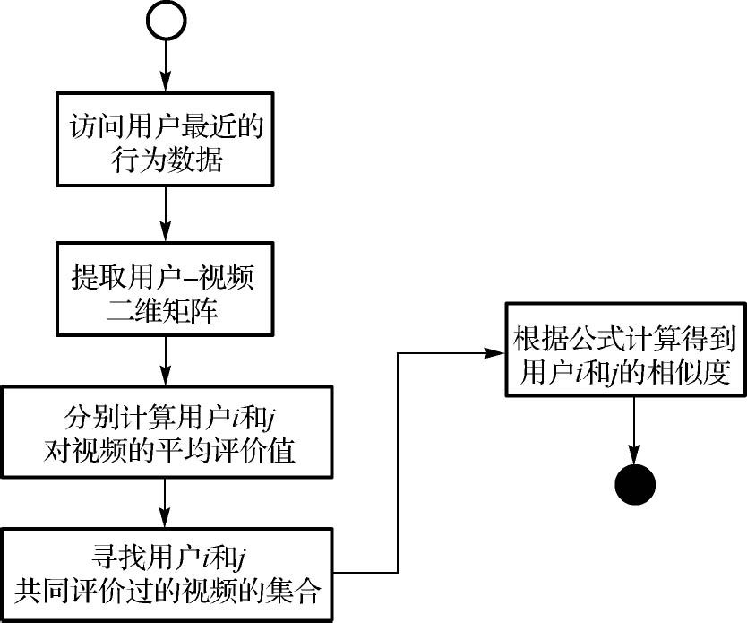
图6-1 协同过滤中的用户相似度计算流程
算法流程6-1 Me thod_SimUserVaIue
算法输入：用户行为日志。
算法输出：基于协同的用户相似度矩阵。
1．从“用户行为日志”中获取用户与视频之间关系的数据，即用户对视频的评分数据：user_id、video_id、preference。
2．对于n个用户，依次计算用户A与其他n−1个用户的相似度；紧接着计算用户B与其他n−2个用户的相似度。对于其中任意两个用户i和j而言：
2.1 查找两个用户共同评价过的视频集合Iij ；
2.2 分别计算用户i和j对视频的平均评价值 和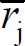 ；
2.3 按照式（6.1）计算用户之间的相似度，得到用户i和j的相似度。
3．将计算得到的相似度结果存储在数据库中。数据库中表的格式遵循表6-2。
3．相关讨论
虽然Pearson相关系数在计算用户相似度的表现上很突出，但单纯依靠Pearson相关系数并不能应对不同用户可能对某件广受欢迎的项目都给予高评分的情况，同时它在遇到用户只对非常少的共同项目评分时会出现预测不准的情况。为此，文献[1] ，[2] ，[3] 都提出了一些提高推荐预测精准度的方法，降低了对广受欢迎的项目有共同评价的相对重要性，提高了对有争议的项目有共同评价的相对重要性，构建出了更好的赋权体系。
6.2.2 V-V矩阵
在视频推荐系统的数据库中，V-V矩阵可由表6-3所示的数据库字段来构建，其中，sim_video_value的值由视频相似度计算来得到。
表6-3 基于视频协同的视频相似度矩阵
在基于物品的相似度计算中，余弦相似度因为其精确度较好而被广泛认同，成为通常状况下的标准度量方法。
基于协同的视频相似度计算如下所述。
1．算法原理
在基于项目的协同过滤中，需要通过计算视频相似度来找到与目标用户所喜欢的视频具有相似性的视频集，然后依据预先规定的相似用户数k，按照视频相似度大小，选择前k个视频作为目标用户所喜欢的视频的相似视频集。因此在这个过程中，视频相似度的计算是非常重要的前提。
在视频推荐系统中，视频相似度是通过计算余弦相似度得到的，即通过计算两个视频的n维向量（n>0）间的夹角的余弦测算视频相似度。余弦相似度（绝对值）的取值范围为［0，1］，夹角的大小与余弦相似度值成反比，两个向量间的夹角越小，余弦相似度的值越大。以计算两部电影的相似度为例，若求得的余弦值接近1，则说明这两部视频非常相似；若余弦值接近0，则说明两部视频非常不同。余弦相似度的计算公式为

式中，xi 和xj 为两个用来分别表示视频的向量。
在实际的视频推荐系统中，不同用户的评分标准不尽相同。例如，在给定了评分区间为1星到5星的情况下，对用户Alice来说评分在3星以上的就是自己喜欢的视频，而对于用户Bob来说，评分4星以上才是自己喜欢的。余弦相似度因为没有考虑到用户评分标准的差异问题，所以在直接计算不同用户的余弦相似度时会导致最终的预测发生很大的偏差。修正的余弦相似性度量方法通过减去用户对物品的平均评分，有效地改善了以上问题。修正的余弦相似度计算公式为
在视频推荐系统中，将视频的评价数据值抽象为n维用户空间中的列向量xi 和xj ，使用修正的余弦相似度，计算公式为
式中， 被看作历史上对视频xi 和xj 共同评价过的用户的集合， 代表用户u对i，u商品项目xi 的评价值， 和 分别代表用户对视频xi 和xj 的平均评价值。
2．算法流程
协同过滤中的视频相似度计算流程如图6-2所示。
图6-2 协同过滤中的视频相似度计算流程
算法流程6-2 Meth od_SimVideoVaIue
算法输入：用户行为日志。
算法输出：基于协同的视频相似度矩阵。
1．从用户行为日志中获取用户与视频之间关系的数据，即用户对视频的评分数据：user_id、video_id、preference。
2．对于n个视频，依次计算视频1与其他n−1个视频的相似度；紧接着计算视频2与其他n−2个视频的相似度。对于其中任意两个视频i和j而言：
2.1 查找对视频i和j共同评价过的用户的集合Uij ；
2.2 分别计算用户对视频i和j的平均评价值 和 ；
2.3 按照式（6.4）计算视频之间的相似度，得到视频i和j的相似度；
3．将计算得到的相似度结果存储在数据库中，数据库中表的格式遵循表6-3。
6.2.3 U-V矩阵
在视频推荐系统中，U-V矩阵表示了用户与视频之间的关系，这种关系可以是基于用户对视频的评分，也可以是基于用户观看视频的频度，还可以是基于用户是否观看过视频的行为（用0/1来表示未观看过/观看过）。其中，最常见的U-V矩阵是用户对视频的评分矩阵，如表6-3所示。
表6-4 用户-视频评分矩阵
该表以［1，5］为评分区间，“？”表示待预测的评分项，表中空白的部分表明用户尚未对视频做出评分。
在真实的推荐系统中，一方面，U-V矩阵的行列数会随着用户和视频数量变得庞大；另一方面，因为用户实际上只能对有限数量的视频做出评价，所以U-V矩阵的内部会非常稀疏。系统在直接处理这些庞大的高维U-V矩阵时，所消耗的时间、存储和计算资源都是非常巨大的，因此就需要一种能降低这种计算复杂度的方法。矩阵分解技术是一种有效降低矩阵计算复杂度的方法，它的实质是将高维矩阵进行有效降维。这类技术的代表是奇异值分解（SVD）和主成分分析（PCA），它们在基于模型的协同推荐算法中起着非常重要的作用，经常被用于离线数据的预处理。
1．SVD
奇异值分解是由Golub和Kahan在1965年首次提出来的一种正交矩阵分解法，该方法在数据压缩方面有很好的表现，在信号处理、统计学等领域得到了广泛的应用。随后SVD技术被Deerwester等人用于发现文档中的潜在语义因子 [4] ，SVD技术成为了潜在语义分析的主要方法。后来，SVD技术很快被引入推荐系统的研究领域中 [5] ， [6] ， [7] 。
SVD的基本原理是将给定的矩阵M 分解成3个矩阵的乘积形式，即
式中，分解出的矩阵U 和矩阵V 被分别称为左、右奇异矩阵，其本质是酉矩阵，即与它们各自的共轭转置矩阵相乘后会得到单位矩阵；矩阵Σ 为对角矩阵，其对角线上的值即为矩阵M 的奇异值。如果矩阵M 是m×n阶矩阵，则矩阵U 是m×m阶矩阵，矩阵Σ 是m×n阶矩阵，矩阵V 是n×n阶矩阵，如图6-3所示。
图6-3 SVD分解示意图
SVD是提取矩阵特性的好方法，矩阵Σ 中的奇异值σ是从大到小排列的，代表着矩阵M 的重要特征。在很多情况下，因为σ在矩阵Σ 中减小得很快，矩阵Σ 中前10％的奇异值之和就占了全部奇异值之和的99％，所以在数学计算中可以用前n个奇异值来近似表示矩阵。
将SVD技术应用在推荐系统时，它的意义是将一个稀疏的评分矩阵分解为一个表示用户特性的矩阵U 和一个表示物品特性的矩阵V ，以及一个表示用户和物品相关性的矩阵Σ 。在视频推荐系统中，可以用矩阵U 表示用户与隐因子的关系特性，用矩阵V 表示视频与隐因子的关系特性。
2．PCA
PCA也称为主分量分析，是一种多元分析中最常见的降维和赋权方法，最早可追溯到K．Pearson于1901年开创的非随机变量的多元转化分析。1933年，H．A．Hotelling将其推广到随机变量。
PCA最重要的应用是对原有数据降维，简化数据，这种方法可以有效地找到数据中的主成分，去除噪音和冗余，将原有复杂数据降维简化进行分析，从而揭示隐藏在复杂数据背后的简单语义。
严格意义上，PCA回答的问题是：如何寻找到一组正交基，它们是标准正交基的线性组合并且能够很好地表示数据集？该方法主要是在假设线性的基础上，通过对协方差矩阵进行特征分解的，以得出数据的主成分（即特征向量）与它们的权值（即特征值）。它的优点很明显——简单，而且无参数限制，可以方便地应用于众多场合，从实验科学到社会化推荐系统都有它的用武之地，被誉为应用线性代数最有价值的结果之一。
在视频推荐中，处理用户和视频的特征表示时，可用主成分分析处理用户和视频的相关数据。对有拥有较多属性的视频，每个视频的信息用向量m［i1 ，i1 ，…，in
］表示，为方便分析和处理数据，我们对向量降维，将m×n的视频矩阵转化为m×k的新矩阵。
首先，分别求m×n矩阵每列的平均值，然后对于每一列所有的元素，都减去对应的均值。PCA通过对协方差矩阵进行特征分解得出数据的主成分与它们的权值，将m×n的视频矩阵投影到选取的特征向量上。接着，求出特征协方差矩阵，以及协方差的特征值和特征向量，将特征值按照从大到小的顺序排序，选择其中最大的K个，然后将其对应的K个特征向量分别作为列向量组成特征向量矩阵。
假设样例数为m，特征数为n，减去均值后的样本矩阵为DataAdjust（m×n），协方差矩阵是n×n，选取的K个特征向量组成的矩阵为EigenVector（n×k），那么投影后的数据FinalData为
FinalData（m×k）＝DataAdjust（m×n）×EigenVector（n×k）
这样，就将原始样例的n维特征变成了k维，这k维就是原始特征在k维上的投影，也就是实现了m×n阶的视频矩阵转化为m×k阶的新矩阵这一矩阵降维。
6.3 基于记忆的协同过滤算法
基于记忆的协同过滤算法（Memory-based CF）直接使用整个已知的（所谓“记忆”）评分矩阵去预测用户对未知项目的评分或者推荐，又可以分为基于用户的协同过滤算法和基于物品的协同过滤算法。
在视频推荐中，通常用户为视频的评分是稀疏的。基于记忆的协同过滤算法收集用户-视频（User-Video）的评分数据来构建用户和物品的关系矩阵，为目标用户估计某一特定物品的评分或产生一个推荐列表。
最近邻居算法（k Nearest Neighbors，KNN）是最经典也最重要的基于记忆的协同过滤算法，它的推荐过程主要经历两个步骤：首先计算每一对用户之间的相似度，对某一个用户来说，将相似度较高的作为邻居；然后根据所有邻居（有的算法取所有其他用户）的相似度在某一个项目上做加权和，获得预测用户对该项目的分值。它最基本的优势在于实现简单，推荐精度较高；它主要的劣势是对数据稀疏敏感，可扩展性不强如果系统的目标不是进行预测评分而是进行top-N推荐的话，最后还需要对所有项目的分值进行排序，取最高的N个作为推荐对象。
Memory-based CF在视频推荐领域应用广泛，例如，国内知名视频网站爱奇艺（http://www.iqiyi.com），它的推荐引擎主要就是采用协同过滤算法和个性化推荐技术，通过收集网站用户群的观影习惯、收藏和下载视频记录建立用户兴趣模型，根据用户的爱好进行个性化视频推荐，实现视频的“猜你喜欢”，如图6-5所示。
图6-4 爱奇艺的“猜你喜欢”列表
6.3.1 基于用户的协同过滤算法
1．算法原理
早在1994年，Resnick等在文献[8] 中提出用户评分高的话题更有可能被关注的思想，通过相似统计的方法可以找出具有相似爱好的用户，对基于用户的协同过滤算法做出开创性的贡献。文献[8] 提出的GroupLens系统使用了评分矩阵来确定出与目标用户相似的用户的集合，之后预测出目标用户将对某一物品的评分情况。
基于用户的协同过滤以用户为研究对象，通过分析用户所喜好的视频来计算用户之间的相似度，找到相似度最大的其他相似用户，然后根据其他相似用户的喜好为目标用户推荐他可能感兴趣的视频，更注重社会化。一般而言，相似度高的用户A和用户B对一些视频的评价是具有共性的，即用户A所喜欢的视频，用户B也喜欢。
例如，用户A喜欢观看“十面埋伏”、“一代宗师”，用户B喜欢观看“十面埋伏”，那么用户A和用户B的兴趣有很大的相似度；用户B没有看过“一代宗师”，那么我们就可以为用户B推荐“一代宗师”。
假设用户为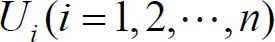 ，视频 ，Ui 对Mj 的评分为ri，j 。User-based CF主要分为两步。
（1）收集用户和视频的历史信息，计算用户u和其他用户的相似度Sim（u，Ni ），找到与目标用户Ui 相似度高的用户集合N（u）；
（2）根据所有Ni ∈N（u）对视频的评分情况，选出N（u）中的用户喜欢的且目标用户没有观看过的视频推荐给目标用户。
基于用户的协同过滤子引擎，通过下面的公式来计算出用户对视频的喜好程度。
式中，puj 表示用户u对视频j的喜好程度， 表示用户Ni 对视频j的评价，Sim（u，Ni ）表示用户u和用户Ni 的相似度。最后根据puj 来对候选的视频进行排序，为用户推荐分值高的Top-N个视频。
2．算法流程
User-based CF视频推荐算法的流程如图6-5所示。
图6-5 User-based CF视频推荐算法流程
算法流程6-3 Me thod_UserBasedCF
算法输入：用户行为日志，基于协同的用户相似矩阵。
算法输出：初始推荐结果。
1．访问用户行为日志，获取近期变化的用户ID集合U。
2．针对集合U中的每个用户u （可以并行处理）：
2.1 访问用户相似矩阵，获取与用户u相似的用户集合N（u）。
2.2 对于N（u）中的每个用户ui ：
2.2.1 获取与用户ui 有关联的视频集合M（ui ）。
2.2.2 针对视频集合M（ui ）中的每个视频，计算用户偏好值。
2.3 对M（u）中的所有视频进行按照用户偏好值进行加权、去重、排序。
2.4 取Top-N个视频，为每个视频赋予解释。
2.5 保存Top-N个视频到初始推荐结果中。
3．算法举例
以表6-3为例说明该方法计算p1，1 的过程。采用余弦相似度方法计算用户间的相似度，可得
同理可得
进而计算
以此方法计算可得，用户1对视频1的可能评分为3.6。进一步，计算用户1对视频3的可能评分为
当我们以此表格为依据为用户1推荐视频时，由于视频3的预测评分比视频1高，首先会推荐视频3，其次推荐视频1。
4．适用场景
User-based CF实现简单，可以根据相似用户的兴趣爱好发掘目标用户的潜在兴趣，推荐与原有用户观看类型不同的新视频，但是在实际应用中也存在一些问题。一方面是因为随着用户数量增大，算法的复杂度也随之增高，新用户的冷启动问题，以及数据稀疏性问题导致效率与伸缩性上的不足。另一方面是这样的推荐很难给出推荐理由，因为与你爱好相似的用户可能你并不认识，这样解释推荐就很难了。User-based CF加上社会网络信息，可以增加用户对视频推荐解释的信服程度。
因此，User-based CF适用于用户交互性强或者用户量相较视频数量变化稳定的视频网站。对于具有一定关系的用户，可以通过分析用户之间的相似性推荐与其兴趣相近用户喜欢的视频。但是，在视频网站中，用户的增长速度一般会大于视频的增长速度，因此User-based CF经常会与其他的推荐算法结合使用。
6.3.2 基于物品的协同过滤算法
1．算法原理
User-based CF在面对用户数量非常庞大且不断动态变化的情况时，对最近邻居的选择和相似度计算会变得非常困难，预测结果的准确性也会降低。在这样的情况下，可以发现因为视频数量相对稳定，所以计算出的视频相似度矩阵的更新频率较低，可在较长的一段时间内使用。为此基于物品的协同过滤算法（Item-based CF）被提出来，该算法的主要思想是利用物品间的相似度来计算预测值。文献[9] 和文献[10] 对Item-based CF做出了开创性的工作。
Item-based CF通过计算物品的相似度替代用户的相似度进行推荐，相对于User-based CF而言，其稳定性较强，可以预先离线完成大工作量的相似度计算，避免在线进行大规模计算，从而提高工作效率。
在视频推荐中，Item-based CF通过分析用户的视频观看和打分行为来计算视频之间的相似度，进而为用户推荐那些与他们之前喜欢的视频相似的视频。一般而言，视频A和视频B具有很大的相似度是因为喜欢视频A的用户大都也喜欢视频B。Item-based CF可以利用用户的历史行为给推荐结果提供合理的推荐解释。
例如，最近很多用户同时看过电影“泰囧”和“私人定制”，可以认为这两部电影具有较强的相关或者相似性，这两部电影都属于喜剧；如果某个用户看过“泰囧”，但是没看过“私人定制”，则系统可以为该用户推荐“私人定制”；为用户推荐“私人定制”的解释可以是因为用户之前看过“泰囧”。
假设用户为Ui （i＝1，2，…，n），视频Mj （j＝1，2，…，m），Ui 对Mj 的评分为ri，j 。以项目Ij 为例，基于项目的协同过滤算法可分为两个步骤。
（1）对于目标用户Ui 及其待评分的视频Mj ，根据用户对视频的历史偏好数据，计算视频Mj 与其他已评分视频之间的相似度Sim（j，i），找到与视频Mj 相似度高的视频集合N（u）。
（2）根据所有视频N（u）的评分情况，选出N（u）中目标用户Ui 可能喜欢的且目标用户没有观看过的项目推荐给目标用户并预测评分。
视频间的相似度一般采用修正后的余弦度计算公式Sim（j，i）。
式中，Mu，i 表示用户u对视频i的评分， 表示用户u对他所观看过视频的平均打分（相当于用户u的一个评分基准）。
Item-based CF通过下面的公式来计算出用户对视频的喜好程度。
式中，ruj 表示用户u对视频j的喜好程度，视频i是用户看过的视频，rui 表示用户u对视频i的偏好程度（对于隐式反馈数据集，如果用户u对视频i有过行为，则ruj ＝1）。然后根据ruj 来对候选的视频进行排序，为用户推荐分值高的视频。
2．算法流程
Item-based CF视频推荐算法的流程如图6-6所示。
图6-6 Item-based CF视频推荐算法流程
算法流程6-4 Meth od_ItemBasedCF
算法输入：用户行为日志，基于协同的视频相似矩阵。
算法输出：初始推荐结果。
1．从用户行为日志中，获取最近浏览过视频的用户集合U。
2．针对集合U中的每个用户u（可并行处理）：
2.1 从用户行为日志中，获取该用户近期观看的视频集合M（u）；
2.2 访问视频相似矩阵，获取与M（u）相似的视频集合N（u）；
2.3 针对视频集合N（u）中的每个视频，计算用户偏好值；
2.4 依据用户偏好值，对N（u）的视频进行排序；
2.5 取Top-K个视频，为每个视频赋予解释，如“您观看过类似的视频”；
2.6 保存Top-K个视频个视频到“初始推荐结果”中。
3．算法举例
以表6-3为例，采用Item-based CF计算p1，1 的过程如下（为方便计算，以下采用未修正的余弦相似度计算公式）。
同理可得
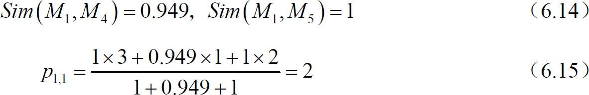
最后用户1对视频1的评分预测结果为2，与基于用户的协同过滤算法的计算结果是有差异的。
4．适用场景
Item-based CF适用于视频数量变化明显小于用户数量变化的场合，当推荐系统中的视频数量快速变化时，本算法将会面临可扩展性差的问题。在用户交互较弱的视频网站中，Item-based CF比User-based CF更适用，也更具有解释性。究其原因，在一个非社交网络的网站中，给某个用户推荐一个视频，若给出的解释是与该用户观看习惯相似的用户也看了这个视频，这很难让用户信服，因为用户可能根本不认识那个人。相比之下，推荐原因是所推荐的视频与用户之前看过的某个视频相似更加另人信服。
6.4 基于模型的协同过滤算法
Memory-based CF虽然基本思想清晰、实现简单、效果较好，但是由于需要在整个数据库上进行用户相似度和视频相似度的计算，因此在用户和物品量激增的情况下，系统的运算负担会非常大。同时，Memory-based CF也存在着扩展性差、对数据稀疏敏感等问题。基于模型的协同过滤算法（Model-based CF）是源自于推荐过程可以被视为分类或预测问题的这一思想，它将评分矩阵作为训练数据和测试数据，使用统计学、机器学习、数据挖掘等方法构建出用户与物品之间的关系模型，然后据此产生合理的推荐。
一个简单的基于概率思想的用户-视频评分预测模型如下式所示。
式中，R（u，m）表示用户u对视频m的评分估计，r为用户u可能的评分，评分取值为正整数（实际应用中一般取值为1-5），p（u，r）表示用户u对视频评分为r的概率。
本节将介绍两种Model-based CF方法，是借助隐因子模型、朴素贝叶斯分类等机器学习方法和奇异值分解、主成分分析等统计学工具来构造实现的。
6.4.1 基于隐因子模型的推荐算法
1．算法原理
基于隐因子模型（Latent Factor Model based，LFM-based）的推荐方法基于用户观看或者评分等历史行为数据，从中挖掘出用户隐含的兴趣，即隐因子，然后将用户或视频用隐因子来分类，最后通过这些隐因子进行推荐。用户会对某些特定的隐因子有一定的喜好度，视频对于某些特定的隐因子会有一定的包含度，基于这样的前提，便可以利用这种用户或视频与隐因子的关系来做出推荐。例如，将每个用户或者视频向量用其包含的隐因子来表示，设定隐因子的取值范围是0～5，假设用户Bob看过“黑客帝国”、“终结者”、“变形金刚”、“午夜凶铃”和“惊魂记”等影片，通过分析挖掘知悉Bob对科幻片和恐怖片比较感兴趣，对恐怖的喜好度为5，对科幻的喜好度为4；同时，Bob讨厌观看“心花路放”等喜剧电影，对喜剧的喜好度为1，那么，系统就会为Bob推荐隶属于科幻片和恐怖片的其他电影，如“星球大战”和“凶兆”等。
这样的推荐过程实际上是将用户和视频分别投影到人为抽象出来的隐因子空间中，根据用户和视频在隐因子空间中的距离来寻找可推荐的视频，将与目标用户距离近而且用户还未接触过的视频推荐出来。图6-7以喜剧-悲剧、轻松-恐怖为维度，建立了二维的隐因子空间。在这个空间中，不同的用户和视频所处的位置不同，与用户距离越近的视频越可能是用户喜欢的视频。
图6-7 以两类隐因子建立的二维空间
在理解了LFM的实现原理后，其关键问题便是如何从用户评分数据中确定出隐因子，以及如何计算出用户或视频与隐因子的关系。这里就使用到了6.2.3节中所介绍的SVD技术，它可以将U-V矩阵所表示的用户评分数据分解为用户与隐因子的关系矩阵U 、视频与隐因子的关系矩阵V ，以及表示隐因子的矩阵Σ 。
在基于隐因子模型的协同过滤推荐中，利用下面的公式来计算用户对视频的喜好程度。
式中，rui 表示用户u对视频i的评分；puk 和qki 是从记录用户历史行为的数据集中计算出来的，puk 度量了用户u的兴趣和第k个隐类的关系，qki 度量了视频i和第k个隐类的关系。要计算这两个参数，需要一个训练集，对于每个用户，训练集里都包含了用户u喜欢的物品和不感兴趣的物品，通过学习这个数据集，就可以获得上面的模型参数。
推荐系统的用户行为分为显性反馈和隐性反馈，显示反馈就是用户对视频打分，隐性反馈就是用户的观看浏览行为。隐因子模型在显性反馈数据上解决评分预测问题得到了很好的精度。但是对于隐性反馈数据集，这种数据集只有正样本（用户观看了什么视频），而没有负样本（用户对什么视频不感兴趣），因而存在一个负样本采样过程。根据以往的经验总结，负样本采样需要遵循以下原则。
（1）对每个用户，要保证正负样本的平衡。
（2）对每个用户采样负样本时，要选取那些很热门，而用户却没有行为的视频。
构造好训练集合后，需要优化如下的损失函数来找到最合适的参数p和q。
要最小化上面的损失函数，可以利用一种称为随机梯度下降法的算法。该算法是最优化理论里最基础的优化算法，它首先通过求参数的偏导数找到最速下降方向，然后通过迭代法不断地优化参数。LFM模型训练过程如图6-8所示。
图6-8 LFM模型训练过程
2．算法流程
基于隐因子模型的推荐算法流程如图6-9所示。
图6-9 LFM算法流程
算法流程6-5 Me thod_LFM
本流程是基于隐因子模型训练得到的用户兴趣向量和视频类别向量，采用类似视频协同的方法来生成推荐视频。
算法输入：用户行为日志，用户兴趣向量，视频类别向量。
算法输出：初始推荐结果。
1．从用户行为日志中获取最近浏览过视频的用户集合U。
2．针对集合U中的每个用户u（可并行处理）：
2.1 从用户行为日志中获取该用户近期观看的视频集合M（u）；
2.2 访问“基于隐因子的视频相似矩阵”，获取与M（u）相似的视频集合N（u）；
2.3 针对视频集合N（u）中的每个视频，计算用户对该视频的偏好值；
2.4 依据用户偏好值，对N（u）的视频进行排序；
2.5 取Top-K个视频，为每个视频赋予解释，如“您近期浏览过与之近似的视频”；
2.6 保存Top-K个视频到“初始推荐结果”中。
3．适用场景
基于隐因子模型的推荐方法是一种基于机器学习的方法，具有比较好的理论基础，适用于缺少用户兴趣信息和视频类别信息，但是具有大量的用户行为的系统，它一般适用于离线推荐，不适用于实时推荐。
6.4.2 基于朴素贝叶斯分类的推荐算法
1．算法原理
由于推荐问题可以被看成分类问题，因此可以使用一些机器学习领域中的分类算法对推荐问题加以解决。贝叶斯分类是一类分类算法的总称，由于这类算法都以贝叶斯定理为基础，所以将它们统称为贝叶斯分类算法。其中，朴素贝叶斯分类（Naive Bayesian Classifier）算法是贝叶斯分类算法中比较简单的一种，它之所以被称为“朴素”，是因为其基本思想是显然而直接的：对于给出的待分类物品和既定的类别，计算该物品在各个类别中出现的概率，哪个类别计算出的概率最大就将待分类物品分到那个类别。
朴素贝叶斯分类在推荐系统中有着一定程度的应用，它能用于在已知某些评分的情况下通过计算概率预测出未知评分。以表6-5为例，在已知用户U1 对视频V2 ～V5 的评分和用户U1 ～U5 对视频V1 ～V5 的评分的情况下，想要预测出用户U1 对视频V1 的评分。
表6-5 用户-视频评分矩阵
这就需要通过贝叶斯定理来进行计算。贝叶斯定理的作用是在已知P（A｜B）的情况下求得P（B｜A），其计算公式为
式中，P（A｜B）表示事件B已经发生的前提下事件A发生的概率，叫做事件B发生下事件A的条件概率；P（A）和P（B）均为无条件概率。对于表6-5所示的评分矩阵，P（B）是指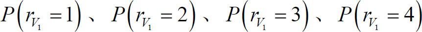 和 是指用户对视频Vx 的评分，P（A）是贝叶斯分类器的常量（计算时可忽略），P（A｜B）的计算过程如表6-6所示。
表6-6 P（A｜B）的计算过程
基于表中的计算，在给定 且忽略贝叶斯分类器的常量P（A）的情况下，用户U1 对视频V1 的评分为3的概率为 。因为其他评分的概率在此表中的计算结果均为零，所以说明用户U1 对视频V1 的评分最有可能是3。
2．算法流程
算法流程6-6 Me thod_NaiveBayesianCIassifier
算法输入：已知目标用户对视频Vx 之外的视频的评分情况，以及其他用户对各视频的评分情况。
算法输出：确定目标用户对视频Vx 的评分r。xV
1．设 为一个待分类项，a1 −am 表示 的特征属性；
2．设类别集合 ；
3．计算 ；
3.1 找到一个已知分类的待分类项集合作为训练样本集；
3.2 统计得到在各类别下各个特征属性的条件概率估计。即

3.3 如果各个特征属性是条件独立的，则根据贝叶斯定理有如下推导。
因为分母对于所有类别为常数，因此只需将分子最大化即可。又由于各特征属性是条件独立的，所以有
4．如果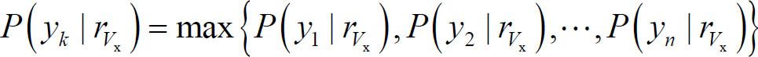 ，则 。
3．适用场景
朴素贝叶斯分类实现起来比较简单，准确率较高，但是分类的时候需要学习全部样本的信息。因此，朴素贝叶斯分类更适用于数据量不大，类别较少的分类问题。
6.5 小结
本章从介绍关系矩阵及矩阵计算出发，引出了协同过滤推荐方法中的两大类算法：Memory-based CF和Model-based CF。其中，Memory-based CF主要是基于U-U矩阵、V-V矩阵的应用，Model-based CF主要是基于U-V矩阵的应用。在Memory-based CF中，User-based CF是以用户相似度为重点的协同推荐，Item-based CF是以视频相似度为重点的协同推荐。在Model-based CF中，LFM-based CF和NBC-based CF是具有代表性的推荐算法，前者运用了在Netflix大赛中实践效果良好的SVD矩阵分解技术，后者运用了机器学习领域中的概率学习模型。
6.6 本章参考文献
[1] Breese J S，Heckerman D，Kadie C．Empirical analysis of predictive algorithms for collaborative filtering［C］//Proceedings of the Fourteenth conference on Uncertainty in artificial intelligence．Morgan Kaufmann Publishers Inc.，1998：43-52.
[2] Herlocker J L，Konstan J A，Borchers A，et al．An algorithmic framework for performing collaborative filtering［C］//Proceedings of the 22nd annual international ACM SIGIR conference on Research and development in information retrieval．ACM，1999：230-237.
[3] Herlocker J，Konstan J A，Riedl J．An empirical analysis of design choices in neighborhood-based collaborative filtering algorithms［J］．Information retrieval，2002，5（4）：287-310.
[4] Deerwester S C，Dumais S T，Landauer T K，et al．Indexing by latent semantic analysis［J］．JAsIs，1990，41（6）：391-407.
[5] Sarwar B，Karypis G，Konstan J，et al．Application of dimensionality reduction in recommender system-a case study［R］．Minnesota Univ Minneapolis Dept of Computer Science，2000.
[6] Goldberg K，Roeder T，Gupta D，et al．Eigentaste：A constant time collaborative filtering algorithm［J］．Information Retrieval，2001，4（2）：133-151.
[7] Canny J．Collaborative filtering with privacy［C］//Security and Privacy，2002．Proceedings．2002 IEEE Symposium on．IEEE，2002：45-57.
[8] Resnick P，Iacovou N，Suchak M，et al．GroupLens：an open architecture for collaborative filtering of netnews［C］//Proceedings of the 1994 ACM conference on Computer supported cooperative work．ACM，1994：175-186.
[9] Linden G，Smith B，York J．Amazon．com recommendations：Item-to-item collaborative filtering［J］．Internet Computing，IEEE，2003，7（1）：76-80.
[10] Sarwar B，Karypis G，Konstan J，et al．Item-based collaborative filtering recommendation algorithms［C］//Proceedings of the 10th international conference on World Wide Web．ACM，2001：285-295.
第7章 基于内容的推荐方法
7.1 概述
基于内容（Content-based，CB）的推荐方法基本上是与协同过滤CF方法在同一时期被提出来的，目前该方法也已发展得非常成熟。
CB推荐方法是非常直接的，它以物品的内容描述信息为依据来做出推荐，本质上是基于对物品和用户自身的特征或属性的直接分析与计算。CB推荐方法根据用户过去浏览的物品记录建立用户画像（User Profiles），提取物品的特征向量，建立物品画像（Item Profiles），通过比较物品画像与用户画像（包含用户曾经购买的物品信息）之间的相似度，向用户推荐与之浏览记录相近的其他物品。需要注意的是，与第6章所介绍的协同过滤中基于评分的相似度计算不同，CB推荐方法中的物品内容和用户偏好是通过一些属性来表示的，因此相似度计算是基于属性的相似度计算。例如，对于视频（电影）来说，它具有标题、导演、编剧、主演、类型、制片地区、上映时间等固有属性，而用户的观影偏好也可以用这些固有属性来表示。同时，开放式的视频推荐系统还会通过融合电影简介和用户影评来丰富对视频的内容描述，作为对视频内容固有属性的有效补充，比如会计算“特洛伊”、“亚瑟王”、“亚历山大大帝”等影片的导演相似度等。
而CF推荐方法不需要知道被推荐物品的任何内容描述信息，推荐过程是完全借助于协同思想来完成的，其优点是不必向系统提供并维护物品的内容描述信息，其缺点是无法根据物品特性和用户偏好直接做出推荐。例如，用户Bob的观影偏好中有史诗类电影，他曾看过“指环王”、“角斗士”和“勇敢的心”等电影，CF推荐方法为其推荐电影的思路是根据U-U矩阵找到同样喜欢观看史诗类电影的相似用户或是根据V-V矩阵找到同属史诗类的相似电影，再针对这些相似的用户或电影进行排序最终生成推荐列表，整个推荐过程比较迂回。
通过对CB推荐方法实现原理的了解，可以发现它有着很多CF推荐方法所不具备的优点，即：
（1）用户间独立性。用户间独立性是由CB推荐方法为每个用户建立用户画像（User Profile）而得到确保的，用户的个人偏好与他人无关。而CF推荐方法则必须利用多个用户的数据建立用户偏好间的相似联系，这样也就无法规避多个用户可能对物品的评分进行联手作弊而引导系统向目标用户做出不良推荐的情况。
（2）可解释性。CB推荐方法对推荐结果具有良好的可解释性，这是因为它产生的推荐结果是具有某些符合用户偏好的固有属性的，推荐结果在直观上很容易得到解释。
（3）新物品冷启动。当新物品加入到推荐系统中时，因为尚未有用户对该物品评分，所以CF推荐方法无法将该物品纳入到推荐列表中，这就是新物品的冷启动问题。而对于CB推荐方法来说，新物品一旦加入就可以被马上推荐，它与老物品被推荐的机会是一样的。
同时，CB推荐方法在一些方面也存在着相应的缺点，如对物品的特征提取、对用户潜在的兴趣挖掘和新用户的冷启动问题等。对于使用CB推荐方法的视频推荐系统来说，需要对所有的视频进行固有属性的特征提取，这个过程相比提取文档特征会困难得多，而且很多时候有限的固有属性会难以区分出两部很相似的电影。在用户潜在兴趣的挖掘方面，CB推荐方法是依赖于用户过去时的数据对现在时的用户进行推荐的，所以不能向CF推荐方法那样实现用户潜在兴趣的挖掘。与CF一样，CB推荐方法也存在着新用户的冷启动问题。具体CB推荐方法和CF推荐方法对比如表7-1所示。
表7-1 CB和CF推荐方法优劣比较
| 基于内容（Content-based） | 协同过滤（Collaborative Filtering） | |
|---|---|---|
| 用户间独立性 | 强 | 弱 |
| 推荐结果的可解释性 | 强 | 弱 |
| 新物品的冷启动问题 | 容易解决 | 难以解决 |
| 物品的特征提取 | 需要考虑且提取困难 | 无须过多考虑 |
| 用户潜在兴趣的挖掘 | 难以实现 | 容易实现 |
| 新用户的冷启动问题 | 难以解决 | 难以解决 |
基于内容的推荐方法，文献[1] 中已经给出了一张很常见的比较细致的流程图，如图7-1所示。
图7-1 CB推荐流程图
上述过程主要包括Item Representation、Profile Learning、Recommendation Generation三个步骤，分别负责Item表征、用户Profile表征、基于Profile与Item相似度的候选Item推荐。
而在实际应用中，CB推荐包含很多方法，具体方法和侧重点也都有一定的差异，而且逐渐呈现混合型的趋势。虽然目前没有统一的CB方法分类，但我们可以从粗粒度角度对常见CB方法做个简单的维度分类（如图7-2所示）。
图7-2 CB方法的一种分类维度
横轴维度是特征工程方面的差异。如果CB方法只考虑导演、演员等若干结构化的表征，那么特征的提取就非常容易，而且后续的相似度计算也相对容易，往往是可以完全在封闭式系统内部完成的（比如优酷内部，而不需要融合搜索引擎等其他数据源的数据）。如果CB方法还需要考虑影评等电影的文本描述，并且还需要以若干关键词为基础，利用搜索引擎融合其他文本数据源，那么特征的抽取就涉及自然语言处理，即如何从描述中分词、抽取关键词向量甚至形成主题，这也会为后期的相似度计算增加难度。需要注意的是，对于涉及文本等非结构化数据的处理，往往要考虑开放式的处理方法（如引入第三方的词库、利用多个文档的对比分析等），因为对于计算机来说，仅仅从单个文档区分关键词“手枪”与“我们”是不容易的，更别说理解“幽灵”意味着“恐怖”的语义了。其实现在常见的情况是，CB方法中对非结构和结构化特征的融合，在电影的相似度计算中，既考虑导演、演员等结构化信息，又会考虑剧情描述等非结构信息。此外，结构化特征的数量与非结构特征的数量特点，也会导致方法的差异性。
纵轴维度是计算机制方面的差异。内容的稳定性相对较好，但是用户的兴趣是动态变化量，如何根据用户的观影行为或者打分来作为反馈调整CB方法，是存在差异性的。在考虑反馈的情况下，如果用户为科幻片“星际争霸”打了个低分时，那么用户特征向量就可能在“科幻”：0.5减分至“科幻”：0.4。在不考虑反馈的情况下，有可能认为是短期影响或者噪音，用户特征向量在“科幻”：0.5保持不变。实际上，目前没有反馈的方法基本是没有的，但是如何处理反馈，是批量处理还是单个处理，是离线处理还是实时处理，如何判断噪音如何遴选关键反馈，这都属于在有无反馈维度对CB方法差异性的影响。
下述章节将按照分类维度，结合CB方法在视频推荐的应用，对典型的CB方法进行描述和介绍，方便读者理解。
7.2 CB推荐中的特征向量
在Content-based推荐系统中，需要为每个物品创建一个物品画像（Item Profile）用于记录该物品的内容固有属性，也需要为每个用户创建一个用户画像（User Profile）用于记录用户的特定偏好。物品/用户画像的本质是由一些表示特征的向量组成的。
7.2.1 视频推荐中的物品画像
通常情况下，物品画像包含了该物品的一些比较容易发掘的固有属性。例如，一部电影与推荐系统相关的固有属性有：
（1）导演/编剧。用户一般可能会偏爱于特定几个导演/编剧的电影作品。
（2）演员集合。用户一般可能会偏爱于某些演员的电影作品。
（3）电影类型。用户一般可能会偏爱于某些类型的电影。实际的视频推荐系统会将电影分类得非常精细，例如豆瓣电影的类型标签就有36种之多。
（4）制片地区。用户一般可能会偏爱于某些制片地区（国家）的电影。例如，爱好文艺的人士很可能会比较喜爱欧洲制作的文艺片，而爱好推理的人士很可能会比较喜爱美国制作的犯罪悬疑类影片。
（5）上映时间。用户一般可能会偏爱于某些时期的电影，例如经典老电影或是新上映的电影。
除了以上的5类基本属性之外，也可以从电影的剧情描述或用户的影评中等非结构化信息中提取出一些与电影相关的特征。
影视内容的获得可以借助于互联网电影资料库（Internet Movie Database，IMDb）等网站所提供的丰富的影视信息，许多开发人员也设计了相关的API用于从IMDb中更方便地获取数据。
进一步地，我们尝试使用向量来表示物品的所有属性。举个例子，由于演员是电影的一个属性，那么就假设每个演员都是这个属性的一个向量分量，其中，若向量中相应位置的演员有出演这部电影，则将该向量中的对应位置值设为1，否则为0。同样地，电影的导演、类型等其他固有属性也可以用0、1来表示。另外一种表示物品属性的方法就不是使用布尔型数字这么简单了，它假设属性是在一定数值范围内的取值。例如，我们可能会将用户对电影的评分作为一个固有属性，而这个固有属性就是一个实数。将一个分量设置为用户对每部电影可能的平均评分是毫无意义的，这会导致我们失去隐含在分数中的信息，即两个接近但不相同评分的电影可能比众多不同评分的电影更具相似性。数值特征向量应该由表现物品特征的向量的单一分量代表。这些分量展示特征的精确值。这样，如果向量的一些分量是布尔数而其他一些分量取值为实数或者整数也不会造成不利影响。我们仍然可以计算向量之间的余弦距离，但如果我们这样做，我们应该考虑在非布尔型数值前增加一个比例系数进行约束，以便它们在计算时占据主导地位或是无关紧要，让所有的分量都能够起到作用。让我们看一下下面的例子。
假设演员和平均评分是电影仅有的两个特征。现在有两部电影，各有6个演员，其中有3个演员都参演了这两部电影。并且，一个电影平均评分是2而另外一个是4。两个向量为
［101011012α］
［110111104α］
然而，原则上有无限的附加分量“0”代表两部电影中都没有参演的所有可能演员。由于向量余弦距离不受为0分量的影响，所以我们无须担心在两部电影中都没有出现的演员对电影的影响。
向量的最后一个分量代表平均评分，它有一个未知的比例系数α。针对不同的α，我们可以计算向量之间的余弦。两个向量点乘结果为3＋8α2 ，两个向量的长度分别是 和 。因此，向量之间的余弦值为 。
如果我们选择α＝1，这代表我们直接采用评分的数值进行计算，得出的余弦值为0.782。若令α＝2，也就是放大评分结果为原来的两倍，则计算结果是0.913。同样地，若另 则计算结果为0.645，向量余弦计算结果完全不同。我们虽然不知道哪个值才是“正确”的，但可以看到，数值特征的比例系数的选择是如何影响我们对于物品间相似度的测量。
7.2.2 视频推荐中的用户画像
我们用效用矩阵代表用户和物品之间的联系。回想之前提过的内容，非空矩阵的元素可能是1，用来代表用户的购买行为或类似的联系，或者可能是任意数字，代表用户对物品的评分或喜好程度。有了这些信息，对于用户喜欢的物品，我们可以做的最好预测是聚合这些物品的画像。如果效用矩阵只有1这个取值，那么，最简单的聚合就是将效用矩阵中各个值为1的位置对应的物品画像中的向量取值求均值得到结果。
例如，假设用户对电影的效用矩阵只有0和1两种取值，代表用户是否看过电影。若用户U看过的电影中有30％的电影都有演员Tom Cruise，那么用户U的用户画像中对应Tom Cruise的分量取值就是0.3。
如果效用矩阵不是布尔型，比如评分取值1～5，那么我们就可以通过数值来衡量物品相似度。将每个元素减去这个用户评分的平均值进行正则化是很有必要的。通过正则化，当用户对物品评分低于均值时我们得到一个负数，当用户对物品评分高于均值时我们得到一个正数。例如，考虑和上例相同的电影信息，但是现在效用矩阵的元素取值为1～5。假设用户U对于所有电影的平均分为3，其中有4部电影Tom Cruise有参演，对应电影评分分别是3、4、5、4。那么在用户U的用户画像中，对应Tom Cruise的分量取值就是3−3＝0、4-3＝1、5−3＝2、4−3＝1的平均值，即1。
7.3 基础CB推荐算法
该方法不考虑非结构化特征，不考虑反馈，单纯基于视频的内容固有属性来进行相似度计算及视频推荐。在内容过滤视频推荐系统中，最基础的就是抽取出特征，以及如何通过这些特征计算视频之间的相似度。
首先，提取视频的固有属性。比如“加勒比海盗：黑珍珠号的诅咒”的信息如表7-2所示。
表7-2 视频信息示例表
| 导演 | 戈尔·维宾斯基 |
|---|---|
| 年代 | 2003年 |
| 地区 | 美国 |
| 类型 | 电影 |
| 演员 | 约翰尼·德普/杰弗里·拉什/奥兰多·布鲁姆/凯拉·奈特莉/杰克·达文波特/乔纳森·普雷斯 |
将上述每个视频特征向量的分项向量化，每个个视频就可以用一个特征向量矩阵来表示。针对表7-2所示的视频标签，可以得到视频特征向量矩阵如表7-3所示。
表7-3 视频特征向量矩阵示例

通过该向量和用户偏好内容偏好进行加权内积，则可以得到该视频和用户喜好的相关程度，进而用相关程度排序就可以进行视频推荐。
1．算法原理
利用视频的基本信息和用户偏好内容的相似性进行视频推荐。通过分析用户已经观看过的电影的内容，如演员、导演、风格等，生成用户的偏好内容，然后推荐与用户感兴趣的电影内容相似度高的其他电影。
比如，用户近期浏览过冯小刚导演的电影“非诚勿扰”，主演是葛优；那么如果用户没有看过“私人定制”，则可以推荐给用户。因为两部影片的导演都是冯小刚，主演都有葛优。
计算公式为
式中，ui 表示用户，qj 表示视频，uik 表示用户在第k个方面的特征，qjk 表示视频在第k个方面的特征，Sim（uik ，qjk ）表示视频ui 和qj 在第k个特征方面上的相似度，λk 表示权重。
2．算法流程
推荐算法流程如图7-3所示。
图7-3 基础CB推荐算法流程
算法流程7-1 Me thod_ContBaseRec
算法输入：视频信息，用户行为日志。
算法输出：初始推荐结果。
1．视频表示：每个视频使用特征向量 表示，其中mi 表示视频的特征属性，如视频名称、导演、主演等；
2．从“用户行为日志”中，获取该用户所浏览、收藏、评价、分享的视频集合M，根据视频集合M中视频的特征数据，可以学习得到用户的内容偏好。用户的喜好模型包括如下内容：
2.1 视频的导演列表：每个导演之间用$符隔开；
2.2 视频的演员列表：每个演员之间用$符隔开；
2.3 通过计算用户喜好模型与每个视频特征向量间的相似度；
2.5 对相似度进行排序，取Top-K个视频，为每个视频赋予解释。
3．保存Top-K个视频个视频到“初始推荐结果”中。
3．适用场景
适用于基础CB架构的搭建，尤其是对新上线视频会马上被推荐非常有效，被推荐的机会与老的视频是相同的。
7.4 基于TF-IDF的CB推荐算法
该方法重点考虑非结构化特征的处理。
1．算法背景
在实际的视频推荐中，上线视频往往还会结合用户给予的评论信息进行实时推荐。用户的评论一般分为评分与文字评论两种，前者通过分数直接反映用户对视频的喜恶，后者则需要我们从冗长的文字中提取关键信息。TF-IDF（Term Frequency-Inverse Document Frequency）等技术被引入。
TF-IDF算法被公认为信息检索中最重要的发明，它在搜索、文献分类和其他相关领域有广泛的应用。IDF的概念最早是由剑桥大学的Karen Spärck Jones（1935—2007）在1972年提出，后由康奈尔大学的Gerard Salton（1927—1995）将TF-IDF向信息检索领域进行推广，Robinson从理论上解释了IDF。之后，TF-IDF的应用逐渐广泛，在应用中许多学者针对TF-IDF的不足之处提出了改进。
TF-IDF自然语言处理领域中计算文档中词或短语的权值的方法，是词频（Term Frequency，TF）和逆转文档频率（Inverse Document Frequency，IDF）的乘积。TF指的是某一个给定的词语在该文件中出现的次数。这个数字通常会被正规化，以防止它偏向长的文件（同一个词语在长文件里可能会比短文件有更高的词频，而不管该词语重要与否）。IDF是一个词语普遍重要性的度量，某一特定词语的IDF，可以由总文件数目除以包含该词语之文件的数目，再将得到的商取对数得到。
2．算法原理
TF-IDF算法基于一个这样的假设：若一个词语在目标文档中出现的频率高而在其他文档中出现的频率低，那么这个词语就可以用来区分出目标文档。这个假设需要掌握的有两点：
- 在本文档出现的频率高；
- 在其他文档出现的频率低。
因此，TF-IDF算法的计算可以分为词频（Term Frequency，TF）和逆转文档频率（Inverse Document Frequency，IDF）两部分，由TF和IDF的乘积来设置文档词语的权重。
TF指的是一个词语在文档中的出现频率。假设文档集包含的文档数为N，文档集中包含关键词ki 的文档数为ni ，fij 表示关键词ki 在文档dj 中出现的次数，fdj 表示文档dj 中出现的词语总数，ki 在文档dj 中的词频TFij 定义为
这个数字通常会被正规化，以防止它偏向长的文件（同一个词语在长文件里可能会比短文件有更高的词频，而不管该词语重要与否）。
IDF是一个词语普遍重要性的度量。 表示某一词语在整个文档集中出现的频率，由它计算的结果取对数得到关键词ki 的逆文档频率IDFi 。
由TF和IDF计算词语的权重为
可以看出，TF-IDF与词语在文档中的出现次数成正比，与该词在整个文档集中的出现次数成反比。在目标文档中，提取关键词的方法就是将该文档所有词语的TF-IDF计算出来并进行对比，取其中TF-IDF值最大的k个数组成目标文档的特征向量用以表示文档。
在此，注意一点，文档中存在的停用词（Stop Words），如“是”、“的”之类的，对于文档的中心思想表达没有意义的词，在分词时需要先过滤掉再计算其他词语的TF-IDF值。
3．算法举例
对于计算影评的TF-IDF，以电影“加勒比海盗：黑珍珠号的诅咒”为例，假设它总共有1000篇影评，其中一篇影评的总词语数为200，其中出现最频繁的词语为“海盗”、“船长”、“自由”出现最频繁，分别是20、15、10次，并且这3个词在所有影评中被提及的次数分别为1000、800、100，就这3个词语作为关键词的顺序计算如下。
（1）将影评中出现的停用词过滤掉，计算其他词语的词频。以出现最多的三个词为例进行计算如下。
“海盗”出现的词频为20/200＝0.1，“船长”出现的词频为0.075，“自由”出现的词频为0.05；
（2）计算词语的逆文档频率如下。“海盗”的IDF为
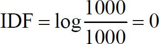
“船长”的IDF为log（1000/500）＝0.3，“自由”的IDF为log（1000/100）＝1。
（3）由（1）和（2）计算的结果求出词语的TF-IDF结果，“海盗”为0，“船长”为00225，“自由”为0.05。
通过对比可得，该篇影评的关键词排序应为：“自由”、“船长”、“海盗”。把这些词语的TF-IDF值作为它们的权重按照对应的顺序依次排列，就得到这篇影评的向量，我们就用这个向量来代表这篇影评，向量中每一个维度的大小对应这个属性的重要性。
将总的影评集中所有的影评向量与特定的系数相乘求和，得到这部电影的综合影评向量，与电影的基本属性结合构建视频的物品画像，同理构建用户画像，可采用多种方法计算视频的物品画像和用户画像之间的相似度，为用户做出推荐。
7.5 基于KNN的CB推荐算法
该方法其实是一种接近无反馈的方法。
1．算法背景
KNN（k-Nearest Neighbor）算法基于这样的假设：如果在特征空间中，一个样本的k个最邻近样本中的大多数样本属于某一个类别，则该样本也属于这个类别。KNN算法通过计算样本个体间的距离或相似度来确定最近邻，算法的时间复杂度跟样本的个数直接相关。应用在推荐系统中时，KNN算法能够将与目标物品的内容的k个最相似物品推荐给用户。由于内容固有属性一旦创建就基本保持不变，所以基于内容固有属性的KNN最近邻计算不需要频繁地重复刷新。
由于KNN算法依赖于周围有限的已正确分类的邻居样本来对待分类样本进行分类，所以它更适合类域的交叉或重叠较多的待分类样本集的分类问题。同时，KNN算法的主要不足是当分类的各样本容量不平衡时，会出现计算结果不准确的问题。为了克服这个问题，就需要采用一些赋权值的方法来加以改进。
2．算法原理
KNN在CB推荐算法中的应用与在CF推荐算法中的应用极为相似，它们都是要首先找到与目标物品相似的且已经被用户u评价过的k个物品，然后根据用户u对这k个物品的评价来预测其对目标物品的评价。它们的差别在于，CF推荐算法中的KNN是根据用户对物品的评分来计算物品间相似度的，而CB推荐算法中KNN是根据物品画像来计算物品间相似度的，所以对于后者来说，如何通过物品画像来计算物品间的相似度是算法中的关键步骤。相似度的计算可以使用杰卡德距离（对于结构化的数据）、余弦相似度（对于用向量空间模型表示的物品）或者Pearson相关系数的计算方法。KNN算法流程如下所示。
算法流程7-2 Me thod_KNN
算法输入：用户已评分视频、目标视频i。
算法输出：用户对目标视频i的评分。
1．计算相似度。
以使用余弦相似度的方法来计算相似度为例，引用式（6.4）。
式中，Uij 被看作历史上对视频i和j共同评价过的用户的集合，ru，j 代表用户u对商品项目i的评价值， 和 分别代表用户对视频i和j的平均评价值。
和 分别代表用户对视频i和j的平均评价值。
2．选择最近邻。在用户u评过分的所有视频中，找出k个与目标视频i相似度最高的视频，并用N（u，i）来表示这k个视频的集合。
3．计算预测值。在第2步的基础上，可使用以下公式计算用户对目标视频i的评分。
式中， 表示用户u对视频i的预测评分，Si，n 是sim_video_value（i，n）的缩写。
在实际的推荐系统中，KNN算法还要针对数据稀疏性和全局作用（Global Effect）的影响做进一步的改进。首先，数据稀疏性是指用户对物品的选择关系占所有可能存在的选择关系的比例，这一比例在很多数据集中普遍很小，这一情况会使得基于交集大小的视频相似度计算的可靠性降低。为了降低数据稀疏性的影响，需要对原有的相似度计算进行一定比例的压缩，计算公式为
式中，Uin 表示历史上对视频i和n共同评价过的用户的集合，α表示指定的压缩系数。
由于用户对视频的评分趋势各有不同，如有的用户评分严格，有的用户评分宽松，这种趋势被称为全局作用（Global Effect，GE），所以也需要在KNN的基本模型中考虑到全局作用的影响。常用的GE有十几种，在这里会用到其中的四种，分别是：全部评分的平均值（Overall Mean）、电影的被评分倾向、用户的评分倾向，以及用户第一次评分后相距当前的用时。将GE纳入在KNN模型的目标是为该GE计算出一个特定的参数，在计算这样的参数时，每次只考虑一个GE，并使用前一次计算GE时的预测评分与真实评分之差作为本次计算的真实评分。例如，计算第t＋1个GE时的真实评分可由下面所示的公式得到。
式中， 表示前t个GE的预测评分之和， 表示真实评分。
在计算GE的特定参数时也需要将数据稀疏性问题考虑在内，即要对该参数进行压缩，计算公式为
式中， 表示针对用户评分倾向的第t个参数，Iu 表示用户u评过分的所有视频集合xu，i 表示第u个用户和第i个视频的解释变量，其在计算第1次和第2次GE时的值为1，在之后的计算公式为
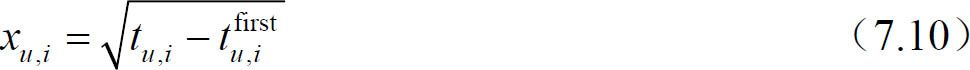
式中，tu，i 表示用户u对视频i的评分时间点， 表示用户u第一次对视频评分的时间点。最终，改进后的评分预测公式为
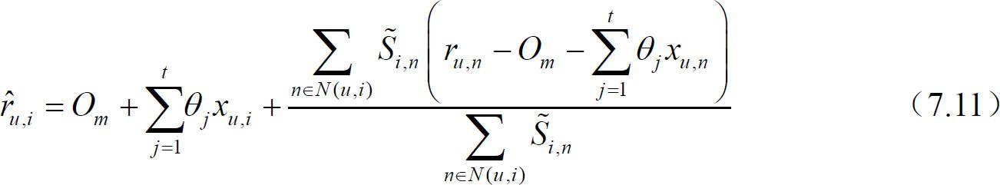
式中，Om 表示所用评分的平均值，t表示GE的数量。
7.6 基于Rocchio的CB推荐算法
该方法是一种侧重考虑反馈的方法。
1．算法背景
Rocchio [2] 是从用户观看历史中抽取用户喜好的视频特征构建用户画像常用的一种算法，是信息检索领域处理相关反馈（Relevance Feedback）的一个著名算法，它提供了如何通过用户观看视频的反馈计算用户特征向量中属性值的方法。举例来说，假如用户观看过“星球大战”和“加勒比海盗”并给予高分，那么根据用户的历史行为数据构建用户画像时，用户的特征向量可表示为｛“动作”：1、“欧美”：1，“科幻”：0.5，“冒险”：0.5｝，当该用户观看电影“2012”并为其打了个低分时，用户特征向量更新为｛“动作”：1、“欧美”：0.8，“科幻”：0.3，“冒险”：0.5｝。
2．算法原理
在视频推荐系统中，Rocchio算法根据用户的历史数据对用户的原始特征向量不断地进行修改，实现实时更新用户画像的功能。Rocchio算法基于这样的假设：如果我们需要计算出最精准用户特征向量Uc ，那么这个用户特征向量应该与用户喜欢的视频特征最相似，与用户讨厌的视频特征最不同。若Vl 表示用户喜欢的视频，Vh 表示用户讨厌的视频，那么根据Rocchio算法的思想，定义最优的用户特征向量为
式中，sim（Uc ，V1 ）表示用户特征向量与用户喜欢的视频的相似度。采用余弦相似度计算时，公式为
在实际计算用户特征向量的过程中，给定的目标用户特征向量可能已经存在，这时需要做的就是更新用户的特征向量，修改公式为
式中，U0 是原始的用户特征向量，α、β、γ为权重。若用户新的历史数据较多，那么可以增大β和γ的值，反之，用户更新数据较少则可以适当减少β和γ的值。在Rocchio算法中，向量的权重分量若为负值，那么该分量的权重自动修改为0。实际上，在设置权重时，α一般设为1，β的值比γ大，如β＝0.8及γ＝0.2，这是因为实际推荐中正反馈的影响力往往比负反馈大。应用相关反馈技术的效果如图7-4所示。
图7-4 应用相关反馈技术的效果示意图
在基于内容的视频推荐中，根据用户的历史行为数据建立用户画像，我们可以采用Rocchio算法不断地调整用户的特征向量Uc 。
式中，U0 为原来的用户特征向量（初始U0 ＝0）， 表示视频i的属性。Vl 和Vh 分别表示用户观看过的喜欢与讨厌的视频集合。例如，在评分取值为1～5的视频集中，假设用户评分3分以下表示不喜欢，则Vl 为那些用户观看过且评分在3分或3分以上的视频，Vh 为用户评分1～2的视频集合。α、β、γ为上述的U0 和正负反馈的权重。通过Rocchio算法在原有的用户画像基础上更新用户画像，将用户新的观看实时反馈更新以便产生更精准的推荐，同时，更新代价也不大。
7.7 基于决策树的CB推荐算法
1．算法背景
构建基于内容的推荐系统的另外一个学习算法是基于决策树的推荐算法，不同于其他算法，该算法在训练阶段会生成一个显式的决策模型。决策树可以通过训练数据集构建并有效判断一个新的视频是否可能受用户喜欢。当视频的特征属性较少时采用决策树算法能够取得不错的效果，另外，决策树学习的思想也比较容易被人理解，在视频推荐理由的可解释方面较好。
2．算法原理
在视频推荐系统中，决策树的内部节点通常表示视频的特征属性，这些节点用于区分视频集合，例如，通过视频中是否包含这个特征将其进行分类。在只有两个分类的简单数据集中，用户是否对视频感兴趣一般出现在决策树的叶节点上。图7-5是一个视频决策树的简单例子。
图7-5 决策树举例
如图7-5所示，当系统为用户A做推荐时，首先根据用户A的历史观看记录和对视频的评分构建用户画像并得出一个结论：当视频是奇幻或冒险类型的喜剧片，用户A很可能会喜欢它。当系统为用户A推荐一部新的视频，首先判断视频是否是喜剧，若视频不是喜剧，系统直接判定用户A不会喜欢这部视频并寻找新的视频继续进行决策判断；若视频是喜剧，那么系统接着判断视频是否属于奇幻或冒险题材，当视频满足其中的一个条件时，系统将做出决策：该视频是用户A可能喜欢的视频；否则，判定视频为用户不喜欢的类型。
7.8 基于线性分类的CB推荐算法
1．算法背景
将基于内容的视频推荐问题视为分类问题时，多种机器学习的方法都可以被采用。从一个更抽象的角度上看，大部分学习方法致力于找到一个可以准确区分用户喜欢和不喜欢的视频的线性分类模型系数。
将视频数据用n维特征向量进行表示，那么视频可用点在n维空间中表示，线性分类器试图在给定的视频数据空间中找出一个能够将视频正确分类的平面，一类点尽可能在平面的某一边，另一类则在平面的另一边。在视频推荐中，就是将视频分为用户喜欢和不喜欢两类。例如，用户A只喜欢看喜剧电影，那么划分用户A观看视频类别的分界条件就是视频是否为喜剧。
2．算法原理
基于线性分类器的CB推荐算法通过视频特征的线性组合进行分类。若输入的视频特征向量为 ，输出的结果y表示用户是否喜欢视频，则线性分类器可以表示为
式中， 表示视频特征向量对应的权重，根据输入的视频特征属性做出决定输出结果。
图7-6描述了一个用户观看视频数据的简单分类，视频只划分为“喜欢”和“不喜欢”两类，故分类器可以由一条直线表示。这种思想也可以在多维分类中加以应用，二维的分类器扩展为在多维中划分类别界限的超平面。
图7-6 一个简单的二维线性分类器
在二维空间中，我们寻找的直线可以用 表示，其中v1 和v2 对应于一个视频特征向量的两个分量，w1 、w2 和y是需要学习的参数。对于特定的一个视频，线性分类器判断对于该视频是否满足 ，输出分类结果，这可以有效地完成。在n维空间中，同样可以得到这样一个通用的式子，用权重和特征向量表示为 。
许多分类算法实际上都可以看作线性分类器，如朴素贝叶斯和Rocchio算法，其他的机器学习算法，如KNN（k最近邻算法），则不是线性分类器。通常，存在无限多的超平面可以划分视频数据空间。虽然这些平面都能完美地划分训练数据空间，在测试数据集上的划分却不一定相同，因为它们在测试集上可能存在不同的错误分类点。
使用线性分类器的另一个挑战是处理数据的噪声。数据集上的视频向量若存在噪声分量则可能会导致错误的分类结果。另外，也有可能存在“噪声视频”，由于不知名的原因错误地分类或者处于分类的边缘地带，这种噪声在数据中的识别并不容易。这些问题在使用线性分类器时需要注意。
7.9 基于朴素贝叶斯的CB推荐算法
1．算法背景
贝叶斯定理描述在一个随机事件发生下另一个随机事件发生的条件概率的定理。假设有随机事件A和B，那么贝叶斯定理可以用如下公式描述。
朴素贝叶斯算法是一种常用的分类方法。基于朴素贝叶斯的推荐系统判断用户是否对某个视频有兴趣的方法是将这个问题转化为分类问题，例如将其分为两类，一类为“喜欢”，另一类为“不喜欢”。朴素贝叶斯算法假设用户和视频的特征向量中的各个分量相互之间条件独立并成功地应用在基于内容的视频推荐系统中。回顾计算视频分类的后验概率基础公式
式中，X为视频的特征向量， 为特征向量的分量，表示视频的相关属性；C为视频的分类。 表示在分类c的一个视频的特征属性vi 出现的概率。这个条件概率可以通过观察分析训练数据得到。
2．算法原理
视频推荐系统中，分类c下的一个视频的特征属性vi 的条件概率用vi 在分类c下所有视频中出现的频率近似表示，即
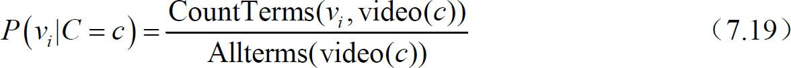
式中，CountTerms（vi ，video（c））表示vi 在标记为c的视频中出现的次数（即频度），Allterms（video（c））表示在这些视频中出现的所有特征属性的个数。为了预防计算概率为0的情况，对式子进行平滑化，得到新的公式如下。
式中，｜V｜表示所有视频中的出现的不同特征属性数（类似文章的词汇量）。
3．算法举例
在推荐视频时，5个视频的特征属性（本例中抽取视频的风格描述）和对应频度，以及视频的类别划分如表7-4所示，1为用户喜欢的视频，0为用户不喜欢的视频。
表7-4 标签计算举例
| Video ID | 特征属性 | 标签（Label） |
|---|---|---|
| 1 | 探险：2，科技：2 | 1 |
| 2 | 探险：2，教育：1 | 1 |
| 3 | 青春：1，日常：1，探险：1 | 0 |
| 4 | 探险，2，校园：1 | 1 |
| 5 | 探险：3，青春：1，日常：1 | ？ |
计算视频5中相关特征属性的条件概率过程如下：在标记为1的视频中出现的所有属性总数为10，在标记为0的视频中出现的属性总数为3，总的出现6个不同的特征属性。
视频5分类为1或0的先验概率分别是3/4和1/4，由此分类器计算对应的后验概率为
因此，将视频5标记为类别1，也就是用户可能喜欢的类型。
7.10 小结
本章从CB与CF的对比出发，在进行简单CB概述后，阐述了CB方法的粗粒度分类维度。在特征向量的计算描述基础上，按照该分类维度，我们对目前常见的CB方法，基础CB推荐算法、基于TF-IDF、基于KNN、基于Rocchio、基于决策树、基于线性分类、基于朴素贝叶斯等CB推荐算法，在原理、算法流程等方面进行了详细的介绍。
7.11 本章参考文献
[1] Adomavicius G，Tuzhilin A．Toward the next generation of recommender systems：A survey of the state-of-the-art and possible extensions［J］．Knowledge and Data Engineering，IEEE Transactions on，2005，17（6）：734-749．
[2] Joachims T．A Probabilistic Analysis of the Rocchio Algorithm with TFIDF for Text Categorization［R］．CARNEGIE-MELLON UNIV PITTSBURGH PA DEPT OF COMPUTER SCIENCE，1996．
[3]Webb G I，Pazzani M J，Billsus D．Machine learning for user modeling［J］．User modeling and user-adapted interaction，2001，11（1-2）：19-29．
第8章 基于知识的推荐方法
8.1 概述
基于知识（Knowledge-based，KB）的推荐方法，是区别于基于CB和基于CF的常见推荐方法。而什么是知识呢？如何表示呢？从概念上来讲，知识表示（Knowledge Representation）是一组为实现知识形式化描述而做的约定，是把知识客体中的知识因子与知识关联起来，便于人们的识别和对知识的理解，它是知识组织的前提和基础，任何知识组织方法都是建立在知识表示的基础上。这其实还是非常抽象和不易理解，因此如果想从知识的定义角度来区分基于知识的推荐与其他方法的区别，并不是十分有效。
实际上有个例子可以帮助我们形象地理解基于知识的推荐方法。如果说基于CB和基于CF的方法，像通用的搜索引擎的话，那么基于知识的推荐方法就像某个领域的垂直搜索引擎，可以针对该领域的特殊需求和更为精细的结构化内容，包括专业性的优质特征，帮助提高搜索引擎在特定领域的服务QoS。以视频推荐为例，一部电影的上映时间和档期热度，哪些导演指导的一定是大片，变形金刚系列和指环王系列口碑肯定不会差到多少等，都是非常有价值的推荐信息。因此，推荐系统需要利用特定领域相关的或者常识相关的额外的因果知识生成推荐或者辅助推荐决策。
此外，基于知识的推荐，也是更加容易满足主观个性化需求的方法。例如，只要是VIP付费用户，如果配置了偏好类型，就可以为其提供更加专注、精准和深入的推荐服务。
本章节主要面向两种常见的知识展开基于知识的推荐方法描述：一种是约束知识，主要面向人工知识库，构建if-then推荐规则；另外一种是关联知识，利用数据挖掘理论构建基于数据规律的自动学习的推荐规则。
8.2 约束知识与约束推荐算法
随着网络购物所能涵盖的物品类型越来越广泛，人们逐渐发现推荐系统中的CF推荐算法和CB推荐算法并不能很好地适应某些特殊物品的推荐需求。例如，更新换代非常快而人们又通常不会频繁购买的电子产品等。对于这些产品来说，其各方面的性能参数在几年之间就会有很大变化，代表着历史偏好的用户画像并不能很好地反映用户当前的购买需求，于是就需要推荐系统将用户的当前需求作为重要的信息参考源。人们发现可以利用物品的参数特征等属性形成约束知识，再将用户对物品的特定需求刻画为约束条件，然后经过对物品集合的约束满足问题的求解，就可以得到用户所期望的物品了。
在视频推荐领域中，基于约束的推荐可以被应用在针对某一特定类型影片的深度垂直搜索中，通常这类影片具有区别于其他类型影片的专业特色属性，而相对应的用户对此类型的影片也有着一定程度的专业性了解。例如，音乐爱好者在搜索古典音乐纪录片时，他们可能会倾向于将影片中所涉及的某些音乐元素作为约束条件。本节将以一个约束知识示例为铺垫，对约束满足问题和关联推荐算法的运作流程进行介绍。
8.2.1 约束知识示例
对于音乐爱好者来说，他们对古典音乐纪录片所看重的属性可能是影片话题（如钢琴家、小提琴家、指挥家等）、影片所涉及的音乐家或音乐团体、影片时长及发行年代等。倘若以这些独具特色的属性来对古典音乐纪录片进行表示时，我们就可以得到如表8-1所示的一个集合示例。
表8-1 示例：古典音乐纪录片集合（IClasslcMusDoc ）

8.2.2 约束满足问题
我们利用古典音乐纪录片的特殊属性形成如表8-1所示的影片集合后，就可以将基于约束知识的推荐过程视为约束满足问题（Constraint Satisfaction Problems，CSP）的解决过程，约束满足问题可以通过以下定义得到明确描述 [1] 。
定义8-1 创建推荐任务
推荐任务是以元组（R，I）的形式表示出来的，其中用集合R表示目标用户对物品的特定需求，即对物品的约束条件，用集合I表示一个物品集合。以表8-1为例， Ii
∈IClassicMusDoc 。推荐任务的完成目标是从集合I中确定出能够满足集合R要求的物品。
定义8-2 推荐任务的解决
推荐任务的解决是以找到可能的集合S为目标，集合S应满足的条件是 ，并且 ，其中，σ表示对集合I进行合取查询（Conjunctive Query）的运算符，R表示对物品的约束条件或选择标准（与定义8-1一致），集合I表示一个物品集合。
以表8-1为例，假设目标用户对古典音乐纪录片集合IClassicMusDoc 的特定需求（约束条件）为 ，则 ，即影片I18 是满足目标用户需求的。
当推荐系统找不到能够满足目标用户所给出的约束条件的物品时（即
），为了仍要生成推荐物品列表，系统就需要对约束条件做一定程度的修改，从而主动提出某些备选方案。以表8-1为例，假设目标用户对古典音乐纪录片集合IClassicMusDoc 的特定需求（约束条件）为 ，此时 。为解决这个问题，就需要使用冲突集检测与创建诊断集的方法，引出了下面两个定义。
定义8-3 冲突集
冲突集是以集合CS来表示，集合CS应满足的条件是： 。特别地，当不存在集合 时，集合CS被称为最小冲突集。
在上述例子中，可以确定出集合R中的最小冲突集为： 在确定出最小冲突集后，我们就可以使用创建诊断集的方法来解决冲突问题。
定义8-4 诊断集
诊断集是以集合Δ来表示，集合Δ应满足的条件是 ，并且 。特别地，当不存在集合 时，集合Δ被称为最小诊断集。
最小诊断集的意义在于，系统可以找到满足以集合R−Δ为约束条件的物品。上述例子中创建诊断集的过程如图8-1所示。首先对最小冲突集CS1 进行诊断，这里有两种解决方法。
图8-1 最小诊断集的创建过程
（1）删去约束条件r2 时， ，冲突解决。
（2）删去约束条件r1 时，基于剩下的约束条件，下一个存在的最小冲突集为CS2 。当对最小冲突集CS2 进行诊断时，由于删去约束条件r2 的情况已在上一过程中讨论过了，所以此时还有一种可能的情况，即删去约束条件r3 时， ，冲突解决。最终我们得到了最小诊断集 。
8.2.3 约束推荐算法流程
结合了单纯的约束满足问题和冲突集诊断的基于约束知识的推荐算法流程如下所示。
算法流程8-1 Method_ConsRulesBasedRec
算法输入：目标用户u的特定需求。
算法输出：针对目标用户u的推荐列表。
1．建立针对目标用户u的特定需求的推荐任务（R，I）。
2．对物品集合I进行以集合R为选择标准的合取查询，若 ，则跳至第6步；若 ，则进行第3步。
3．检测集合R中的最小冲突集CSi 。
4．针对最小冲突集CSi 创建最小诊断集Δ。
5．建立针对目标用户u的特定需求的推荐任务（R，I）。
6．创建针对目标用户u的推荐列表。
8.3 关联知识与关联推荐算法
关联知识以关联规则（Association Rules）为表现形式，用以描述数据库中数据之间关联性的知识。在推荐系统领域中，可以通过对用户画像中关联规则的挖掘来分析用户习惯，发现物品之间的关联性，并利用这种关联性指导系统做出推荐。典型的关联规则挖掘问题是超市中的购物篮数据分析，由美国沃尔玛超市分析发现的“尿布与啤酒”现象就是一个尤为经典的案例。在视频推荐领域中我们也常能发现关联推荐算法的身影，以豆瓣电影的推荐为例，在世界著名古典音乐指挥家卡拉扬的纪录片“卡拉扬——至臻完美”的影片信息页面中，我们可以看到豆瓣的推荐系统在其推荐区域会显示出对“钢琴的艺术”、“小提琴家的艺术”等音乐纪录片的推荐，而不仅仅是“指挥的艺术”。实际上，喜好古典音乐的观影者确实会观看上述影片，他们更希望系统不局限于某个类别中基于影片相似度的推荐（如继续推荐一些介绍其他指挥家的影片或介绍卡拉扬的其他影片），而是出现一些基于影片关联性的推荐（如推荐出一些介绍其他古典音乐大师的纪录片）。本节将对关联规则的描述、经典的Apriori关联规则挖掘算法，以及关联规则推荐算法的运作流程做逐一介绍。
8.3.1 关联规则描述
随着研究者对诸如超市购物篮交易数据等大型数据库所蕴含的物品间关联性的分析，关联规则的概念被提出来 [2] 。人们借助它符号化和形式化的语言来对物品间关联性进行刻画和描述，旨在从大量杂乱无章的数据中分析出少量易于理解的静态数据，如在大量的超市交易中发现某些常见的购物组合等。
关联规则的概念可以通过以下定义得到明确描述 [3] 。
定义8-5 物品与物品集合
设I=｛i1 ，i2 ，…，im ｝是m个不同物品的集合，每个ik （k=1，2，…，m）称为一个物品（Item）。物品的集合I称为物品集合（Item Set），简称为物品集。其元素个数称为物品集的长度，长度为k的物品集称为k-物品集（k-Item Set）。
定义8-6 交易
每笔交易T是物品集I上的一个子集，即 ，但通常 。对应每一个交易有一个唯一的标识——交易号，记作TID 。交易的全体构成了交易数据库D，或称交易记录集D，简称交易集D。交易集D中包含交易的个数记为｜D｜。
定义8-7 物品集的支持度
对于物品集X， ，设定 为交易集D中包含X的交易的数量。物品集X的支持度support（X）就是物品集X出现的概率，从而描述了X的重要性。
定义8-8 物品集的最小支持度与频繁集
发现关联规则要求物品集必须满足的最小支持阈值，称为物品集的最小支持度（Minimum Support），记为supmin 。支持度大于或等于supmin 的物品集称为频繁物品集，简称频繁集，反之则称为非频繁集。通常k-物品集如果满足supmin ，称为k-频繁集，记作Lk 。
定义8-9 关联规则
关联规则（Association Rule）可以表示为一个形如： 的蕴含式，其中
。例如，尿布与啤酒的关联规则可以表示为
定义8-10 关联规则的支持度
关联规则 的支持度（support）是指交易集D中同时包含物品集X和物品集Y的交易数与所有交易数之比，即
定义8-11 关联规则的置信度
关联规则 的置信度（Confidence）是指交易集D中包含物品集X和物品集Y的交易数与包含物品集X的交易数之比，即
的置信度（Confidence）是指交易集D中包含物品集X和物品集Y的交易数与包含物品集X的交易数之比，即

一般来说，只有支持度和置信度均较高的关联规则才是用户感兴趣的、有用的关联规则。
定义8-12 关联规则的最小支持度和最小置信度
关联规则的最小支持度也就是衡量频繁集的最小支持度（Minimum Support），记为supmin，它用于衡量关联规则需要满足的最低重要性。关联规则的最小置信度（Minimum Confidence）记为confmin ，它表示关联规则需要满足的最低可靠性。
定义8-13 强关联规则
如果关联规则 满足 且 confmin ，则称关联规则 为强关联规则，否则称关联规则 为弱关联规则。在挖掘关联规则时，产生的关联规则要经过supmin 和confmin 的衡量，筛选出来的强关联规则才能用于指导服务提供商的决策。
在一些情况下，使用支持度和置信度阈值可能会产生一些不正确的规则，比如下面的这个例子。
电影A、电影C为小众冷门电影，电影B为大众热门电影。在10万个用户中，有200个用户看过电影A，这200个用户里面有60个用户看过电影B、有40个用户看过电影C。在10万个用户中，看过电影C的用户数是300，看过电影B的用户数为50000。
于是可以计算出 ，即电影A与电影B更相关。但实际上，10万个用户里面有5万用户看过电影B，其中有一半的用户都喜欢电影B，而10万用户中看过电影A的用户里面只有30％的用户喜欢电影B，这就产生了理论与实际的价值衡量上的矛盾。人们为解决这个问题又加入了提升度的概念，见定义8-10。
定义8-14 关联规则的提升度
关联规则 的提升度（Lift）是指关联规则的置信度与物品集X的支持度之比，即
当 时，表示物品集X与物品集Y正相关；当 时，表示物品集X与物品集Y负相关。
时，表示物品集X与物品集Y正相关；当 时，表示物品集X与物品集Y负相关。
由定义8-10可以计算得出 ，表明电影A与电影B负相关，向观看过电影A的用户推荐电影B的意义不大；而电影A与电影C正相关，可以向观看过电影A的用户推荐电影C。
8.3.2 关联规则挖掘
关联规则的挖掘一般分为两个步骤：
（1）找出交易集D中的所有频繁集，即支持度大于或等于supmin 的物品集。
（2）由上一步的频繁项集产生强关联规则，这些规则必须大于或等于supmin 和confmin 。
举例来看，在某视频推荐系统的用户画像数据库中存在如表8-2所示的4组物品（如电影）组合，由这4组物品组合就可以计算出如表8-3所示的频繁集与支持度，进而发现了关联规则 。计算得到该规则的支持度 ，置信度 。假设推荐系统设置的supmin =50％，confmin =50％，则关联规则 是强关联规则。
表8-2 交易集中的某4组物品组合
| TID | 物品组合 |
|---|---|
| T1 | A，C |
| T2 | A，B，C |
| T3 | B，E，F |
| T4 | A，D |
表8-3 频繁集与支持度
| 频繁集 | 支持度 |
|---|---|
| ｛B｝ | 50％ |
| ｛A｝ | 75％ |
| ｛A，C｝ | 50％ |
| ｛C｝ | 50％ |
由上述例子可以看到，频繁集的发现是关联规则挖掘的重点所在，当交易集中的物品组合变得更为复杂时，就需要找到更好的方法来发现频繁集。下面要介绍的Apriori算法是一种经典的生成布尔型关联规则的频繁项集挖掘算法，它将发现关联规则的过程分为两个步骤。
（1）通过迭代的方法以最小支持度为标准检索出交易集中的所有频繁项集。
（2）利用频繁项集构造出满足用户最小置信度的规则。
同时，Apriori算法还基于如下两个重要性质：
性质1： 频繁项集的子集必为频繁项集。即假设项集｛A，C｝是频繁项集，则｛A｝和｛C｝也为频繁项集。
性质2： 非频繁项集的超集一定是非频繁的。即假设项集｛D｝不是频繁项集，则｛A，D｝和｛C，D｝也不是频繁项集。
挖掘或识别出所有频繁集是该算法的核心，占用了大部分的计算时间，我们可以通过下面这个例子对之加以深刻理解。如表8-4所示，假设在某视频推荐系统的用户画像数据库中存在4组物品组合，涉及5种物品（电影），且推荐系统设置的supmin =50％，supmin =50％，confmin =50％。
表8-4 交易集中的某4组物品组合
| TID | 物品组合 |
|---|---|
| T1 | A，C，D |
| T2 | B，C，E |
| T3 | A，B，C，E |
| T4 | B，E |
Apriori算法首先计算出1-物品集（共有5种可能的情况）所对应的支持度，如表8-5所示。由于1-物品集｛D｝的支持度小于supmin ，所以该1-物品集在此阶段被剔除。
表8-5 1-物品集及其支持度
| 1-物品集 | 支持度 |
|---|---|
| ｛A｝ | 50％ |
| ｛B｝ | 75％ |
| ｛C｝ | 75％ |
| ｛D｝（被剔除） | 25％ |
| ｛E｝ | 75％ |
Apriori算法再根据上一步结果计算出2-物品集（共有6种可能的情况）所对应的支持度，如表8-6所示。由于2-物品集｛A，B｝和2-物品集｛A，E｝的支持度小于supmin ，所以这两个2-物品集在此阶段被剔除。
表8-6 2-物品集及其支持度
| 2-物品集 | 支持度 |
|---|---|
| ｛A，B｝（被剔除） | 25％ |
| ｛A，C｝ | 50％ |
| ｛A，E｝（被剔除） | 25％ |
| ｛B，C｝ | 50％ |
| ｛B，E｝ | 75％ |
| ｛C，E｝ | 50％ |
Apriori算法又根据上一步结果计算出3-物品集（共有3种可能的情况）所对应的支持度，如表8-7所示。由于3-物品集｛A，B，C｝和3-物品集｛A，C，E｝的支持度小于supmin ，所以这两个3-物品集在此阶段被剔除。所以3-物品集｛B，C，E｝就是最终得到的频繁集。
表8-7 3-物品集及其支持度
| 3-物品集 | 支持度 |
|---|---|
| ｛A，B，C｝（被剔除） | 25％ |
| ｛A，C，E｝（被剔除） | 25％ |
| ｛B，C，E｝ | 50％ |
对于频繁集｛B，C，E｝，它的非空子集有｛B｝、｛C｝、｛E｝、｛B，C｝、｛B，E｝、｛C，E｝，据此有6种关联规则的可能情况，其对应的置信度如表8-8所示。
表8-8 关联规则及其置信度
| 关联规则 | 置信度 |
|---|---|
| R：B CE | 66.7％ |
| R：C BE | 66.7％ |
| R：E BC | 66.7％ |
| R：CE B | 1 |
| R：BE C | 66.7％ |
| R：BC E | 1 |
由于表8-8中各关联规则的置信度均大于confmin，所以这些关联规则都是强关联规则。
从上述例子也可以看出，由于Apriori算法的原理在于迭代式检索，原理简单，没有复杂的理论推导。然而获取频繁集时，频繁集的长度每增加一项，就需要多检索一遍数据表，这需要系统提供很强的I/O负载能力。同时，Apriori算法在运算过程中由于会穷举项目间所有可能的组合情况，所以会产生大量的中间项集，这同样加大了系统的运算负担。其他的经典关联规则挖掘算法如DHP算法 [4] 、Tree Projection算法 [5] 、FP-tree算法 [6] 等，从不同角度提供了更为高效的挖掘方法，感兴趣的读者可以从相应的文献中去深入了解，本书不对这些算法做过多介绍了。
8.3.3 关联推荐算法流程
基于关联规则的推荐算法实际上是以8.3.2节中所介绍的关联规则挖掘算法为基础的，在其上进行的一种延伸，其算法流程如下所示。
算法流程8-2 Method_AssoRulesBasedRec
算法输入：n个用户画像。
算法输出：针对目标用户u的Top-N推荐列表。
1．从系统中的n个用户画像中挖掘出所有的强关联规则，建立集合Pu 以表示目标用户u尚未观看但极可能感兴趣的视频。
2．再次使用置信度对集合Pu 中的视频进行高低排序。
3．取出排序列表中的前N个视频构成Top-N推荐列表。
由于对系统中全体用户的画像进行关联规则挖掘意义不明显且计算量大，所以基于关联规则的推荐算法常与CF推荐算法混合使用。在这类混合方案中，使用了CF推荐算法中的最近邻算法将上表中的用户画像数目n限定在目标用户的最近邻范围内，使得关联规则挖掘算法所处理的数据规模被有针对性地限制在一定范围内。同时，为了避免由于这种数据规模的限制而导致关联规则的挖掘结果受限，这类混合方案也会将CF推荐算法的结果作为对基于关联规则推荐算法结果的有效补充，纳入到最终的推荐列表中。
8.4 小结
本章从约束知识和关联知识的形式化描述方法出发，在8.2节和8.3节分别介绍了基于约束知识的视频推荐方法和基于关联规则的视频推荐方法，探讨了约束满足问题、关联规则挖掘等关键理论在视频推荐过程中的具体应用。
8.5 本章参考文献
[1] Robillard M P，Maalej W，Walker R J，et al．Recommendation Systems in Software Engineering［M］．Springer，2014．
[2] Agrawal R，Imieliński T，Swami A．Mining association rules between sets of items in large databases［C］//ACM SIGMOD Record．ACM，1993，22（2）：207-216．
[3] Jiawei H，Kamber M．Data mining：concepts and techniques［J］．San Francisco，CA，itd:Morgan Kaufmann，2001，5．
[4] Park J S，Chen M S，Yu P S．An effective hash-based algorithm for mining association rules［M］．ACM，1995．
[5] Agarwal R C，Aggarwal C C，Prasad V V V．A tree projection algorithm for generation of frequent item sets［J］．Journal of parallel and Distributed Computing，2001，61（3）：350-371．
[6] Han J，Pei J，Yin Y．Mining frequent patterns without candidate generation［C］//ACM SIGMOD Record．ACM，2000，29（2）：1-12．
第9章 混合推荐方法
9.1 概述
在第6～8章中所介绍的三类主流推荐方法，实际上是分别利用四种信息源来完成推荐过程的，包括用户画像、物品画像、群体数据、知识模型。其中，第6章所介绍的CF推荐方法利用了用户画像和群体数据这两类信息源，第7章所介绍的CB推荐方法利用了用户画像和物品画像这两类信息源，第8章所介绍的KB推荐方法利用了用户画像、物品画像和知识模型这三类信息源。由此可以看出，没有一类推荐方法可以同时利用四种信息源。同时，这三类优点各异的推荐方法也都存在各自的局限性，例如，CF推荐方法中的新用户/新物品冷启动问题、CB推荐方法中的新用户冷启动问题、KB推荐方法中的应用场合局限等，可以说没有任何单独的一类方法可以解决所有局限性问题。在这样的背景下，将多类推荐方法混合起来使用、各取其长的算法设计思路开始变得重要起来。
混合（Hybrid）推荐方法可划分为系统架构层面的混合方法和算法设计层面的混合方法，本章将只对算法设计层面的混合方法做详细介绍。算法设计层面的混合方法依照文献[1] ，[2] 的分类方法可分为七种混合方式，它们分别是：①特征组合（Feature Combination）；②特征补充（Feature Augmentation）；③加权式（Weighted）；④混杂式（Mixed）；⑤切换式（Switching）；⑥层叠式（Cascade）；⑦级联式（Meta-level）。这七种混合方式按照基本设计思路的异同可归类为三种 [3] ，其中，①②属于整体式（Monolithic）混合设计，③④⑤属于并行式（Parallelized）混合设计，⑥⑦属于流水线式（Pipelined）混合设计。本章将在9.2节逐一介绍算法设计层面的混合方法，在9.3节介绍一个混合式视频推荐系统的实例，在9.4节对本章内容做一总结。
9.2 算法设计层面的混合方法
通常情况下，为了减轻或克服由单一推荐方法所带来的算法弱点，推荐系统的设计人员会将两种或两种以上的推荐方法混合起来以构造性能更加优秀的推荐算法。以将CF类推荐算法（指CF推荐方法大类下的各分支算法，下同）与CB类推荐算法进行混合为例，CB类推荐算法可以有效抵消CF类推荐算法的冷启动问题，如新用户加入时由于用户画像中的评分过少而无法开展CF推荐；CF类推荐算法可以实现CB类推荐算法所不能提供的预测能力。常见的混合方法 [1] ， [2] ， [3] 如表9-1所示。
表9-1 常见的混合推荐方法及其描述
| 混合方法 | 方法描述 | |
|---|---|---|
| 并行式混合（Parallelized Hybridization） | 加权式（Weighted） | 推荐系统对多种推荐算法的计算结果进行加权平均处理，产生出单一的推荐结果 |
| 切换式（Switching） | 推荐系统在不同的推荐算法中进行切换以适应当前的推荐情境 | |
| 混杂式（Mixed） | 推荐系统同时呈现出其上多种推荐算法的推荐结果 | |
| 整体式混合（Monolithic Hybridization） | 特征组合（Feature Combination） | 推荐系统从多种推荐数据源中获取特征，将这些特征组合起来放入单一的推荐算法中 |
| 特征补充（Feature Augmentation） | 推荐系统将一种推荐算法输出的特征信息作为另一种推荐算法的输入特征信息 | |
| 流水线式混合（Pipelined Hybridization） | 层叠式（Cascade） | 推荐系统中的一种推荐算法对另一种推荐算法的推荐结果进行提炼 |
| 级联式（Meta-level） | 推荐系统将一种推荐算法学习到的模型作为另一种推荐算法的输入 |
本节将对表中的七种混合方法逐一做介绍。
9.2.1 并行式混合
并行式的混合方法（Parallelized Hybridization）包括加权式（Weighted）、切换式（Switching）和混杂式（Mixed），其共同点是运用特定的混合机制将系统内的多种推荐算法的输出结果加以整合形成最终的输出。并行式混合方法的示意图如图9-1所示。
图9-1 并行式混合（示意图）
1．加权式
加权式混合方法是众多混合方法中最易设计出混合推荐系统的一种方法，它是将系统中不同推荐算法所生成的物品评分、物品排序等推荐结果进行线性的加权组合，生成最终的推荐结果。
加权式混合方法的过程如图9-2所示，整个混合过程分为训练阶段、生成候选物品阶段和生成评分阶段 [2] 。
图9-2 加权式混合（示意图）
在训练阶段，各推荐算法使用相同的训练数据进行训练，直到能为测试用户提供候选物品的程度为止，之后进入到生成候选物品阶段。
在生成候选物品阶段，各推荐算法对同一用户画像进行候选物品的生成。需要注意的是，各推荐算法所能覆盖的物品范围是有差异的，例如，CF类推荐算法只能覆盖到已评分的物品，而CB类推荐算法可以覆盖到任何物品，在确定候选物品的范围时就要考虑到这一情况。在本阶段的最后，各推荐算法生成的候选物品一般要通过并集或交集的形式来结合。
在生成评分阶段，各推荐算法对上一阶段生成的候选物品集中每一个候选物品进行评分，系统再按照一定的加权方式（权重分配）将同一物品的各方评分综合为一个最终的分数，并按此分数对候选物品排序作为输出。
使用加权式混合方法的好处在于可以将系统的全部性能以最直接的方式应用在推荐过程中，而且在后期可以很容易对系统中各推荐算法的权重分配进行调整。但需要注意的是，使用加权式混合方法的一个隐含假设是系统中各推荐算法在用户和物品范围上的性能应该在一定程度上是统一的。很显然，CF类推荐算法在较新物品上的覆盖能力很弱，将之与CB类推荐算法进行混合时就需要对它们的候选物品空间做调整，这其实是牺牲了一部分CB类推荐算法的优势。
2．切换式
切换式混合方法是指系统会根据推荐时的具体情况在以上各种推荐算法中做切换，选择一种最合适的推荐算法。这种方法考虑到了不同的推荐算法对用户和物品范围的覆盖能力上的差异，对于不同的用户画像，系统会选择出不同的推荐算法来匹配。
切换式混合方法的过程如图9-3所示，整个混合过程分为训练阶段、算法选择阶段、生成候选物品阶段和生成评分阶段 [2] 。
图9-3 切换式混合（示意图）
在训练阶段，各推荐算法使用相同的训练数据进行训练，以达到能为测试用户提供候选物品的程度，之后进入算法选择阶段。
在算法选择阶段，算法切换标准的定义是非常重要的环节，此后系统会依据算法切换的标准，选择出最适合当前推荐情景的算法。一旦某一种推荐算法被选中，则该算法将单独进入之后的生成候选物品阶段和生成评分阶段中。
切换式混合方法由于要考虑算法切换所依据的标准，所以增加了推荐过程的复杂度。另一方面，切换式混合方法考虑了各推荐算法所能作用的用户范围，使用切换式混合方法的系统能对其中各推荐算法的优势与劣势保持很好的敏感性，这是切换式混合方法的显著优点。
3．混杂式
由于用户对物品的着眼点不同，而推荐算法所生成的推荐结果往往是代表各自的观察角度的，所以单一的推荐结果并不能满足各类人群的需求。为了保证最终的推荐结果能具有多样性，就可以使用混杂式混合方法将多种推荐算法的推荐结果按照一定的配比加以组合，同时呈现给用户。
混杂式混合方法的过程如图9-4所示，整个混合过程分为训练阶段、生成候选物品阶段和生成评分阶段 [2] 。
图9-4 混杂式混合（示意图）
在训练阶段，各推荐算法使用相同的训练数据进行训练，以达到能为测试用户提供候选物品的程度，之后进入生成候选物品阶段。
在生成候选物品阶段和生成评分阶段，各推荐算法根据同一用户画像分别生成候选物品集，并对这些候选物品集中的候选物品进行排序，最后系统将各推荐算法的排序结果综合呈现出来。
9.2.2 整体式混合
整体式的混合方法（Monolithic Hybridization）包括特征组合（Feature Combination）、特征补充（Feature Augmentation），它们的共同点是通过对主推荐算法的输入数据进行预先处理，扩展了主推荐算法可以利用的信息源数目，将多种推荐算法的特性整合到一起，实现推荐系统性能的提升。整体式混合方法的示意图如图9-5所示。
图9-5 整体式混合（示意图）
1．特征组合
如9.1节所总结的，单一类型的推荐系统所能利用的信息源是有限的，如单纯的CF类推荐算法无法利用到物品画像这一CB类推荐算法所能利用的信息源。从信息源的扩展利用这一角度出发，在推荐系统内部加入区别于主推荐算法的辅推荐算法，特征组合式混合方法先借助辅推荐算法从附加信息源中提取出附加特征，再将这些附加特征输入基于其他信息源的主推荐算法中，使得主推荐算法能够使用到附加信息源的数据，增强了算法的推荐性能。特征组合式混合方法的过程如图9-6所示。
图9-6 特征组合式混合（示意图）
如上所述可以看到，特征组合式混合方法可以让原本使用CB类推荐算法的系统可以利用到CF类推荐算法的信息源，而又不必完全依赖于它，这也就避开了CF类推荐算法的自身限制。而作为主推荐算法的CB类推荐算法仍然可以表现出CF类推荐算法所不能剖析的物品间相似度关系。
2．特征补充
特征补充式混合方法是先通过辅推荐算法对物品进行评分或分类，再将这些信息输入下一阶段的主推荐算法中，使得主推荐算法所能利用的数据被补充得更为丰富，这一点与特征组合式混合方法有很大区别。特征补充式混合方法的过程如图9-7所示。
图9-7 特征补充式混合（示意图）
特征补充式混合方法相对于特征组合式混合方法有更多优点。首先，设计基于特征补充式混合方法的推荐系统更加容易实现，它无须对主推荐算法做修改，而是通过优化输入数据来加强主推荐算法的性能的。另外，在特征组合式混合方法中，主推荐算法需要处理由辅推荐算法提供的大量高维数据，其本质是对双方提取的特征进行组合，而在特征补充式混合方法中，只有小规模的特征会被添加到主推荐算法的输入中，其本质是对主推荐算法提取的特征进行补充。
9.2.3 流水线式混合
流水线式的混合方法（Pipelined Hybridization）包括层叠式（Cascade）、级联式（Meta-level），其共同点是将各推荐算法按照一定次序依次运行，达到对推荐结果逐步优化的目的。流水线式混合方法的示意图如图9-8所示。
图9-8 流水线式混合（示意图）
1．层叠式
当系统中的主推荐算法产生了一些难以区分排名先后的推荐结果时，就可以在其后加入次级推荐算法来针对上一阶段的粗糙排序做出更为精细的排序，这就是层叠式混合方法。其过程如图9-9所示。层叠式混合方法的使用基于系统结果精度上的考虑，整体提高系统的结果精度会在价值较低的物品排序上耗费更多的计算资源，而使用层叠式混合方法就可以针对特定的结果进行排序优化，在资源上的分配更为合理。
图9-9 层叠式混合（示意图）
2．级联式
级联式混合方法与特征补充式混合方法有类似的架构，但这两种方法中由辅推荐算法输入主推荐算法中的数据类型非常不同，特征补充式混合方法是把辅推荐算法依靠学习模型得到的特征作为主推荐算法的输入数据，而级联式混合方法是把辅推荐算法的整个学习模型作为主推荐算法的输入数据。级联式混合方法的过程如图9-10所示。级联式混合方法特别适合CB类推荐算法与CF类推荐算法的组合情形，系统首先使用CB类推荐算法学习出可以表示用户画像的模型，然后CF类推荐算法利用这些信息稠密的模型达到更佳的推荐性能，其效果要比直接利用粗糙的评分数据好很多。
图9-10 级联式混合（示意图）
9.2.4 典型混合应用系统
本节旨在通过对学术界的典型混合应用系统进行分析来得出一些有助于构造混合式视频推荐系统的设计思路。通过对文献[1] 中算法混合归类表的项目继续聚类整合（把原表中的DM（Demographic）视为CF类推荐算法的特殊情形），以及新文献的补充，得到如表9-2所示的结果，表中，灰色格子表示由于一些混合方法（加权式、切换式、混杂式和特征组合式）对各算法的顺序不敏感而出现的表意相同情况，如CF/CB与CB/CF在加权式混合方法中的表意相同，所以只需关注表中的其中一项；黑色格子表示不能产生混合结果的项目；空白格子表示尚未发现或尚待补充相关混合方式的文献。
表9-2 算法混合系统归类

1．并行式混合应用系统分析
（1）加权式。如何为不同的推荐算法分配相应的权重，是在使用加权式混合方法设计推荐系统时需要重点考虑的问题。对于采用加权式混合方法设计的视频推荐系统，其可能涉及的推荐算法混合形式为CF/CB、CF/KB和CF/CB/KB，可以采用以下的权重分配方式。
①动态调整。以文献[5] 的P-Tango系统为例，它混合了CF类推荐算法和CB类推荐算法，在系统运行的初始阶段会为这两种推荐算法赋予相同的权重，之后再根据预测评分的准确性对它们的权重分配进行调整。
②投票替代数值评分。文献[6] 的混合推荐系统使用了让各推荐算法进行投票的方式来替代数值评分，最后通过一致性的策略将各方的投票结果进行整合。
③由实验分析确定最佳权重配比。文献[7] 的混合推荐系统包含CF类推荐算法和基于语义分析的推荐算法，其作者经实验分析发现2∶3的权重分配可以使得该系统产生最高的准确度。
（2）切换式。算法切换所依据的标准是切换式混合方法需要考虑的关键问题，在设计基于切换式混合方法的视频推荐系统时，其可能涉及的推荐算法混合形式为CF/CB、CF/KB和CF/CB/KB，可以采用以下的算法切换标准。
①算法可达到的置信度。文献[8] 中所介绍的两种切换式混合推荐系统均采用置信度作为算法切换标准，NewDude系统是由三种推荐算法构成的（依次是基于内容的最近邻推荐算法、CF类推荐算法和基于内容并使用朴素贝叶斯分类的推荐算法），当前一种算法不能提供比较高的可信度时，系统就会切换至下一种推荐算法；DailyLearner系统是由两种推荐算法构成（依次是CB类推荐算法和CF类推荐算法），其算法切换机制与NewsDude系统比较类似。
②用户游弋在网站物品信息中的深浅程度。文献[10] 中所介绍的混合方案是基于用户在网站中的当前位置及连通度（Degree of Connectivity）来进行算法切换的，当用户处于网站中具有高连通度（即处于网站物品信息的浅层）的区域时，系统会首选那些约束性较弱的推荐算法，而当用户游弋在网站物品信息的深处时，系统会选择后续算法。
（3）混杂式。在使用混杂式混合方法来设计视频推荐系统时需要注意的是，如何设计仲裁机制来解决组合推荐结果时会遇到的冲突问题，其可能涉及的推荐算法混合形式为CF/CB、CF/KB和CF/CB/KB，可以采用以下的方法加以解决。
①为各算法预先设定优先级。文献[11] 所描述的PTV电视节目系统在进行结果冲突的仲裁时会将高优先级分配给CB类推荐算法（可作用于电视节目文本信息），而将低优先级分配给CF类推荐算法（可作用于用户群的偏好信息）。
②将各算法结果并列输出。文献[12] ，[13] 所描述的ProfBuilder系统和PickAFlick系统，它们都是将其上的各推荐算法所生成的结果进行并列输出。
2．整体式混合应用系统分析
（1）特征组合式。在使用特征组合式混合方法来设计视频推荐系统时，可以参考文献[14] 所描述的系统。这个系统的主推荐算法为CB类推荐算法，该算法在利用电影的物品画像（以电影的内容固有属性为主）的同时，也将辅推荐算法所提供的群体数据（如用户A和用户B都喜欢某部电影）作为物品画像的附加特征加以利用，使得主推荐算法的性能大大增强。
（2）特征补充式。在使用特征组合式混合方法来设计视频推荐系统时，考虑到其可能涉及的推荐算法混合形式以CF/CB或CB/CF为主，可以参考以下的设计思路。
①CF/CB。文献[15] 中描述的Libra系统基于Amazon上的图书信息，进行基于内容的图书推荐，而Amazon中的图书信息是基于其上的CF类推荐算法得到的。
②CB/CF。文献[16] 介绍了一种基于内容启动的CF类推荐算法，该算法首先在训练数据上学习得到一个基于内容的模型，用此模型对未评分物品生成评分，使得原有的画像得到很大程度上的充实，在下一阶段被主推荐算法（CF类推荐算法）所利用。
3．流水线式混合应用系统分析
（1）层叠式。在使用浮点数来表示推荐结果的推荐系统中，因为结果排序可以根据数值确定出来，所以并不太需要层叠式的混合架构，但在使用特定整数值（如0～10分）来表示推荐结果的推荐系统中，获得相同评分的物品会非常多，就需要使用层叠式混合方法来获得更为精确的结果排序。在使用层叠式混合方法来设计视频推荐系统时，可以通过推荐算法的层叠式排列得出高精度的推荐结果排序，如文献[1] 中所描述的EntreeC系统使用基于知识的推荐算法生成整数值的推荐结果，之后采用协同推荐算法对评分相同的物品（饭馆）生成精确排序。
（2）级联式。级联式混合方法由于其特殊的实现过程，特别适合CB/CF类推荐算法的组合情形 [17] ， [18] ， [26] ， [27] ，因而在设计视频推荐系统时就可以充分利用这种设计思路。以文献[27] 所描述的Fab系统为例，该系统使用CB类推荐算法作为辅推荐算法对用户画像进行创建和维护，然后直接通过计算用户画像间的相似度来为之后的主推荐算法（CF类推荐算法）提供协同过滤上的便利，在很大程度上增强了主推荐算法的性能。
9.3 混合式视频推荐实例
在视频推荐领域中，将CB类推荐算法与CF类推荐算法相混合的系统设计较为常见，本节将以文献[19] 所描述的MoRe电影推荐系统为例，从系统概览、算法介绍和混合机制等方面对这种常用的混合思路做初步介绍。
9.3.1 MoRe系统概览
MoRe（Movie Recommender）系统是一种混合了CB类推荐算法和CF类推荐算法，并使用了切换式混合方法而设计出的电影推荐系统，它能够基于用户评分数据通过图形界面向用户返回带有电影离散评分值（1～5分）和相关影视信息的推荐结果，该系统在算法设计层面的架构如图9-11所示。
图9-11 MoRe系统在算法设计层面的架构
在系统准备阶段，MoRe系统在内部集成了业界著名的MovieLens电影评分数据集，但由于该数据集中的电影信息只包含有标题和制片日期，这两项属性对于描述一个电影来说是远远不够的，因此MoRe系统又增加了一个从IMDb数据库爬取电影详细信息（电影类型、演员表、导演、编剧、制片人和关键词）的爬虫程序，这个程序能将MovieLens数据集中的电影信息补充到非常丰富的程度。在拥有了这样一个信息丰富的数据集后，MoRe系统就可以在系统准备阶段对所有可能的电影进行相似电影集合的离线计算，为每部电影计算到的相似电影集合的大小可以由系统管理员来调节，这个阶段的计算会使用到系统架构中的基于内容的推荐算法。
在系统启动阶段，MoRe系统为减轻新用户的冷启动问题而采取了一些措施，它会要求用户在初次登录系统时为一组电影集合提供评分，为了确保这组电影在最大程度上是新用户已经观看过的，MoRe系统使用了文献[20] 所介绍的度量方法（log（popularity）*entropy）将那些流行度很高的电影筛选出来。在系统得到新用户的最初评分后，会将这些评分数据以评分矩阵的形式与之前的电影数据集结合起来，输入系统的推荐算法中，进入正式的推荐阶段。
在生成推荐阶段，系统管理员可以将系统设置在CB类推荐算法、CF类推荐算法和CB/CF混合推荐算法这三个算法模式上运行。其中，CB/CF混合推荐算法是采用了切换式混合方法并依据两种不同的切换标准而设计的，这两种标准的差异将在9.4.3节予以介绍。在系统生成推荐后，用户最终会得到一个电影排名列表，其中的每部电影都会附有系统针对目标用户所预测的分值，用户也可以在这个列表上做评分反馈，以逐步修正系统的判断。
9.3.2 MoRe算法介绍
MoRe系统在电影推荐过程中使用了CF类推荐算法和CB类推荐算法，以及它们在后续阶段的切换式混合，本节将对这两类算法在MoRe系统中的应用做简要介绍。
1．MoRe-CF类推荐算法
MoRe-CF类推荐算法可分为三步：
①计算目标用户和其他用户之间的相似度。
②生成目标用户的邻居集合。
③利用邻居用户对目标电影的评分加权平均值预测目标用户的评分。
在第①步计算中，MoRe系统使用了Pearson相关系数来计算用户之间的相似度。Pearson相关系数的计算方法如下式所示。
式中，Xi 和Yi 分别表示用户X和用户Y对电影i的评分， 分别表示用户X和用户Y的所有电影评分均值。MoRe系统实际上所使用的是另一种形式的Pearson相关系数计算方法，由于不需要计算评分均值，所以计算速度更快，该方法如下式所示。
式中，n表示用户X和用户Y都评过分的电影书目。需要注意的是，如果有用户对所用电影都评分相同，则会导致上式中的分母为0，所以系统会将这样的用户排除掉。另外，对于那些n≤50的用户，系统会为其附上n/50的权重值，以降低这些用户的影响。
在第②步计算中，系统选择那些与目标用户正相关的其他用户作为邻居用户，且当邻居用户的数目大于等于5时才能构成邻居用户集合。
在第③步计算中，系统将计算邻居用户集合中所有邻居用户的评分加权均值，以便计算出针对目标用户的预测评分，计算方法如下式所示。
式中，Ki 表示目标用户对电影i的评分， 表示目标用户的所有评分均值，Ji 表示邻居用户对电影i的评分，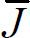 表示邻居用户的所有评分均值，rKJ 表示目标用户K与邻居用户J的Pearson相关系数。
2．MoRe-CB类推荐算法
MoRe-CB类推荐算法使用六种电影属性（电影类型、演员表、导演、编剧、制片人和关键词）来描述一部电影，每部电影将被表示为向量的形式，向量中每个元素的可能取值为0或1，用来表示某个属性是否出现在该电影中。
系统使用余弦相似度的方法来计算两部电影之间的相似度，如下式所示。
式中，ai 和bi 分别表示向量 的第i个元素的取值。
由于电影数据集的更新不会太频繁，所以系统会在离线状态下计算出数据集中电影之间的相似度，根据相似度的大小为每部电影记录下k个最相似的电影信息。当目标用户向系统提供了一组高评分（如4～5分）的电影集合U时，系统会根据集合U中的每部电影j的k个最相似电影建立出一个候选电影集合C。然后再计算集合C中的每部电影与集合U中的每部电影的相似度，根据相似度大小对集合C中的电影按降序排列，这就生成了可以展示给用户的推荐列表。
上述的方法虽然能生成推荐列表，但是其推荐结果的形式不是数值式的，与生成数值结果的MoRe-CF类推荐算法还不能统一到一起。因此，系统又对上述的电影间相似度进行了归一化、数值化的处理，能够将相似度转化为评分数值，其处理方法如下式所示。
式中，MaxSim和MinSim表示集合C与集合U中的每部电影间相似度的最大值和最小值，Simi 表示电影i与集合U中电影的相似度。上述方法能将MinSim和MaxSim的取值范围标准化到［1，5］，与MoRe-CF类推荐算法所使用的数值范围保持一致。
系统在使用MoRe-CB类推荐算法时，由于计算电影间相似度的工作可放到离线状态进行，所以生成推荐结果的速度要高于MoRe-CF类推荐算法。另外，对于一些特定数据集来说，MoRe-CB类推荐算法相比MoRe-CF类推荐算法来说会更有优势。
9.3.3 MoRe算法混合
MoRe系统在推荐算法的正式实施阶段使用了切换式混合方法，依据两种切换标准在MoRe-CF类推荐算法和MoRe-CB类推荐算法中做切换，当默认的首选算法MoRe-CF类推荐算法不能满足相应的推荐需求时，系统就会切换到MoRe-CB类推荐算法。
第一种切换标准是以目标用户的邻居用户集合的大小为切换触发条件的，当邻居用户集合小于5时系统会切换到MoRe-CB类推荐算法。MoRe-CF类推荐算法在邻居集合过小时会出现预测失败的问题，此时切换到MoRe-CB类推荐算法将会有助于同时提升系统的预测准确度和覆盖率。同时，由于MoRe-C B类推荐算法的推荐速度高于MoRe-CF类推荐算法，所以系统在切换算法时产生的时延将不会显著影响到用户的使用体验。
第二种切换标准是以目标用户的可用评分数量为切换触发条件的，当目标用户的可用评分数量低于40时系统会切换到MoRe-CB类推荐算法。过少的目标用户可用评分会使MoRe-CF类推荐算法无法做出有效预测，而MoRe-CB类推荐算法则基本不会受到此方面的影响。实验结果表明，在使用第二种切换标准时，系统在切换算法后所达到的预测覆盖率会比切换算法前高出0.5％。
9.3.4 MoRe实验分析
针对MoRe系统设计的算法比较实验主要比较混合算法的两个方案，以及基础算法（CF和CB类推荐算法）的预测准确性、规模和实际运行时做出预测所需的时间。此外，由于在MoRe系统中纯CF类推荐算法在实现上限制了目标用户的相似邻居个数（5个邻居），所以在实验中也会将它和典型的没有邻居个数限制的CF类推荐算法进行比较。另外，实验还将评估用于描述视频的特征向量的个数对于CB类推荐算法的影响。
实验采用平均绝对误差（MAE）这一评价措施估算实验预测精度。对于使用用户对视频的评分数据并将视频推荐度用数值表示的系统，MAE是一个合适的测量方法。若r1 ，…，rn 为测试集中一个用户对视频的真实评分，p1 ，…，pn 是预测评分，并且 为实验误差，那么MAE计算公式如下：
在实验过程中，将原始数据集划分为两个随机选择的子集：一个是训练集，其中包含80％的每个可用用户的评分数据；另一个是测试集，为剩余20％的用户评分数据。系统利用80％的训练集为剩余20％的测试集做评分预测。为了比较不同推荐方法的MAE并验证差异具有统计学意义，我们在99％置信空间（因为某些正常需求或有些参数测试不满足预测条件）应用无参数威尔科克森符号秩检验（Wilcoxon Rank Test）。
纯CF类推荐算法的MAE是0.7597，覆盖率98.34％。CF类推荐算法（没有邻居个数限制）的MAE是0.7654，覆盖率99.2％。Wilcoxon的p值测试（p=0.0002）表明：利用至少五个邻居为目标用户作视频评分预测这个限制能保证预测更精确，但会降低部分覆盖率。
纯CB类推荐算法的预测MAE值为0.9253（p=0.000），明显不同于CF类推荐算法。它的覆盖率是100％，因为CB类推荐算法能够为每一部电影都做出预测（系统保证目标用户至少为一部视频评分）。在上面的实验中，如果一个词至少在两部视频的描述中出现，那么就将这个词作为视频的一个特征表示。表9-3展示了计算出的视频阈值为3、5、10和15时的预测准确性。
表9-3 特征数目和预测准确性
| Case | 阈值（视频） | MAE | 视频特征数目 |
|---|---|---|---|
| 1 | 2 | 0.9253 | 10626 |
| 2 | 3 | 0.9253 | 10620 |
| 3 | 5 | 0.9275 | 7865 |
| 4 | 10 | 0.9555 | 5430 |
| 5 | 15 | 0.9780 | 3514 |
比较Case 1和Case 2，可以观察到二者的MAE值没有差异。而Case 2和Case 3、4、5之间则存在一定差异（对于所有的情况，p=0），因此，可以得出这样的结论：用来表示视频的特征数量是一个影响推荐准确性的重要因素。更具体地说，视频特征数越多推荐越准确。需要注意的是，在实验中朴素贝叶斯算法的表现并不理想，MAE=1.2434。通过将评分超过3分定义为积极评分（用户可能喜欢的视频）、低于3分定义为消极评分可以改善算法的表现（MAE=1.118）。然而，这个误差值仍明显高于之前的算法，因此在后续混合算法时不考虑将它进行混合。
切换式混合方案1是为了实现100％的覆盖率（能够为所有用户做推荐），该方法的MAE是0.7501，这是对纯CF推荐算法的推荐准确性的一个重要改进（p＜0.00001）。
切换式混合方案2的覆盖率是98.8％，MAE是0.7702。与混合算法一和纯CF类推荐算法不同（p=0.000），该算法产生推荐的准确性不如纯CF类推荐算法和混合算法一，覆盖范围介于两者之间，但它产生推荐的时间比上面两种方法少。尽管推荐方法通常是评估算法的准确性和覆盖率，但是对于推荐系统设计师而言，可能更看重执行时间的减少，特别是在拥有大用户或者视频数据量的系统中。表9-4描述了4个推荐方法的MAE值、覆盖率、预测程序运行时间（运行机器：奔腾处理器，3.2 GHz，1 GB内存）。
表9-4 推荐方法的MAE、覆盖率和预测时间
| 推荐算法 | MAE | 覆盖率 | 预测执行时间/s |
|---|---|---|---|
| 纯CF类推荐算法 | 0.7597 | 98.34％ | 14 |
| 纯CB类推荐算法 | 0.9253 | 100％ | 3 |
| 切换式混合算法一 | 0.7501 | 100％ | 16 |
| 切换式混合算法二 | 0.7702 | 98.8％ | 10 |
需要注意的是，在预测执行时间方面最耗时的算法是CF类推荐算法。如果在同一预测时间内计算活跃用户和其他用户之间的相似性，那么对于n个用户m部视频的数据它的复杂度是O（nm）。如果预先计算好所有成对用户之间的相似性，这个计算过程的脱机成本为O（n2 m），则算法复杂度可以减少到O（m）。然而，这样一个预先计算的步骤将影响CF类推荐算法的最重要的特征之一，即能够在预测过程中结合最新的评分进行预测。在用户兴趣快速变更的情况下，离线计算步骤可能不是一个有价值的选择。
上述实验结果提供了关于CF类推荐算法和CB类推荐算法的预测及其组合下的切换式混合系统的有用见解。CF类推荐方法是最准确的推荐方法之一，但对于非常大数据集的问题预测执行时间更有意义，这时应考虑预先进行相似性计算降低执行时间成本。目标用户的邻居数目也会影响到推荐的准确性，限定最小邻居数量为5能够提高预测精度，但在覆盖率成本上会相对高一些。CB类推荐方法在预测准确度上虽然比CF类推荐方法差，但是预测执行时间相对较快。在视频推荐领域，预测的准确性依赖于视频特征的数目。视频特征数越多，推荐越准确。切换式算法一相对于CF类推荐算法，在预测准确性和覆盖率方面都有所提升。另一方面，切换式算法二虽然没有提高CF类推荐算法的预测准确度，但却有效地降低了预测的执行时间。
9.4 小结
本章从各类推荐方法对四种信息源的利用度出发，在9.2节对算法设计层面的七种混合方法做了具体介绍，最后通过对学界的典型混合应用系统的分析来得出一些有助于构造混合式视频推荐系统的设计思路，以作系统设计时的参考。本章在最后的部分以MoRe电影推荐系统作为混合式视频推荐实例，对其混合算法的实现原理和实验过程等关键环节做了较为详细的分析与介绍。
9.5 本章参考文献
[1] Burke R．Hybrid recommender systems：Survey and experiments［J］．User modeling and user-adapted interaction，2002，12（4）：331-370．
[2] Burke R．Hybrid web recommender systems［M］//The adaptive web．Springer Berlin Heidelberg，2007：377-408．
[3] Jannach D，Zanker M，Felfernig A，et al．Recommender systems：an introduction［M］．Cambridge University Press，2010．
[4]Amatriain X，Basilico,J．System Architectures for Personalization and Recommendation［EB/OL］．http://techblog.netflix.com/2013/03/system-architectures-for.html，2013．
[5] Claypool M，Gokhale A，Miranda T，et al．Combining content-based and collaborative filters in an online newspaper［C］//Proceedings of ACM SIGIR workshop on recommender systems．1999，60．
[6] Pazzani M J．A framework for collaborative，content-based and demographic filtering［J］．Artificial Intelligence Review，1999，13（5-6）：393-408．
[7] Mobasher B，Jin X，Zhou Y．Semantically enhanced collaborative filtering on the web［M］//Web Mining：From Web to Semantic Web．Springer Berlin Heidelberg，2004：57-76．
[8] Billsus D，Pazzani M J．User modeling for adaptive news access［J］．User modeling and user-adapted interaction，2000，10（2-3）：147-180．
[9]Van Setten M．Supporting people in finding information：hybrid recommender systems and goal-based structuring［J］．2005．
[10] Nakagawa M，Mobasher B．A hybrid web personalization model based on site connectivity［C］//Proceedings of WebKDD．2003：59-70．
[11] Smyth B，Cotter P．A personalized television listings service［J］．Communications of the ACM，2000，43（8）：107-111．
[12] Ahmad Wasfi A M．Collecting user access patterns for building user profiles and collaborative filtering［C］//Proceedings of the 4th international conference on Intelligent user interfaces．ACM，1998：57-64．
[13] Burke R．Knowledge-based recommender systems［J］．Encyclopedia of Library and Information Science：Volume 69-Supplement 32，2000：180．
[14] Basu C，Hirsh H，Cohen W．Recommendation as classification：Using social and content-based information in recommendation［C］//AAAI/IAAI．1998：714-720．
[15] Mooney R J，Roy L．Content-based book recommending using learning for text categorization［C］//Proceedings of the fifth ACM conference on Digital libraries．ACM，2000：195-204．
[16] Melville P，Mooney R J，Nagarajan R．Content-boosted collaborative filtering for improved recommendations［C］//AAAI/IAAI．2002：187-192．
[17] Pazzani M J．A framework for collaborative，content-based and demographic filtering［J］．Artificial Intelligence Review，1999，13（5-6）：393-408．
[18] Schwab I，Kobsa A，Koychev I．Learning user interests through positive examples using content analysis and collaborative filtering［J］．Internal Memo，GMD，St．Augustin，Germany，2001．
[19] Lekakos G，Caravelas P．A hybrid approach for movie recommendation［J］．Multimedia tools and applications，2008，36（1-2）：55-70．
[20] Pazzani M，Billsus D．Learning and revising user profiles：The identification of interesting web sites［J］．Machine learning，1997，27（3）：313-331．
[21]Towle B，Quinn C．Knowledge based recommender systems using explicit user models［C］//Proceedings of the AAAI Workshop on Knowledge-Based Electronic Markets．2000：74-77．
[22]Tran T，Cohen R．Hybrid recommender systems for electronic commerce［C］//Proc．Knowledge-Based Electronic Markets，Papers from the AAAI Workshop，Technical Report WS-00-04，AAAI Press．2000．
[23]Sarwar B M，Konstan J A，Borchers A，et al．Using filtering agents to improve prediction quality in the grouplens research collaborative filtering system［C］//Proceedings of the 1998 ACM conference on Computer supported cooperative work．ACM，1998：345-354．
[24]李忠俊，周启海，帅青红．一种基于内容和协同过滤同构化整合的推荐系统模型［J］．计算机科学，2009，36（12）：142-145．DOI：10.3969/j.issn.1002-137X.2009.12.034．
[25]曹毅，贺卫红．基于用户兴趣的混合推荐模型［J］．系统工程，2009，（6）：68-72．
[26] 任磊．基于增量学习的混合推荐算法［J］．计算机应用，2010，30（5）：1287-1289．
[27] BalabanovićM，Shoham Y．Fab：content-based，collaborative recommendation［J］．Communications of the ACM，1997，40（3）：66-72．
第10章 视频推荐评测
10.1 概述
随着个性化推荐系统越来越广泛的应用，学术界和产业界也对个性化推荐算法有了更积极的研究，每年针对视频推荐都有大量论文发表。但是，面对众多的视频推荐算法，如何评价这些推荐算法的优劣目前并没有一个统一的标准。很多学者片面地将准确度作为唯一指标对推荐算法进行评价，而毫不顾忌覆盖率、多样性等指标，这无疑使得推荐算法的优化过程与正确方向有所偏离；另一方面，几乎每一篇关于视频推荐算法的文章都是由作者来决定采用哪种评价标准与其他算法进行比较的，从而表明自己的算法表现更好。一些作者只会将自己算法表现好的指标写进文章中，对于表现不好的指标不予深究。而对推荐评测不太熟悉的读者可能就被这样的说辞蒙蔽，不能对文章中的算法有个客观的评价。因此，在讨论各种视频推荐算法的同时，本书也将视频推荐评测方法做了归纳和总结。笔者认为，这不但能有助于大家客观评价一个视频推荐算法的好坏，更有益的作用是，可以根据这些评测方法来指导视频推荐算法的改进，从而得到更好的推荐效果。
一般说来，推荐系统评测主要考虑试验方法和评测指标两个方面。试验方法是指用哪些数据去对一个待评测的推荐算法进行评价；测量指标是指用待评测算法的哪些指标进行比较，从而衡量哪个算法的性能更优异。
推荐系统评测的试验方法可分为用户调查、在线评测和离线评测三种方式（见表10-1）。
表10-1 三种推荐评测试验方法对比
| 评测方法 | 优点 | 缺点 |
|---|---|---|
| 用户调查 | 可直观得到用户满意度 | 没有准确度等指标、不宜大规模开展 |
| 在线评测 | 数据真实、评测指标直观 | 成本高、试验结果不可解释性、周期长、需要大量用户 |
| 离线评测 | 低成本、指标可解释 | 数据稀疏性、指标不直观 |
顾名思义，用户调查通过问卷的形式向用户询问喜欢哪种推荐结果，从而决定推荐算法的好坏。这要求将用户对推荐结果的感知进行量化（比如，对本次视频推荐的结果满意度打分），但是显而易见，这种方法并不适合在实际操作中大量应用。值得注意的是，用户问卷只调查用户对于推荐结果的满意度，并不涉及推荐的准确性，因为在用户被调查的时候并不知道被推荐的片子是不是相关性最高的。
在线评测就是设计在线用户试验，根据用户在线反馈来衡量推荐系统的表现，目前最常用的在线测试方法之一是A/B测试。这种在线测试方式虽然可以直观地得到用户对系统的满意度等指标，但是从设计试验到施行试验整个过程所需的高额成本却是一般的科研工作者都无法负担的，所以这种测评方法一般用于商用视频推荐算法产品的测试，并不常见于科研工作中。
离线评测根据待评价的推荐系统在试验数据集上的表现来衡量推荐系统的质量。相对于在线评测，离线评测方法更方便经济，一旦数据集选定，只需要将待评测的推荐系统在此数据集上运行即可。在目前的研究工作中离线评价方式仍是科研工作人员的首选。
推荐系统常用的评测指标是准确度指标，它用于衡量该算法能够多准确地预测用户对视频的喜欢程度。准确度指标又有多种衡量方式，有的比较视频预测评分和真实评分的绝对差值，有的衡量视频预测评分和真实评分的相关性，有的不考虑具体评分只考虑排名是否正确。除了这些准确度指标之外，还需要从其他指标方面衡量一个视频推荐系统的好坏，比如准确度指标达到要求以后，所推荐的视频是否最大范围地覆盖了系统中尽可能多种类的视频？是否能够满足不同用户的个性化需求？
要研究视频推荐的评测方法，就需要从试验方法和评测指标两个方面着手。以上提到的三种试验方法各有利弊，各种评测指标也是在不同的应用场景中各有侧重，在本章的后续章节中，我们将详细介绍三种试验方法和几种常用的视频推荐评价指标：首先在10.2节中详细介绍用户调查、在线评测、离线评测三种试验方法，再在10.3节中针对视频推荐算法的评价常用指标一一详细介绍，10.4节将对本章做出归纳小结。
10.2 视频推荐试验方法
在推荐测评系统中，主要有用户调查、在线评测、离线评测三种试验方法，其中每种试验方法都有各自的应用场合和优缺点。从运营层面来说，一个用于商用的推荐算法从算法优化到最终上线的不同阶段，需要用到的试验方法也不尽相同，比如算法优化阶段，更多的是用离线测评的方法，使用大量的历史数据评价推荐算法的预测准确度等指标；上线前期，有些公司可能会将线上系统部署两套，其中一套运行的是原有推荐算法，另一套运行的是优化后的推荐算法，根据一段时间内这两套系统的单击率等指标评价推荐算法优劣；为了准确获得用户满意度，有些公司还会在算法上线之后的一段时间内，通过问卷调查的形式采集用户满意度数据，从而对推荐算法有个全面的评价。本节将详细介绍视频推荐评测的三种试验方法。
10.2.1 在线评测
在线评测就是通过预定规则把真实线上用户分成几组，对不同组的用户采用不同的方案，通过用户的反馈或行为表现比较方案优劣。目前最常见的在线评测试验方法是A/B测试，即针对同一个推荐目标，给出两套算法方案A和B，让一部分用户使用方案A，另一部分使用方案B，再通过用户的行为日志分析比较两套推荐算法的优劣。
A/B测试的宗旨是：
（1）同时运行两个或两个以上方案；
（2）两个方案只有一个变量不同，其他条件均相同；
（3）有明确的评价指标用于评价两套方案的优劣；
（4）试验过程中，同一个用户从始至终都应该只接触一个方案。
值得说明的是，虽然试验方法的名字是A/B试验，但是它并不限于比较两种方案，也可以并行比较多种方案，只要这些方案满足上述宗旨条件即可。
A/B测试最常用的场景是网页优化，此时的评价指标是网页应用的单击率、转化率等网页指标。
MySpace曾经用A/B测试的方法测试推荐算法的性能，过程中使用通用的单击率指标。用2009年12月16号一天之内的单击历史记录作为评测数据集，评测结果显示，新的推荐算法所产生的推荐结果中，有11.3％的单击率，在超过15％的推荐影片中，新算法比原有算法增加了超过25％的单击率。
Youtube也曾经用A/B测试的方法验证其视频推荐算法的推荐准确度，其评价指标包括单击率、长单击率（即只有最终引领用户进入视频观看单击才算做有效单击）、会话时间长短、观影前时段（即从进入网站到进入稳定观看状态之间所用的时间）、覆盖率等。
1．评测指标
A/B测试的一个宗旨是有明确的评价指标用于评价方案优劣，而对于视频推荐系统来说，A/B测试的评测指标主要有哪些呢？
（1）单击率。单击率，顾名思义，也就是视频推荐列表中，被用户单击的影片数量所占的比例。例如，某个视频推荐系统在猜你喜欢专栏给用户推荐了12部影片，用户点开了其中的5部进行了解，这就说明系统推荐的12部影片中至少有5部是用户感兴趣的，此时可以得到该次推荐的单击率是42％；将某段时间内所有试验用户的单击率求平均值，就可以得到整个系统的单击率指标。
假如在一次A/B测试周期内，系统向一个用户i推荐的影片总数为n，在这些影片中，用户单击进入浏览影片详情的数目为m，那么这段测试周期内，该用户的单击率为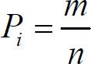 ，假设系统中总的用户数为U，则该视频推荐系统在本次A/B测试中的单击率指标为
单击率在A/B测试中是一个很重要的指标，尤其在互联网应用发展迅猛的今天，移动分析和网页测试已经成为A/B测试增长最快的一个领域，高的单击率对商家就意味着高的浏览量，更高的利润！
（2）转化率。转化率是A/B测试的另一个重要指标。在商用领域，推荐系统的最终目的是为商家带来实际的利润，即出售额。因此在电子商务平台上，可以将推荐商品的销售额或者利润额与总体销售额或者利润额的比例作为一个评价指标，从而非常直观地评价一个推荐算法给商家带来经济利益的程度。类似地，在视频推荐领域，更高的单击率和更长的观看时长都意味着更高的用户关注度和更高的商业价值，因此可以将推荐视频的单击量或者播放时长与网站总体单击量或者总播放时长的比例作为评价指标，这种评价指标叫做转化率，即推荐系统给应用平台产生的实际流量。
2．注意事项
（1）虽然现在A/B测试在互联网尤其是网页应用领域得到了广泛的应用，但是并不代表所有系统都适合使用在线评测方法。比如有一些系统变量复杂、耦合度较高，这时候并不能控制单一变量对两套系统进行比较，也就不能使用A/B测试方法；如果一些初期用户积累不是很多的应用，用A/B测试也不能得到较好的评测效果，因为A/B测试是基于大量用户的反馈来实现A/B方案评测的，如果没有大量用户作为保障，评测结果就会带有很大随机性，不能反映A/B方案评测的真实性能。
（2）相比于离线评测，在线评测的指标是更接近实际运营的、商家更关心的，因此如果A/B方案在离线评测和在线评测中的表现不同，一般人们会以在线评测的结果为依据选择推荐算法。
（3）A/B测试的指标都是真实的用户指标，比如单击率和推荐影片平均观看时长，其中有一些指标是具有不可解释性的。拿平均观看时长这个指标来说，即使通过各种离线评测的指标，证明B方案有更高的推荐准确性、更优的推荐多样性，但是在线评测的结果证明A方案具有更高的平均观看时长，虽然看上去这是没有道理的，但是指标的意义就在于客观性，一旦指标数据计算出来，就证明A方案在观看时长方面比B方案有更好的表现。
（4）在线试验不但能在真实数据环境下评价两个算法好坏，也能在真实网络流量环境下评估系统的变化，也即健壮性。
10.2.2 离线评测
在线评测是一些商业指标（如转化率）的最佳评测方式，但是在线评测从试验设计到实施都需要高额的成本，所以一般的科研工作人员更多选择离线测评方式评估算法表现。离线测评的方式是将算法在试验数据集上运行，并通过一系列运行表现来评价该算法的优劣。相对于在线评测，离线的方法方便经济，且耗时较短，因此得到了广泛的应用。
离线评价方式最主要的两个环节就是数据集的划分，以及评价指标的选择。目前最为常用的数据划分方式为随机划分。
视频推荐系统的数据集为用户、视频、用户与视频关系组成的三元组，可以表示为G（U，O，E），其中，U表示用户集合，O表示视频集合，E表示用户对视频的喜好。一般来说，用户观看过视频就可以理解为用户喜欢该视频，因此该喜好关系是一个Yes or No的二值矩阵。定义M=|U|为系统中的用户数量，N=|O|为系统中视频数量。所谓随机划分，就是在集合E中随机选取一定比例作为测试集EP ，剩下的部分就是训练集ET ，显然E= 。一般来说，测试集占总数据量的20％左右。
离线评价就是将训练集的信息作为算法的输入训练推荐模型，然后在测试集数据上运行推荐算法（基于先前训练的推荐模型），将推荐结果和测试集的已知信息进行比较，利用评价指标来衡量推荐系统的表现。值得注意的是，完全的随机划分可能会导致有些用户或者视频没有被划入测试集，或者划分后变成孤立视频。为了避免这类情况发生，在实际操作时往往针对每个用户划分一定比例的数据作为测试集。
离线测评具有方便经济的优点，也存在一些缺点。首先，离线测评依赖于所选的试验数据集，然而试验数据集不可能涵盖每一个用户的行为数据，永远无法代替真实数据，因此，用一个不包含用户A的数据集来评测该算法对用户A的作用，是没有效果的。其次，离线评价一般是用准确率等一系列数值类型的指标作为判断依据的，但是视频推荐系统最终的使用效果是通过用户是否满意为最终依据的，所以，各种数字指标永远不可能代替用户的主观感知作为终极评判指标。最后，商家使用视频推荐系统是为了提高网站单击率、单击深度、购买数量（即转化率）等，但是这些指标都不能在离线数据集中得到体现，因此也就无法直接根据离线评测得到。
离线测评有很多测评指标，我们会在10.3节中详细加以介绍。
10.2.3 用户调查
用户作为推荐系统的重要参与者，其满意度是评测推荐系统的最重要指标，所以商用视频推荐系统还需要进行用户满意度评测。但是，用户满意度没有办法离线计算，只能通过用户调查或者在线试验获得。
用户调查获得用户满意度主要是通过调查问卷的形式进行的。而一份成功的调查问卷不会只单纯问用户是否满意，而是会从用户角度考虑到用户看到视频后的各种反应。例如，一份视频推荐网站的用户调查问卷可能如下所示。
表10-2 视频推荐系统用户调查示例表
问题：请问下面哪句话最能描述你看到推荐结果后的感受？
1．推荐的视频我非常喜欢。
2．推荐的视频我看了，还可以。
3．推荐的视频和我兴趣相关，但是我并不喜欢。
4．不知道为什么推荐给我这些视频，和我的兴趣没有丝毫关系。
在线试验时，用户满意度主要通过一些用户行为统计得到。比如，在视频网站Hulu的推荐页面和豆瓣网络电台中，都有对推荐结果满意或者不满意的反馈按钮，通过统计两种按钮的单击情况就可以度量系统的用户满意度。
10.3 视频离线推荐评测指标
确定了视频评测试验方法，也就意味着评测用的数据集已经选定。对于在线评测和用户调查的方式来说，评测系统运行在实际的视频网站中，所以可以通过直接计算单击率、转换率、用户实际停留时间、观看时间等指标进行评价。在线评测的指标都是实实在在针对实际效果来的。在线评测指标高的算法，无疑能给商家带来更大的经济利益。然而在离线推荐测评时，并没有数据用来计算单击率、转化率等指标，但这并不意味着离线推荐测评没有指标可以进行评价和比较。实际上，推荐的准确率、排序的相关度等一系列指标都能在很大程度上反映一个算法的优劣，而这些可以通过离线评测来获得。
但是对于数据的统计，又会有各种各样的方法，有可能根据其中一种方法判定算法A更好，但是通过另外一种方法，算法A又不是那么优秀；因此，我们有必要对视频离线推荐评测指标进行系统的介绍。
推荐系统一般使用以下指标对推荐系统进行离线评测：准确度、覆盖率、多样性和新颖性等。本节将介绍推荐系统的各种离线评测指标。这些评测指标可用于评价视频离线推荐系统各方面的性能。根据指标制定意义的不同，分为准确度指标和多样性指标。其中准确度指标被大家关注比较多，主要包括评分准确度、排序准确度和分类准确度，这些指标反映了视频推荐系统对用户反应的预测能力。多样性指标是指推荐系统应该能够引导用户发展更多兴趣，而不应该限制用户的观看范围，在视频推荐系统中这一点尤其重要。
10.3.1 准确度指标
多数推荐算法都会以准确度作为最重要的评价方法，因为这从很大程度上显示了推荐结果可能与真实结果的拟合程度，是度量系统预测用户行为的能力。由于推荐结果有多种输出形式，这也就意味着推荐评测对应着几种不同标准。如果推荐结果是每个视频上都标着一个预测评分，那么要判断该推荐算法的好坏，需要对每个视频预测评分的准确性进行评估，也就是计算这些预测值和真实值之间的差别，这种指标叫做评分预测准确度。如果推荐结果是类似于“猜你喜欢”的视频列表，列表中排序越靠前就代表系统越推荐，那么就需要对这个排序是否恰当进行评估，即预测用户真实喜好的TopN和系统推荐的TopN之间的差距，这种指标叫做排序准确度。如果推荐结果只是将影片进行分类，将用户可能喜欢的影片予以展示，用户不喜欢的影片不予展示，那么就要判断对每个影片的分类是否正确，这种指标叫做分类准确度。不难看出，分类准确度是评分准确度的简化形式。
1．评分准确度
在用影片评分体现推荐结果的视频推荐系统中，视频推荐评分与用户真实评分之间的差别是判断该推荐系统准确性的重要指标。为了计算两者之间的差别，可以通过差值、相关性等多种方式来表现。一般来说，计算评分准确度有两种方式，即预测评分准确度和预测评分关联度。
（1）预测评分准确度。预测评分准确度是最直观评价系统预测评分和用户真实评分差距的指标。该指标又有几种计算方法，其中最经典的是平均绝对误差法（Mean Absolute Error，MAE）。
①平均绝对误差法。平均绝对误差法起源于物理测量中的误差计算。在物理测量领域，把多次测量值之间相互接近的程度称为精密度。精密度用偏差表示，偏差指测量值与平均值之间的差值，偏差越小，精密度则越高。如果用rua 代表用户u对影片a的实际评分，r′ua 代表用户u对影片a的预测评分， Ep 表示测试集数据集合，则MAE计算公式为
MAE方法原理直观，计算简单，得到了广泛的应用。但是同时，该方法对所有影片评分没有区别对待而是赋以相同的权值。从数学角度分析，上述计算公式中，如果rua 和r′ua 都是相互接近的比较小的数，那么计算得到的MAE指数就会比较小，这就导致对低分影片的预测结果不好会拉低整体的表现。即便推荐系统A的MAE值低于系统B，很可能只是由于系统A更擅长预测这部分低分影片的评分，也就是系统A比系统B能更好地区分用户非常讨厌和一般讨厌的影片罢了，显然这样的区分意义并不大。
②其他方法。在数学上，计算两组数字差异大小的方法还有很多，经常应用到推荐评测中的还有平均平方误差方法（Mean Squared Error，MSE）、标准平均绝对误差方法（Normalized Mean Absolute Error，NMAE）、均方根误差方法（Root Mean Squared Error， RMSE）等。但是相比于平均绝对误差方法，这些方法应用的情况较少，因此本书只给出这三种方法的计算公式，并不对其做深入展开。
其中，rmin 和rmax 分别为视频评分的下限值和上限值。
虽然预测评分准确度原理简单，实现方便，但是一般视频推荐算法的预测评分准确度表现都不好，原因在于其原理使得只有预测评分非常接近真实评分的算法才能得到好的表现，然而这很难做到。另外，一般视频推荐系统中并不会采用直接展示影片预测评分的方式对用户进行推荐，在这种情况下，预测评分与实际评分的绝对差值并不那么重要，只要所有影片的评分排序和真实排序一样，也可以达到同样优秀的推荐效果。基于这种思想，就有了如下评测指标——预测评分关联度。
（2）预测评分关联度。预测评分关联度的思想是，推荐系统的预测评分和真实评分未必一定要接近，只要趋势相同就好，就好像期末考试的时候，老师给大家普遍打分低，这样班里的总体成绩下滑，但是班内同学的排名仍然不会变，学习优秀的同学排名依然靠前。
数学中计算相关性的工具很多，常应用于推荐评测相关性计算的方法有三种：Pearson积距相关、Spearman相关和Kendall’s Tau相关。
①Pearson积距相关方法。Pearson积距相关方法计算推荐算法预测评分和测试集数据真实评分之间的线性相关程度，其计算公式为
式中，r′a 和ra 分别代表影片a的预测评分和真实评分，r代表系统中所有视频的平均分。
②Spearman相关方法。Spearman相关方法和Pearson积距相关方法的公式相同，只不过在Pearson积距相关方法公式中，r值代表评分，而在Spearman相关方法中，r值代表排名。事实上，这种计算方式和以后要提到的排序准确度有异曲同工之妙。
③Kendall’s Tau相关方法。Kendall’s Tau相关方法和Spearman相关方法类似，也是衡量推荐排序和真实排序的相关性，其计算公式为
式中，C代表整个排序中正序对的数目，D代表整个排序中逆序对的数目。比如一个系统中有4个视频M1 ～M4 ，测试数据集中视频评分排序为M1 ＞M2 ＞M3
＞M4 ，而预测评分排序为M1 ＞M3 ＞M2 ＞M4 ，那么预测评分中的正序对有（M1 ，M2 ）、（M1 ，M3 ）、（M1 ，M4 ）、（M2 ，M4
）、（M3 ，M4 ），逆序对有（M2 ，M3 ），那么该视频推荐算法的KT 指数为0.67。
在实际中，推荐系统评测很少采用预测评分关联度的指标，因为这种评测方式虽然比预测评分准确度有更好一些的评测结果，但是仍然和预测评分准确度一样，对所有对象赋予相同的权值，比如某个推荐系统推荐结果的顺序是A→B→C→D→E→F→G，而用户真实评分的顺序是A→B→C→D→E→G→F；同时又有另外一个推荐系统，输出推荐结果为F→B→C→D→E→G→A，此时，预测评分关联度系统会将这两个系统的表现视为一样，但事实上前一个推荐系统的表现明显优于后者，因为前者保障了用户最喜欢的影片在推荐列表的最前端。
2．排序准确度
上述评分准确度指标是针对评价系统中所有影片的预测评分的情况使用的，然而在其他情况下，视频服务系统并不会对每个影片有预测评分，或者，即使有预测评分也只是视频推荐系统的内部流程，最终的呈现是一个TopN列表的方式。此时，没必要针对预测评分进行评测，而是需要针对排序进行评测。
（1）排序准确度。排序准确度衡量有序推荐列表与用户对物品排序的统一程度，计算方法为
式中，Lu 代表视频推荐系统中给用户u的待推荐列表大小，在离线测试方法中就等于用户u在测试集中的影片数目加上未作出评分的影片数目。lua 是预测影片a在用户u的推荐列表中的排名。举例来说，如果在一个视频推荐系统中，用户u的待推荐列表共有2000个，而推荐列表中排序第二的影片恰是用户喜欢的，那么对该用户来说，该影片的排序分为2/2000=0.001，该分值越小表明推荐系统倾向将用户喜欢的物品排在前面。对所有用户及所有影片进行统计，就可以得到推荐系统的平均排序分RS。
（2）平均准确度指标（Mean Average Precision，MAP）。MAP在信息检索领域尤其是Facebook Kdd等竞赛中经常被使用，MAP是反映系统在全部相关文档上性能的单值指标，在视频推荐领域，该指标可以用来衡量一个视频推荐排序的好坏。其中准确度指标（AP）的计算方法为
式中，x表示推荐列表长度，predictioni 代表前i个推荐结果的正确率，（change in recall）i 是一个二值项，如果第i个推荐结果正确，则其取值为 ，否则其取值为0。
举例来说，在某推荐系统中，某用户A喜好的项目是1 2 3 4 5，而推荐系统给用户的推荐结果为6 4 7 1 2，如果推荐系统会推荐Top-2给用户，则推荐结果为［6 4］。
式中，由于前一个预测结果不在正确的预测结果范围内，则prediction1 为0，（change in recall）1 为0，第二个预测结果在正确的预测结果范围内，则prediction2 为0.5，（change in recall）2 为 ，那么AP＠2=0×0+0.5×0.5=0.25。
至此，我们已经算出用户A的AP了，MAP顾名思义就是要将所有用户的AP算出来再求均值，用以度量推荐算法对所有用户的推荐效果。
（3）NDCG（Normalized Discounted Cumulative Gain）。NDCG是一种基于相关度的排序质量评价指标。为了衡量推荐准确度，CG算法最基础的想法便是将所有推荐结果的相关度相加，即
相关度加和越大表示推荐准确度越高，但是这种衡量方法显然没有考虑排序因素，如果用户喜欢的项目排在推荐列表的首位和末尾，该指标的值是一样的，但是对用户的体验确实是不一样的，为此，DCG算法依据排序位置对相关度进行加权，算法中用的加权值是 ，得到的加权指标为

式中，i代表推荐结果的排序。DCG算法在继承CG算法优点的同时，加入了排序相关的度量，但是对于不同的领域，相关度的设置不同，推荐列表的长度不同，也就导致DCG指标不能跨场景进行比较，因此之后又有人提出来NDCG算法，该算法在DCG算法的基础上，对该指标进行了归一化，使得其取值在［0，1］之间，从而使得该指标可以用于不同应用场景中。归一化的过程如下。
假设推荐列表长度固定的情况下，完美排序的DCG值为IDCG，则
举例来说，如果一个推荐结果是［D1 D2 D3 D4 D5 D6］，其对应的相关度为［3 2 3 0 1 2］，那么
最完美的排序相关度为［3 3 2 2 1 0］，则
3．分类准确度
分类准确度是评分准确度的特殊形式，分类准确度的本质是判断用户是否喜欢一个影片，而是否喜欢是一个典型的二分判断，所以在这个前提下，需要有一个明确的判定原则，例如，有一个打分系统，评分从1～10分，可以通过专家意见设定一个阈值作为用户是否喜欢一个影片的考量，如设定7分及以上为喜欢，7分以下则是不喜欢。可见，分类准确度不能非常精准地判定一个算法的评分预测能力，只要没有影响影片分类的偏差都不会影响最后的分类结果。比如某个影片的真实评分应该是8，那么如果以预测评分来判定，只有预测为8才为完全预测正确，但是分类准确度只要知道评分应该是大于7的，就可以判定该用户喜欢这个影片，这就达到了分类的目的。分类准确度指标又可以细分为分类准确率指标（Precision，P）、分类召回率指标（Recall，R）和F指标、AUC指标。
准确率、召回率和F值是广泛应用于信息检索和统计学分类领域的三个度量值，用来评价分类结果的质量。其中准确率是检索结果中相关文档数与文档总数的比率，衡量的是检索系统的查准率；召回率是指检索出的相关文档数和文档库中所有的相关文档数的比率，衡量的是检索系统的查全率；F值是准确率和召回率的调和平均值。通俗来说，精确率就是评估捕获的成果中目标成果所占的比例，而召回率是从关注领域中召回目标类别的比例；F值就是综合这两个指标的评估指标，用于综合反映整体指标。准确率、召回率取值在0和1之间，数值越接近1，准确率和召回率就越高。F指标综合了P和R的结果，当F值较高时则说明试验方法比较有效。
（1）分类准确率指标（Precision）。准确率指标从一方面显示了用户对推荐视频的感兴趣程度。常用的计算方法是设定推荐视频列表的长度是M，将视频根据推荐评分排序，进一步将排在前M位的视频推荐给用户，那么就可能有4种情况发生，如表10-3所示。
表10-3 视频推荐分类的4种结果
| 用户喜好 | 系统推荐 | 系统不推荐 |
|---|---|---|
| 喜欢 | Ntp | Ntn |
| 不喜欢 | Nfp | Nfn |
如果在某视频推荐系统中，用户喜好和系统推荐的相关关系用表10-3来表示，那么Ntp 代表用户喜欢且系统推荐了的视频数量；Ntn 代表用户喜欢但系统未推荐的视频数量；Nfp 代表用户不喜欢但系统推荐了的视频数量；Nfn 代表用户不喜欢系统也未推荐的视频数量。那么该推荐系统的准确率为
将系统中所有用户的准确率求平均就可以得到系统整体的推荐准确率，即

式中，M代表测试用户的总数，u代表每个测试用户。在离线测试方法中，准确率会受评分稀疏性的影响。如果系统中的一个用户只给很少的视频打过分，那么该推荐系统就不能给该用户准确推荐其喜欢的视频，因为此时系统不能从该用户仅有的一点历史数据中准确判断该用户的喜好。
（2）分类召回率指标（Recall）。召回率表示一个用户喜欢的视频被推荐的概率，如表10-3所示的推荐结果中，推荐系统的召回率是
系统中所有用户的召回率求平均就可以得到系统总的召回率，即
式中，M代表测试用户的总数，u代表每个测试用户。
严格意义上来说，召回率并不适合应用于评测推荐系统，因为它包含了用户没有评分的视频都是其不喜欢的视频的前提假设，显然这个假设是不合理的。
（3）F指标。仅仅依靠准确率或者召回率并不能准确判断一个推荐算法的好坏，在一些小概率事件的判断中，比如对这粒沙子中是否包裹有金子做出判断，如果判断算法始终输出为false，那么可以想象该判断算法的准确率相当高（因为沙子中含有金子的概率本来就极低）。但是通过常识可以判断，这种分类算法是没有任何意义的；而在一个视频推荐系统中，需要找出用户喜欢的视频，而某个推荐算法将测试集中的所有视频均判断为用户喜爱视频，此时该算法的召回率为100％，但是这并不能说明这个算法性能优越，因为该算法的准确率在理论上完全等于随机推荐算法的准确率，也就是说和不推荐的效果是一样的。一般来说，准确率和召回率是负相关的并且依赖于推荐列表的长度。随着推荐列表长度的增加，准确率会减小而召回率会增加，由于P指标和R指标有时候会出现相互矛盾的情况，就需要综合考虑它们，最常见的方法就是F指标。F指标是准确率和召回率的加权调和平均。
当参数1α=时，也即P和R的权重相等时，就是最常见的F1 指标，即
由F指标的计算公式可知，可知F指标综合了P和R的结果，当F值较高时则能说明试验方法比较有效。
（4）AUC指标。准确率和召回率只是针对有二分喜好的系统进行评测的依据，对于没有明确喜好，只有一系列评分的系统，是否可以借鉴准确率和召回率的概念呢？AUC就是基于这样的思想的，AUC指标表示ROC曲线（Receiver Operator Curve）下的面积，用于衡量该系统能在多大程度上把用户喜欢的视频和不喜欢的视频进行区别。
ROC曲线的绘制包括如下步骤。
①根据待评测推荐算法生成一个视频推荐列表，也就是按照预测评分高低将待推荐视频列表排序。
②绘制ROC曲线的坐标轴，其中横坐标为不相关比例，纵坐标为相关比例，横纵坐标都按照视频总数进行等分。
③从坐标原点开始，如果该视频是用户实际喜欢的视频，则继续在纵坐标方向画一条一单位长度直线；如果该视频不是用户实际喜欢的视频，则继续在横坐标方向画一条一单位长度直线；如果测试数据集中没有该用户关于该视频的评价数据，则不予移动。
如果一个视频推荐算法表现较好，也就是会将用户喜欢的视频排在不喜欢视频的前面，这时候ROC曲线就会是一条先垂直向上再水平向右的线，ROC曲线覆盖到的面积为1；如果采用随机推荐算法，此时ROC曲线就会是一条接近45°的斜线，ROC曲线覆盖到的面积为0.5。ROC指标很好地表征了推荐算法的整体表现，但是该指标没有考虑推荐位置排序的影响，所以如果两个算法有相同的ROC指标时，尽管客观上这两个推荐算法有优劣之分，但是ROC指标却无法做出判断了。
10.3.2 多样性指标
一个好的推荐系统，在保障推荐准确度的前提下，也应该尽可能提高用户其他方面的体验。下面我们就介绍一些准确度指标以外，视频推荐系统离线测评常用到的指标。
1．覆盖率
覆盖率指推荐出来的结果能不能很好地覆盖所有的影片，是不是所有的影片都有被推荐的机会。如果一个推荐算法的覆盖率低，那么用户的选择就会比较少，势必会影响用户满意度。尤其在电子商务领域和视频推荐领域，向用户推荐广泛的兴趣是多么重要！因为用户可能因为这个推荐而发掘一个新的消费点或者一个新的兴趣点。
覆盖率可以分为预测覆盖率、推荐覆盖率和类别覆盖率三种，其中预测覆盖率表示可以预测评分的视频占视频总数的比例，即
式中，Nd 为可以预测评分的视频数目，N为视频总数目，从上式可以看出预测覆盖率表示了推荐系统可能进行推荐的覆盖能力，与用户无关。推荐覆盖率表示用户推荐视频列表长度和视频总数目的比值，即
其中，用户推荐视频列表长度是每次为用户推荐的视频的并集的大小，推荐覆盖率越高，意味着该系统实际推荐给用户的视频数量越多，推荐系统的推荐覆盖率是系统中所有用户推荐覆盖率的平均值。种类覆盖率表示推荐系统为用户推荐的视频种类占全部种类的比例，与前两种比较，该指标应用的较少，因此不再介绍。
一个好的推荐系统应该在保障准确性的同时尽可能提高覆盖率，从而给用户更多选择。
2．多样性和新颖性
用户的喜好是多元的，比如一个视频应用的用户，他可能喜欢看MIT的公开课，但同时这人又是个动漫迷，一直在追海贼王。此时，视频推荐系统给这个用户的推荐列表中就需要同时有科技和动漫这两个种类。现实中，一个人有很多兴趣是很常见的，因此，视频推荐系统能否给一个用户推荐多元的影片满足用户多元的兴趣爱好，也是衡量一个视频推荐系统是否成功的关键因素。推荐系统中，多样性体现在以下两个层次：用户间的多样性用于衡量推荐系统对不同用户推荐不同商品的能力；用户内的多样性用于衡量推荐系统对一个用户推荐商品的多样性。
对于用户u和t，可以用汉明距离衡量两个用户推荐列表的不同程度，具体定义为
式中，Qut 是用户u和用户t推荐列表中相同商品的个数，如果两个推荐列表完全一致，那么Hut =0；如果完全不同，则Hut =1，将系统中所有用户两两组合得到的所有汉明距离求平均就得到整个系统的平均汉明距离H。汉明距离越大，就表示用户间推荐多样性越高。用户内的多样性为
式中，系统为用户推荐的商品集合为 表示商品α和β的相似度，L为推荐列表长度，系统的用户内多样性就是所有用户内多样性的平均值I。至于两个影片之间的相似度，可以由具体环境下的定义得到。显然I越小，表明系统为用户推荐商品的多样性越高，系统的用户内推荐多样性也就越大。
除了多样性，新颖性也是影响用户体验的重要指标之一。新颖性是指系统向用户推荐非热门非流行影片的能力。前面已经提到，推荐流行影片纵然可以在一定程度上提高推荐准确性，但是对所有用户都推荐热门影片，则失去了个性化推荐的意义所在。度量推荐新颖性最简单的方法是计算推荐商品的平均流行度。推荐列表中影片的平均流行度越小，对用户来说，其新颖性就越高，由此可以得到新颖性指标为
式中，α是针对用户的推荐影片，kα 是推荐影片的流行度。流行度越低表示推荐的结果越新颖。
另外，自信息也可以用来衡量推荐新颖性的指标。对于影片α，一个随机选取的用户选择到它的概率是
则此影片的自信息量可以表示为
而系统的自信息量U就是所有用户推荐列表中商品自信息量的均值。
10.4 小结
本章主要介绍视频推荐系统测评相关理论，主要包括试验方法和测评指标两部分。推荐系统测评方法分为用户调查、在线评测和离线评测三种，其中离线评测更多地应用在科研领域，用户调查和在线评测则更多地应用于商用视频推荐系统中。不同的试验方法可以采用不同的测评指标，本章主要对科研中常用的离线评测相关指标做详细阐述，主要介绍了其中常用的准确度指标和多样性指标。每种试验方法和测评指标都有其应用的范围和局限，在不同的应用场合，需要选择合适的试验方案和测评指标才能达到最理想的测评效果。
10.5 本章参考文献
[1]Jin Y，Hu M，Singh H，et al．Myspace video recommendation with map-reduce on qizmt［C］//Semantic Computing （ICSC），2010 IEEE Fourth International Conference on．IEEE，2010：126-133．
[2]Davidson J，Liebald B，Liu J，et al．The YouTube video recommendation system［C］//Proceedings of the fourth ACM conference on Recommender systems．ACM，2010：293-296．
[3]Pu P，Chen L，Hu R．Evaluating recommender systems from the user’s perspective：survey of the state of the art［J］．User Modeling and User-Adapted Interaction，2012，22（4-5）：317-355．
[4]Perugini S，Gonçalves M A，Fox E A．Recommender systems research：A connection-centric survey［J］．Journal of Intelligent Information Systems，2004，23（2）：107-143．
[5]Amini B，Ibrahim R，Othman M S．Data sets for offline evaluation of scholar’s recommender system［M］//Intelligent Information and Database Systems．Springer Berlin Heidelberg，2013：158-167．
[6]Beel J，Genzmehr M，Langer S，et al．A comparative analysis of offline and online evaluations and discussion of research paper recommender system evaluation［C］//Proceedings of the International Workshop on Reproducibility and Replication in Recommender Systems Evaluation．ACM，2013：7-14．
下篇
第11章 系统层面的快速推荐构建
11.1 概述
随着互联网技术的迅速发展和用户规模的快速扩大，大量的信息呈现在我们的面前。传统的搜索算法无法满足海量信息的处理需求。信息的爆炸反而使得信息的利用率降低，造成严重的信息超载（Informations Overload）现象。对于用户而言，如何从海量的信息中迅速有效的找到自己感兴趣的信息变得异常困难；而对于信息生产者而言，如何让自己的信息有效传递到目标用户人群也变得困难重重。面对这两方面的问题，推荐系统应运而生。推荐系统是一种重要的信息过滤机制，它可以有效地关联用户和信息，帮助用户发掘自己感兴趣的信息，协助信息生产者传播信息，从而实现信息消费和信息生产的有效对应。
但是，面对大数据时代的来临，什么样的推荐系统架构才能够合理满足海量信息数据处理需求，既能够对海量信息数据进行复杂运算，又能够在大数据量背景下提供快速及时的响应，这是一个亟待解决的难题。面向这一需求，基于Hadoop和Mahout的快速推荐系统架构应运而生。
Hadoop是一个由Apache基金会（Apache Software Foundation，ASF）所开发，依据Google分布式基础设施系统架构的开源实现，其主要功能是提供分布式计算MapReduce和分布式文件存储（Hadoop Distributed File System，HDFS）。Hadoop是一个针对大规模数据处理和分析的分布式系统基础框架，通过采用数据分布式存储、代码迁移机制，在大数据处理时可避免耗时的数据传输瓶颈；同时，利用数据冗余机制，可以快速从失效节点中恢复。因此，Hadoop具有高可靠性、扩展性和方便易用等诸多优点，从而解决数据规模给推荐系统带来的大数据分析瓶颈，满足高性能和高扩展性计算需求。
Apache Mahout也是ASF下属的一个开源项目，可以提供一些可扩展的机器学习领域经典算法的实现，包括聚类、分类、协同过滤等，使得开发人员能够更为快捷地创建智能应用程序。
目前，Mahout提供4种使用场景的算法：推荐引擎算法、聚类算法、分类算法和相关物品分析算法。Mahout算法所处理的场景，经常伴随着海量的信息数据的情况。通过将Mahout算法构建于MapReduce框架之上，将算法的输入、输出和中间结果构建于HDFS分布式文件系统之上，使得Mahout具有高吞吐、高并发、高可靠性的特点。最终，在海量数据面前，业务系统可以高效快速地得到分析结果。在新版本的Mahout系统中，加强了对Apache Hadoop的支持，并利用MapReduce实现了部分数据挖掘算法，解决了并行挖掘的问题，从而使得这些算法在云计算环境中得到更高效的运行。
因此，利用Hadoop和Mahout可以有效地搭建快速推荐系统。
11.2 本章主要内容
本部分内容主要是讲述快速推荐系统的部署，包括Hadoop2.2.0、Spark1.0.1、Mahout1.0和Oryx1.0.1四个项目的部署。每个章节将会详细讲述四个项目的部署，同时提供测试文件以便测试系统部署是否成功。
聚焦Mahout的推荐引擎部分，讲述Mahout的几种推荐引擎：基于物品的推荐（Item-based Recommender）、基于矩阵分解的推荐（ALS Recommender）、共生推荐（Co-ocurrence Recommender）。其中基于物品的推荐有两种实现方法：一种是MapReduce版，另一种是Spark版；基于矩阵分解的推荐是MapReduce版，共生推荐是Spark版。
Mahout实战部分内容将会讲述一个实际项目如何使用Mahout进行视频推荐，该项目主要目的是通过用户的浏览、评分等行为向用户推荐视频。在实践中，我们得到的原始资料是浏览器的用户访问行为日志，需要从中提取出有效的数据用于数据分析。
11.3 系统部署
11.3.1 Hadoop2.2.0系统部署
1．软件版本与下载
本案例采用Hadoop2.2.0，包含HDFS分布式存储系统，支持YARN集群资源管理框架。
如果您的计算机是32位的Linux，那么请直接使用官方下载的压缩包hadoop-2.2.0.tar.gz（链接为http://archive.apache.org/dist/hadoop/core/hadoop-2.2.0/hadoop-2.2.0.tar.gz）。
如果您的计算机是64位的Linux，那么您需要重新编译Hadoop。
2．系统Java环境配置
运行Hadoop，操作系统中必须具备Java开发环境。Java开发环境工具包可以到Oracle官方网站下载http://www.oracle.com/technetwork/java/javase/downloads/index.html。
（1）下载JDK，版本为jdk-7u55-linux-i586.tar.gz。
（2）将该压缩文件解压到/usr/java文件夹内。
（3）配置Java环境变量。打开/etc/profile（vi/etc/profile），在文件的最后加入下面内容，从而保证在用户登录时能够加载这些配置。
代码详情
1 | export JAVA_HOME=/usr/java/jdk |
（4）加载修改后的环境变量，在命令行中执行
$source/etc/profile
（5）测试是否部署成功。
$java-version
$javac-version
查看命令行输出是否成功，即显示Java、Javac的版本信息等。
3．maven配置
（1）下载maven源码，本书采用的版本是apache-maven-3.2.1-bin.tar.gz，官方下载地址为http://maven.apache.org/download.html。
（2）将下载到的压缩包解压到/usr/local/maven目录下。
（3）配置maven环境变量。打开/etc/profile（vi/etc/profile），在文件的最后加入下面内容，从而保证在用户登录时能够加载这些配置。
代码详情
1 | # set MAVEN enviroment |
4．Proto Buffers配置
Hadoop使用protocol buffer协议进行通信，需要下载和安装protobuf-2.5.0.tar.gz。
（1）下载protobuf-2.5.0.tar.gz，官方下载地址为https://code.google.com/p/protobuf/。
（2）安装。使用tar命令对压缩包进行解压。
$tar-zxf protobuf-2.5.0.tar.gz
进入解压目录，并执行编译安装。
代码详情
1 | $cd protobuf-2.5.0 |
（3）配置proto buffer环境变量。打开/etc/profile（vi/etc/profile），在文件的最后加入下面内容，从而保证在用户登录时能够加载这些配置。
# set Protobuf enviroment
export PATH=/usr/local/protobuf/bin:$PATH
5．Hadoop加载设置
将hadoop-2.2.0.tar.gz解压到用户根目录，并设定其环境变量。
打开/etc/profile（vi/etc/profile），在文件的最后加入下面内容，从而保证在用户登录时能够加载这些配置。粗体字部分代表需要安装环境来具体设置。
代码详情
1 | # set hadoop environment |
6．Mahout设置加载
将mahout-distribution-1.0.tar.gz解压到用户根目录，并设定其环境变量。
打开/etc/profile（vi/etc/profile），在文件的最后加入下面内容，从而保证在用户登录时能够加载这些配置。
代码详情
1 | # set Mahout environment |
11.3.2 Hadoop运行时环境设置
1．Hadoop配置文件说明
Hadoop依靠多个配置文件来配置运行时环境。具体来说，各种配置文件如下。
（ 1 ）只读的默认配置core-default.xml、hdfs-default.xml、yarn-default.xml和mapred-default.xml。
（2）site-specific配置conf/core-site.xml、conf/hdfs-site.xml、conf/yarn-site.xml和conf/mapred-site.xml。
core-site.xml：用于定义系统级别的参数，如HDFS路径、Hadoop的临时目录，以及用于rack-aware集群中的配置文件的配置等。core-site.xml中的参数定义会覆盖core-default.xml文件中的默认配置。
hdfs-site.xml：HDFS配置相关的设定参数，如文件副本个数、分块大小及访问权限等。hdfs-site.xml中的参数定义会覆盖hdfs-default.xml文件中的默认配置。
mapred-site.xml：MapReduce的相关设定，如reduce任务的默认个数、任务所能够使用内存的上下限等。mapred-site.xml中的参数定义会覆盖mapred-default.xml文件中的默认配置。
（3）Hadoop的守护进程包含5个，分别为SecondaryNameNode、TaskTracker、NameNode、DataNode和JobTracker。
2．配置文件目录说明
配置文件的目录由变量$HADOOP_CONF_DIR指示，请确保其已经被成功设置。通过在命令行中执行$echo$HADOOP_CONF_DIR可以判断出其是否设置。
Hadoop守护进程的配置脚本为hadoop-env.sh和yarn-env.sh，必须设置JAVA_HOME环境变量，其他可以不用设置。
（1）设定core-site.xml，属性fs.defaultFS和hadoop.tmp.dir务必要设定，如下所示。
代码详情
1 | <configuration> |
（2）设定HDFS的配置文件hdfs-site.xml。
代码详情
1 | <property> |
（3）设定yarn-site.xml。
代码详情
1 | <property> |
（4）设定mapred-site.xml。
代码详情
1 | <property> |
3．Hadoop使用测试
（1）初始化文件系统。
$hadoop namenode–format
（2）开启。
$sh start-dfs.sh
$sh start-yarn.sh
执行上述两个命令，分别启动dfs和yarn，测试是否成功开启。
方法一：访问Http://127.0.0.1:8088/cluster和http://127.0.0.1/50070可以看到相应的信息。
方法二：运行
$jps
可以看到下面的一些内容，特别注意DataNode和NameNode是否出现，如果有，表示正常；反之，表示异常，请检查您的配置文件。
代码详情
1 | 2929 ResourceManager |
（3）关闭。
$sh stop-dfs.sh
$sh stop-yarn.sh
执行上述两个命令，分别关闭yarn和dfs
4．运行基本的Hadoop示例
（1）使用dfs-ls命令浏览根目录。
$hdfs dfs-ls/
（2）创建目录/user/test/wordcount/in。
$hdfs dfs-mkdir-p/user/test/wordcount/in
（3）本地生成两个文件。
$echo 'i am bad boy'>file01
$echo 'hello bad boy '>file02
（4）将两个文件上传到HDFS上。
hdfs dfs-put file0*/user/yankai/wordcount/in
（5）对两个文件进行map-reduce计算，将计算结果保存在/user/test/wordcount/out目录下。
代码详情
1 | $hadoop jar{HADOOP_HOME}/share/hadoop/mapreduce/ |
（6）计算结果存在out目录下，通过下面命令可以查看。
$hdfs-dfs-cat/user/yankai/wordcount/out/*
结果为
am 1
bad 2
boy 2
hello 1
i 1
5．Hadoop示例的Shell程序
下面为一个Hadoop部署成功测试用例。
代码详情
1 | #!/bin/bash |
11.3.3 Spark与Mahout部署
1．版本说明
Spark目前的版本是1.1.0，Mahout版本是1.0。但为了更好地进行Spark和Mahout的融合，根据兼容性要求，二者版本要对应，因此，本书采用Spark1.0.1和Mahout1.0两个版本的软件。
2．Mahout部署
（1）下载。采用git程序在线下载。
$git clone https://github.com/apache/mahout mahout
（2）编译。需要指定Hadoop版本，由于之前我们采用的是Hadoop2.2.0，因此在这里需要采用“-D”参数来指定Hadoop的版本，即“-Dhadoop2.version=2.2.0”。
$mvn-DskipTests clean instal-Dhadoop2.version=2.2.0
（3）设置加载环境变量。打开/etc/profile（vi/etc/profile），在文件的最后加入下面内容，从而保证在用户登录时能够加载这些配置。
代码详情
1 | # set Mahout environment |
（4）部署成功的测试用例。下面是一个部署成功的测试用例。
代码详情
1 | !/bin/bash |
demo.csv文件所示如下。
代码详情
1 | 1,101,5 |
3．Spark部署
（1）下载。Spark的官方下载页面为http://spark.apache.org/，本书采用Spark1.0.1版本。
（2）编译。Spark在编译时，需要设定对应Hadoop版本，可以采用下面的方法进行编译。
①用于生成Intellij-idea的项目文件。
$sbt/sbt gen-idea
②将Spark打包成jar包。
SPARK_HADOOP_VERSION=1.0.1 SPARK_YARN=true ./sbt/sbt assembly
（3）Spark测试。
①使用Spark交互模式，测试spark是否安装成功。
（a）运行
./spark-shell.sh
（b）
2．scala>val data=Array（1，2，3，4，5）//产生data
data:Array[Int]=Array（1，2，3，4，5）
（c）
scala>val distData=sc.parallelize（data）//将data处理成RDD
//显示出的类型为RDD
distData:spark.RDD[Int]=spark.ParallelCollection@7a0ec850
（d）
scala>distData.reduce（_+_）//在RDD上进行运算，对data里面元素进行加和
12/05/10 09:36:20 INFO spark.SparkContext:Starting job...
（e）最后运行得到
12/05/10 09:36:20 INFO spark.SparkContext:Job finished in 0.076729174 s
res2:Int=15
②使用自带的例子进行测试。
${SPARK_HOME}/bin/run-example SparkPi
（3）测试基于Spark的Mahout配置是否成功。
代码详情
1 | #!/bin/bash |
（4）测试Spark-Mahout中基于物品的协同过滤。
代码详情
1 | #!/bin/bash |
其中mahout-spark-item.csv文件如下所示。
代码详情
1 | u1,purchase,iphone |
11.4 Mahout推荐引擎介绍
Mahout对于推荐引擎的实现有两种，一种基于MapReduce，一种基于Spark。本章后续部分将会进行详细介绍。
Mahout实现的推荐引擎主要有以下几种。
（1）Item-based Recommendations，基于物品的推荐器。
（2）Cooccurrence Recommenders，协同过滤。
（3）ALS推荐引擎器，ALS Recommendations。
针对每种推荐引擎，将会介绍基本思想、配置、使用三方面。
11.4.1 Item-based算法
1．基本思想
Mahout中基于物品的推荐器是一个可扩展和易实现的算法。极简的输入文件的结构和可选的过滤控制，使得item-based推荐器可以获取并高效和直接地输出所需数据。
典型应用包括：
- 通过电子平台向用户推荐产品（如Amazon、Netflix、Overstock）；
- 获取有效的销售机会；
- 基于相似物品偏好来划分顾客。
更广阔地来说，Item-based的Mahout推荐算法将用户对物品的偏好作为输入，输出是推荐的有分数的相似物品，分数表示用户对所推荐物品的喜好程度。
Item-based推荐器的另一个强项是对你的商业条件或研究的适应性，并且有很多方法可以使Mahout的推荐结果更为准确，比如：
- 剔除小体积或低利润的商品；
- 通过分级（Segment）或者市场将用户分类，而不是使用用户/顾客的等级数据；
- 排除零元交易；
- 将商品的替代品映射为Mahout的输入。
Item-based推荐器的结果可以很容易的被下游应用（如网站、ERP系统或自动交易工具Salesforce Automation Tools）使用，并且Item-based推荐器是可配置的，用户可以决定由算法生成的推荐结果的数量。
2．配置及使用
Item-based推荐器的测试很容易获得，可以依据以下四个步骤来开展。
Step1：获取测试数据。
Mahout中Item-based推荐器依赖于三个数据：userID、itemID和preference。user可以是网站访问者或者从网站购买商品的顾客。相似地，item可以是商品、商品组合，甚至是所访问的网页，总之item是任何可以推荐给用户的东西。
在本书例子中，使用用户订单作为偏好。许多顾客和商品的订单作为输入数据。可以使用很多公式来控制Item-based控制器。偏好值可以由很多方面来代表，比如页面单击量、明确的评分和订单数量等。测试数据都放在csv文件中，数据通过逗号进行分隔。
可以使用如下的测试数据，命名为demo.csv。
代码详情
1 | 1,101,5 |
Step2：选择相似度计算准则。
在生产环境中选择一个相似度计算准则是需要仔细测试、评估和观察的。在本例中，我们使用Mahout的相似度类SIMILARITY_LOGLIKELIHOOD。
Step3：配置Mahout命令。
（1）先决条件。
①因为mahout中item-based recommender是基于Hadoop运行的，因此必须确保Hadoop环境正确配置。
②JAVA_HOME已经正确设定。
（2）步骤如下。
①创建目录。
$hdfs dfs-mkdir-p/user/mtest/demo/input
②上传数据。
$hdfs dfs-put demo.csv/user/mtest/demo/input
③确认数据上传成功。
$hdfs dfs-ls-l/user/mtest/demo/input
④执行命令。
$mahout recommenditembased-s SIMILARITY_LOGLIKELIHOOD–i
/user/mtest/demo/input-o/user/mtest/demo/output--numRecommendations 25
运行这个命令。输出文件将包含两列：userID和一个itemIDs分数的数组。输出结果如下。
代码详情
1 | 1 [104:2.8088317,106:2.5915816,105:2.5748677] |
Step4：基于Mahout利用输出，来做更多事情。
在本例子中生成的输出文件可以被我们获得，并被下游应用所使用。Mahout的Item-based算法有很多选项可以来满足商业需求，探索并测试不同的配置使其满足具体项目需求。
3．Shell程序
为了大家能够更加直观地明白Mahout的执行流程，笔者将其写成Shell程序。读者可以将右侧的文件保存为demo.csv，左侧文件保存为mahout_item.sh，然后执行sh mahout_item.sh，执行后即可获取相应的结果。
代码详情
1 | !/bin/bash 1,101,5 |
11.4.2 矩阵分解
1．概述
协同过滤中常用的算法为矩阵分解（Matrix Factorization）。在线性代数中，矩阵分解是一种维度约减技术，可以将矩阵分解为矩阵的乘积。有许多不同的矩阵分解方法，都有其优缺点。
在Mahout中，SVD Recommender提供了一个基于矩阵分解来构建推荐器。这种思路的来源是将用户和物品的关系映射到特征空间（Feature Space），并尝试优化矩阵U 和M ，从而使U ×M T 尽可能接近R 。
2．算法解释
U 是n×p的用户特征矩阵（User Feature Matrix），M 是m×p的物品特征矩阵（Item Feature Matrix），M T 是矩阵M 的共轭转置矩阵，R 是n×m分数矩阵，n是用户的个数， m是物品的个数，p是特征的个数。
我们通常使用均方根误差（Root Mean Square Error，RMSE）来表示预测值和真实分数之间的偏离。RMSE被定义为已知用户物品分值均方误差取和的均方根误差。因此，矩阵分解可以表示为如下形式。
查找U 和M
式中，K代表已知用户物品分值。
3．Mahout中的矩阵分解
随机梯度下降（Stochastic Gradient Descent，SGD）是最小化目标函数的梯度下降优化算法，可以表示为
Q（w）=sum（Q_i（w）），
式中，w是待预测值，Q（w）是目标函数， Q_i（w）是第i次的观测数据集。
在实际使用中，w采用递归算法进行预测。
w=w−alpha×（d（Q_i（w））/dw）
式中，alpha为速率，（d（Q_i（w））/dw）是Q_i（w）在w取值后的第一个推演值。
在矩阵分解中，待评定的SGD因子分解类通过w=（U，M）和目标函数Q（w）=sum（Q（u,i））实现了SDG分解。
算法可以表示如下。
代码详情
1 | //init U and M with randomized value between 0.0 and 1.0 with standard Gaussian |
11.4.3 ALS算法
1．概述
Mahout的ALS推荐器是一个使用Alternating Least Squares with Weighted-Lamda-Regularization（ALS-WR）的矩阵分解算法，它将User-item矩阵A 因子化变为用户-特征（User-Feature）矩阵U 和物品-特征（Item-Feature）矩阵M 。ALS推荐器以并行方式运行ALS算法，算法细节可以参考下面的论文。
（1）Large-scale Parallel Collaborative Filtering for the Netflix Prize（链接：http://www.hpl.hp.com/personal/Robert_Schreiber/papers/2008％20AAIM％20Netflix/netflix_aaim 08％28submitted％29.pdf）。
（2）Collaborative Filtering for Implicit Feedback Datasets（链接：http://research．yahoo.com/pub/2433）。
与基于用户和基于物品的推荐器计算用户或物品的相似性来做出不同的推荐。ALS算法发现隐含因子（解释了观察到的用户对物品的评分）并尝试找到最优的因子权重来最小化预测值和真实值之间的最小平方。
Mahout的ALS推荐算法把用户对物品的偏好作为输入，为用户产生一组推荐物品作为输出，输入的是用户偏好值、明显的用户评分或者隐藏的用户反馈（如用户单击网页）。与基于用户或基于物品的推荐系统相比，基于ALS推荐的优点之一是能够处理大量稀疏数据集和更好地预测结果，还可以给出一个直观、合理的影响推荐的因子。现在Mahout有一个ALS的Map-Reduce实现，其包含两部分工作：一个并行的矩阵分解工作，另一个推荐系统工作。
2．配置详细参数
第一步：矩阵分解工作。矩阵分解工作是基于User-item评分计算User-Feature矩阵和Item-Feature矩阵。输入包括
- input：一个目录，目录里面的文件包含明显的用户对物品的评分或隐藏的反馈。
- output：用户-特征矩阵和特征-物品矩阵的输出路径。
- lambda：避免过载的归一化参数。
- alpha：仅用于隐藏反馈的自信参数（Confidence Parameter）。
- implicitFeedback：boolean参数，指示输入数据集是否包含隐藏反馈。
- numFeatures：特征空间的维数。
- numThreadsPerSolver：共现计算中每个mapper的线程的个数。
- numIterations：迭代的个数。
- usesLongIDs：boolean标志，指示输入中是否包含long IDs来进行转换。
第二步：以序列文件格式（Sequence File Format）输出矩阵。因子化任务计算得到用户-特征矩阵、物品-特征矩阵，推荐任务利用两个矩阵计算为每个用户得到Top-N推荐结果。
- input：包含用户ID文件的目录。
- output：为每个输入的用户ID生成推荐物品的输出路径。
- userFeatures：用户-特征矩阵的路径。
- itemFeatures：物品-特征矩阵的路径。
- numRecommendations：每个用户的推荐结果的最大个数，默认为10个。
- maxRating：可选的最大比率。
- numThreads：每个mapper的线程的个数。
- usesLongIDs：boolean标志，指示输入中是否包含long IDs来进行转换。
- userIDIndex：index for user long IDs （necessary if usesLongIDs is true）。
- itemIDIndex：index for item long IDs （necessary if usesLongIDs is true）。
为每个用户输出一系列推荐物品的ID，用户和物品的预测比率是用户特征向量和物品特征向量的点乘。
3．简单示例
下面列举一个如何使用Mahout ALS推荐器的简单示例。首先，需要建立Mahout并使其正确运行。
Step1：准备测试数据。
与基于Item的推荐器类似，ALS推荐器依赖于User-Item偏好数据：userID、itemID、和preference，偏好值可以是明显的数值评分或者单击的次数（隐藏反馈）。测试数据文件是单行的tab键分隔的字符串，第一列是userID，第二列是itemID，第三列是preference，三列都必须是数值。
Step2：决定参数。
另外，用户指定feature空间的维数，运行ALS算法迭代的次数。第一次的话采用10个feature和15次迭代是合理的。如果用户偏好是隐藏的用户反馈，则有一个可选的confidence参数。
Step3：运行ALS。
假设JAVA_HOME已经设定，Mahout也已经正确安装，在命令行中键入下面的命令。
代码详情
1 | $mahout parallelALS--input$als_input--output$als_output |
运行命令将会执行一系列任务。输出目录包括三个子目录：矩阵M 存储Item-Feature矩阵，矩阵U 存储User-Feature矩阵，userRating存储用户对Items的评分。tempDir参数指定目录来存储工作的中间结果，如每次迭代的矩阵输出和每个Item的平均评分。使用tempDir将有助于调试。
Step4：做出推荐。
基于Step3的输出Feature矩阵，我们可以为用户作出推荐，键入下面的命令。
代码详情
1 | $mahout recommendfactorized--input$als_input |
输入用户文件是一个序列文件，序列记录的关键字是userID，取值是用户与用户相关的物品ID，可以从推荐结果中获取。由我们示例产生的输出文件是一个为每个用户生成推荐物品的文件。Mahout的ALS推荐器有不同的参数来适应自己的商业需求。
4．Shell程序
为了能够更加直观地使用，笔者将其写成Shell程序供大家进行测试。
代码详情
1 | #!/bin/bash |
11.4.4 Mahout的Spark实现
1．概述
Mahout使用Spark提供了多种重要的创建推荐结果的方式。spark-itemsimilarity可以用来创建“其他人也喜欢这些东西”类型的推荐结果；并且搜索引擎可以为特定人群提供个性化推荐结果。spark-rowsimilarity可以提供非个性化的基于内容（Content-based）的推荐结果，并且可以与搜索引擎一起提供个性化的基于内容的推荐结果。
Mahout的itemsimilarity有两种实现方式，一种是基于MapReduce
（称为recommenditembased），一种基于Spark（称为spark-itemsimilarity）。该算法利用元素间的关系，有userID、itemID及可选的取值。通过对比每个用户与其他用户，计算得到一个多重的指示器矩阵。这个指示器矩阵是一个item×item的矩阵，矩阵取值是对数似然比率强度（Log-Likelihood Ratio strengths，LLR）。旧的MapReduce版recommenditembased算法有很多不同的相似度计算准则，但是这些相似度计算准则都可以去掉，因为LLR可以提供最好的结果。
Mahout的MapReduce版本的itemsimilarity所需的文本文件内容必须符合Mahout的要求：文本中的userID和itemID都必须是正整数，可以看做矩阵中的行号和列号。
spark-itemsimilarity将共现（ Cooccurrence ）的概念扩大到交叉共现（ Cross-Cooccurrence），换句话说Spark版本负责多调接口（Multi-Modal），并创建多重指示器矩阵（Cross-Indicator），允许更多的数据去创建推荐结果或相似的物品列表。人们通过混合不同行为和权重来进行尝试，实际上，这并不见得有用。spark-itemsimilarity的交叉共现（Cross-Coocurrence）是一种更有用的方法。
这看起来很可怕，但是默认是简单有效的取值取代相同输入来作为合法代码，并且很灵活。它允许用户指向单个文本，有文件的目录，以及递归遍历整个目录树。所包含的文件可以通过正则表达式或者文件名指定。文件的策略（Schema）通过列号码指定，映射到包含IDs和取值的数据的重要位。文件甚至可以包含过滤器，可以去除不需要的记录或者用于交叉并发的计算。
2．如何使用多个用户的行为
我们记录用户的不同行为用做后续的分析，这些常用于产生推荐结果。推荐器的观点就是推荐你想要用户做出的行为。对于经济APP，可能是一个购买的行为。把其他行为和你想要的推荐行为等同并不是一个好主意，例如，浏览一个事物并不等同于购买。如果混淆这两个概念，那么可能做出很坏的推荐结果。因为浏览的数量要远远大于购买的数量。使用spark-itemsimilarity可以同时使用这两种行为。Mahout使用交叉行为并发（Cross-Action Coocurrence）分析来限定浏览行为来预测出购买。我们通过把主要行为（购买）作为数据来生成指示器矩阵（Indicator Matrix），并使用次要行为（浏览）来计算交叉指示器（Cross-Indicator）矩阵。
spark-itemsimilarity可以从分开的文件或者混合行为日志中过滤某些行，读取分开的行为。
3．输出
任务的输出是两个Mahout DRMs的标准输出文本，我们计算交叉并行，所以会产生一个主指示器矩阵和一个交叉指示器矩阵。
4．配置详细参数
主要配置包括输入输出选项、算法控制选项、输入文本文件策略选项，输出文本文件策略选项，以及Spark配置选项，其中算法控制选项中包括相似性计算方法（Log Likelihood Ratio，LLR）。
5．简单示例
代码详情
1 | #!/bin/bash |
Mahout-spark-item.csv内容如下所示。
代码详情
1 | u1,purchase,iphone |
11.5 快速实战
11.5.1 概述
本节将会讲述一个实际项目中如何使用Mahout进行推荐。
该项目目标是为国内某个视频网站进行视频推荐，其中主要使用的推荐算法包括基于Item-based视频推荐算法和基于ALS视频推荐算法等。这两个算法都基于Mahout0.9平台，并在Hadoop2.2.0上实现。为了使读者对推荐系统有一个比较基础的了解，下面给出视频推荐系统推荐流程，如图11.1所示。
图11.1 视频推荐系统推荐流程
视频推荐系统流程分为日志处理模块和视频推荐模块。
日志处理模块用于搜集、整理用户浏览观看视频网站的日志信息，同时通过开源工具Flume传输日志到特定的视频推荐算法服务器。算法运行之前还需运行日志解析模块为每个算法提供特定格式的数据。
视频推荐模块运行相应的推荐算法，给出推荐结果，最后将结果经过融合处理后存储到Mysql数据库中。
本节主要实现以上两种算法，分为单机版实现和基于Hadoop平台实现两种。
11.5.2 日志数据
本文所使用的日志来自实际视频网站的用户日志数据，数据以JSON格式存储，数据各字段解释如表11.1所示。
表11.1 数据个字段及其含义
| 字段 | 含义 |
|---|---|
| uid | 用户ID（浏览器sessionID） |
| mid | 电影ID |
| vid | 电影资源ID |
| type | 用户观看（videoplay）或浏览（videoview） |
| ctime | 用户浏览或观看时间 |
| ip | 用户IP |
| ForumNo | 视频网站页面板块号 |
| ForumSerial | 视频网站板块内序列号 |
原始日志数据例子如下（部分数据）。
代码详情
1 | {"uid":"2dbe00e59df33c6589dcc7b2e4bf2639","mid":"20060","vid":"","typ e":"videoview","ctime":"1411619344","ip":"113.205.37.8","ForumNo":"","For umSerial":""} |
日志数据经Flume传输到算法计算服务器后存储到HDFS文件系统中，经过日志解析模块处理成推荐算法输入格式。Mahout中算法所需要的输入文件格式如下所示。
UserID,ItemId,score
每行包含三列，分别是用户ID，必须是整数；物品ID，必须是整数；用户对物品的喜好，浮点数。原始日志数据部分数据如下。
代码详情
1 | 55847,372032,1 |
第一列用户ID，日志处理模块将用户sessionID转化为数字ID。
第三列为评分或用户喜好程度，原始日志数据没有评分项，系统在实施过程中将type项转化为用户评分，即用户观看了电影评分为2、浏览了电影评分为1。
整个日志数据预处理完成。
11.5.3 运行环境
1．基于Mahout单机开发实践环境
（1）开发环境。
- Win7 64bit；
- JDK1.7.0；
- Eclipse开发工具；
- Maven3.1.1环境+m2eclipse插件。
（2）项目创建及配置。Maven环境搭建和Eclipse m2eclipse插件安装参考本章前半部分，这里不再赘述。接下来在Eclipse软件中创建Maven工程MahoutProject，同时引入相应JAR包。步骤如下。
①在Eclipse菜单栏打开File→New→Maven Project，选择第二项“Use default Workspace location”，单击“Next”按钮，如图11.2所示。

图11.2 创建新的Maven工程
②在Catalog选项选择“All Catalogs”，同时选择“Maven-archetype-quickstart”，单击“Next”按钮，如图11.3所示。
图11.3 选择“All Catalogs”对话框
③填写“Group Id”、“Artifact Id”、“Package”，单击“Finish”按钮，如图11.4所示。
图11.4 选择“Group Id”、“Artifact Id”、“Package”对话框
④工程目录如图11.5所示。
图11.5 工程目录结构
⑤添加依赖Jar包。在工程目录下pom.xml文件中添加Mahout依赖Jar包。
第一步：在
代码详情
1 | <properties> |
第二步：在
代码详情
1 | <dependency> |
Eclipse会自动下载依赖的Jar包，并且会添加到“Build Path”路径。Mahout单机开发环境搭建完成。
2．基于Hadoop的Mahout运行实践环境
（1）开发环境。
- Centos6.4 x86-64；
- JDK1.7.0；
- Hadoop2.2.0；
- Mahout0.9；
- Maven安装。
（2）环境配置。
①下载源码包。
$wget http://archive.apache.org/dist/mahout/0.9/mahout-distribution-
0.9-src.tar.gz
②为Mahout源码打补丁。目前Mahout只支持Hadoop1，可参考https://issues.apache.org/jira/browse/MAHOUT-1329解决，主要就是修改pom文件，修改Mahout的依赖，下载1329-3.patch至服务器上，链接地址为https://issues.apache.org/jira/secure/attachment/12630146/1329-3.patch。
步骤一：解压mahout-distribution-0.9-src.tar.gz。
步骤二：cd mahout-distribution-0.9目录，执行“patch-p0<../1329-3.patch”命令。
③Mahout0.9源码编译。在mahout-distribution-0.9目录下执行命令“mvn package-Prelease-Dhadoop2-Dhadoop2.version=2.2.0-DskipTests=true”，编译过程中无错误日志则编译成功。
④Mahout安装部署。
步骤一：
cp mahout-distribution-0.9/distribution/target/
mahout-distribution-0.9.tar.gz/usr/lib/
步骤二：tar-zxvf mahout-distribution-0.9.tar.gz。
步骤三：配置环境变量。
$vi/etc/profile
添加
代码详情
1 | #mahout |
步骤四：Mahout配置。
$vi mahout-distribution-0.9/bin/mahout
添加：
MAHOUT_JAVA_HOME=/usr/local/jdk1.7.0
$mahout–help
控制台有相关的命令解释说明则安装成功。
至此，基于Hadoop环境的Mahout成功安装，下面将对两种算法在单机环境和Hadoop环境实践进行介绍。
11.5.4 基于Mahout Item-based算法实践
1．实验测试数据
正式生产环境中，用户访问Movie日志数据量较大，本文算法实践部分选取用户（55847，52222,56742,56747,38411），部分测试数据如下。
代码详情
1 | 55847,372032,2 |
将上面数据保存至dataset.txt文件中，作为算法数据输入。
2．基于Mahout单机实践
新建ItemBasedTest.java类。
代码详情
1 | import java.io.File; |
运行结果如下。
代码详情
1 | uid:38411（363943,1.333333） |
推荐结果解释：为用户推荐最相关的TOP3电影（电影名、相关程度）。
3．基于Hadoop环境的Mahout实践
步骤1：上传数据文件到HDFS，并查看数据。
[hp@nwj5~]$hdfs dfs–copyFromLocal–f dataset.txt/guanyy/recommend/
[hp@nwj5~]$hdfs dfs–cat/guanyy/recommend/dataset.txt
步骤2：运行推荐命令。
[hp@nwj5 root]$mahout recommenditembased-s SIMILARITY_LOGLIKELIHOOD-i
/guanyy/recommend/dataset.txt-o/guanyy/recommend/output--numRecommendations 3
程序运行一段时间直至结束。
步骤3：查看推荐结果。
[hp@nwj5 root]$hdfs dfs-cat/guanyy/recommend/output/part-r-00000
步骤4：结果展示如下。
代码详情
1 | 38411 [363943:1.6728837] |
11.5.5 基于Mahout ALS算法实践
1．实验测试数据
实验测试数据同Item-based实验部分。
2．基于Mahout单机实践
新建ItemBasedTest.java类。
代码详情
1 | import java.io.File; |
运行结果如下。
代码详情
1 | uid:38411（363943,0.063672） |
推荐结果解释：为用户推荐最相关的Top3（程序参数设置）电影（电影名、相关程度）。
3．基于Hadoop环境的Mahout实践
步骤1：上传数据文件到HDFS，并查看数据。
[hp@nwj5~]$hdfs dfs–copyFromLocal–f dataset.txt/guanyy/recommend/
[hp@nwj5~]$hdfs dfs–cat/guanyy/recommend/dataset.txt
步骤2：运行ALS矩阵分解。
[hp@nwj5 root]$mahout parallelALS--input/guanyy/recommend/dataset.txt--output/guanyy/recommend/als/als_output--lambda 0.1--implicitFeedback true--alpha 0.8--numFeatures 2--numIterations 5--numThreadsPerSolver 1--tempDir/tmp
程序运行一段时间直至结束。
步骤3：进行推荐。
[hp@nwj5 root]$mahout recommendfactorized--input/guanyy/recommend/als/als_output/userRatings--userFeatures/guanyy/recommend/als/als_output/U/--itemFeatures/guanyy/recommend/als/als_output/M/--numRecommendations 3--output/guanyy/recommend/als/recommendations--maxRating 1
其中，“—input”为步骤2中“—output”路径所对应的“userRatings”。
步骤3：查看推荐结果。
[hp@nwj5 root]$hdfs dfs-cat/guanyy/recommend/als/recommendations/part-m-00000
步骤4：结果展示如下。
代码详情
1 | 38411 [363943:0.2882562] |
11.6 小结
本章作为实践章节，重点介绍了快速推荐系统的构建方法。首先，讲述Hadoop环境下如何搭建Mahout推荐引擎，以及Maven和Spark的配置；其次，详细介绍了Mahout推荐引擎中的Item-based推荐选法、矩阵分解和ALS推荐算法等；最后，以一个基于用户访问行为日志分析的视频推荐系统作为具体的例子为读者展现Mahout的具体应用。基于Mahout的快速推荐系统还可以应用到更为广泛的场景中，读者们可以在以后的具体实践中进行应用。
11.7 本章参考文献
[1]Breese J S，Heckerman D，Kadie C．Empirical analysis of predictive algorithms for collaborative filtering［C］//Proceedings of the Fourteenth conference on Uncertainty in artificial intelligence．Morgan Kaufmann Publishers Inc.，1998：43-52．
[2]Herlocker J L，Konstan J A，Borchers A，et al．An algorithmic framework for performing collaborative filtering［C］//Proceedings of the 22nd annual international ACM SIGIR conference on Research and development in information retrieval．ACM，1999：230-237．
[3]Herlocker J，Konstan J A，Riedl J．An empirical analysis of design choices in neighborhood-based collaborative filtering algorithms［J］．Information retrieval，2002，5（4）：287-310．
[4]Deerwester S C，Dumais S T，Landauer T K，et al．Indexing by latent semantic analysis［J］．JAsIs，1990，41（6）：391-407．
[5]Sarwar B，Karypis G，Konstan J，et al．Application of dimensionality reduction in recommender system-a case study［R］．Minnesota Univ Minneapolis Dept of Computer Science，2000．
[6]Goldberg K，Roeder T，Gupta D，et al．Eigentaste：A constant time collaborative filtering algorithm［J］．Information Retrieval，2001，4（2）：133-151．
[7]Canny J．Collaborative filtering with privacy［C］//Security and Privacy，2002．Proceedings．2002 IEEE Symposium on．IEEE，2002：45-57．
[8]Resnick P，Iacovou N，Suchak M，et al．GroupLens：an open architecture for collaborative filtering of netnews［C］//Proceedings of the 1994 ACM conference on Computer supported cooperative work．ACM，1994：175-186．
[9]Sarwar B，Karypis G，Konstan J，et al．Item-based collaborative filtering recommendation algorithms［C］//Proceedings of the 10th international conference on World Wide Web．ACM，2001：285-295．
第12章 数据层面的分析与推荐案例
12.1 概述
随着科技的进步、智能电子终端的普及，以及互联网技术的迅猛发展，网络用户规模迅速扩大，同时，网络数据和信息呈现出爆发式增长。大数据时代的来临，给互联网公司及技术发展带来了更大的挑战，但也蕴含着更大的发展机遇。对互联网商家而言，为了提高商业收益，如何从海量数据里快速而准确地回馈给网络用户所感兴趣的检索信息，如何利用已有的网络信息对目标客户进行有针对性且准确的服务和推荐，成为了提升商业收益的重要竞争手段。
因此，针对网络数据的数据分析技术越来越受到商业用户的关注。在这种需求的推动之下，很多互联网商家逐渐地公开了大量的原始网络数据，以供学术研究者的技术研究和创新。同时，举办了多种竞赛和挑战，并对在竞赛中获得优异成绩的队员给予奖励。这些互联网公司的目的是获得学术界的技术支持，挖掘数据信息，通过集思广益进一步优化应用开发，提高公司的收益。
然而，通常情况下，网络数据规模庞大，相比之下有效信息数量较少，因此，如何在海量数据中提炼有效的数据信息用于应用开发成为了一大难题。此外，网络数据模态各异，如何成功地进行数据建模和特征提取是数据分析中极其重要但却相当复杂的一项任务。加之数据关联错综复杂，怎样进行系统设计、特征融合，以及分类器设计都密切关系着整个应用的性能提升。因此，如何从海量的网络数据中挖掘有效的信息、摒除噪声，并且准确地度量各种网络数据和目标应用之间的关联是当前数据挖掘研究的难点。多种问题的存在，导致实际应用中的数据分析问题比纯粹的理论分析技术更加具有挑战性，但是也更具有研究意义和应用价值。
在现在的互联网商家巨头之中，百度、阿里巴巴和微软亚洲公司均曾举办过各种数据挖掘竞赛和创新竞赛，目前每年也都有举办。这些竞赛任务在给在校大学生和研究生创造了社会实践机会的同时，也为公司在挖掘人才方面提供了帮助。其中，阿里巴巴公司在近几年举办了天池数据大赛，奖励丰厚。并且，在今年的International Joint Conference on Artificial Intelligence（IJCAI-2015）国际会议中举办了一个“客户再次购买率预测”的数据挖掘竞赛（Repeat Buyers Prediction Competition，RBPC），向人工智能和数据挖掘等领域的学术研究界发出了邀请 [1] ， [2] 。很多书籍已经对Netflix的竞赛进行了介绍,而本书则针对阿里竞赛进行一个简单的描述，并向读者展示如何对实际应用中的具体数据进行处理和建模，以及如何将理论学习与实际应用开发相结合，这可能是一个在数据层面引起更多启发的案例分析。
12.2 本章主要内容
本部分内容主要是通过介绍由阿里巴巴公司举办的Repeat Buyers Prediction Competition竞赛，向读者讲述如何处理实际应用中的具体数据、如何以竞赛任务为目的构造数据特征、如何进行数据建模和系统设计，以及如何对算法进行测试和验证。本章内容安排如下。
（1）12.3节是该RBPC竞赛的研究内容和研究意义，包括对竞赛内容的简介和竞赛任务的描述，以及该竞赛的研究意义和商业价值。
（2）12.4节将对竞赛中的原始数据进行详细的介绍，并逐个分析这些原始数据特征的特性和分布；以及分析每个特征与竞赛任务的相关关系，以便最终确定如何进行特征的构造。
（3）12.5节是算法设计部分。在第四部分特征理解和分析的基础上，该部分给出了如何对时间数据进行特征的提取操作。并介绍了几个针对该竞赛任务的预测算法。
12.3 竞赛内容和意义
12.3.1 竞赛简介
该竞赛由阿里巴巴公司在IJCAI-2015国际会议上组织的大规模网络数据机器学习竞赛［1，2］，其最终目的是促进人工智能研究领域的先进学习理论和技术与实际应用相结合，用于解决实际问题。该数据源于阿里巴巴集团天猫购物网站上的原始交易数据。天猫购物网站被认为中国最大的B2C（Business-to-Customer）商业平台。参赛者可免费获得该大规模原始数据，竞赛前三名将被邀请参加IJCAI-2015国际人工智能会议，并在IJCAI-2015 Workshop上展示他们的算法性能和结果。不仅如此，他们还将获得在天猫购物网站上进行在线测试算法的机会。
RBPC竞赛的目标是将先进的和复杂的机器学习和数据挖掘技术应用到实际应用中，来预测促销活动吸引的新客户中哪些顾客将成为再次购买顾客，即回头顾客。该竞赛与过去的大多数人工智能竞赛的主要差别如下。
- 大规模促销活动数据库，公开使用；
- 参赛队伍可免费使用分布式计算平台；
- 优胜者可获得在线测试他们算法的机会。
12.3.2 竞赛任务和意义
很多购物商城均会在特定日期举办较大的促销活动（如折扣和现金券等），其目的是为了吸引新的购买者和客户，如“黑色星期五”（Black Friday）和“双十一”活动（Double 11，11月11日）。不幸的是，许多被促销活动吸引的新买家都是一次交易的客户，这些促销活动可能对销售量的贡献不具有持久的影响。这并不是购物商城和商家所希望看到的现象，他们大多希望这个新购买者能成为自己的长期客户，成为销售额增长的中流砥柱。
因此，为了缓解这一问题，我们希望可以帮助商户确定哪些新购买者可能成为重复购买者。这是非常具有研究价值和研究意义的一项工作，通过对这些潜在忠实客户/再次购买客户的定位，商家可以大大降低促销成本和提高投资回报（Return On Investment， ROI）。在网络广告领域，众所周知，定位潜在客户是一项非常具有挑战性的任务，尤其是针对新买家的预测。尽管该问题十分困难，然而天猫商城积累了大量用户在很长一段时间内的行为日志，根据这些数据我们或许可以解决这个难题。
该竞赛提供了天猫商城“Double 11”促销活动中的原始数据，如表12.1所示，该数据集合包含一系列的商户和这些商户吸引到的新购买者的相关数据。竞赛任务是预测每个商家的所有新客户中，哪些会在将来成为该商户的忠实客户，即会再次到该商户店铺中购买商品，成为回头客户。换句话说，参赛者需要预测在未来六个月内，这些新客户再次到该商户店铺中进行消费的概率。
表12.1 天猫数据集合，客户-商户原始数据描述
| 数据域 | 定义 |
|---|---|
| user_id | 购买者/客户身份标识 |
| age_range | 购买者的年龄范围，数值标识年龄区间。 ●1代表年龄小于18周岁； ●2代表年龄大于等于18周岁小于等于24周岁； ●3代表年龄大于等于25周岁小于等于29周岁； ●4代表年龄大于等于30周岁小于等于34周岁； ●5代表年龄大于等于35周岁小于等于39周岁； ●6代表年龄大于等于40周岁小于等于49周岁； ●7和8代表年龄大于等于50周岁； ●0和NULL代表年龄未知 |
| gender | 客户的性别。具体数值表示如下。 ●0代表女士； ●1代表男士； ●2和NULL代笔性别未知 |
| merchant_id | 商户店铺身份标识 |
| label | 取值集合为｛0，1,-1，NULL｝。 ●1代表具有该’ user_id’的客户是具有’ merchant_id’商户的重复购买者； ●0代表具有该’ user_id’的客户不是具有’ merchant_id’商户的重复购买者； ●−1代表具有该’ user_id’的客户不是具有’ merchant_id’商户的新客户，因此并不在最终测试数据集的预测范围内。然而，这样的数据同样会提供一些对预测有用的额外信息。 ●NULL仅仅出现在测试数据集合中，表示需要预测具有该’ user_id’的客户会有多大的概率到具有’ merchant_id’的商户进行再次消费 |
| activity_log | <客户，商户>数据对的交互行为记录。 包含多条行为记录，且每一条行为记录都具有如下数据格式：’item_id:category_id:brand_id:time_stamp:action_type’。 其中，’#’用于区分两条相邻的交互行为记录。 交互行为记录并没有特定的顺序 |
在实际竞赛的过程中，该竞赛分成了两个阶段。在第一阶段的比赛中，训练数据集合大约有20万的用户数据，测试数据集和训练数据集合的数据数量大约一致。与其他竞赛类似，参赛者需要自行进行特征的提取，然后设计算法进行预测。第一阶段并不限制编程语言和平台，参赛者只需要提交预测结果即可。在第一阶段获得前50名的参赛队伍均获得参加第二阶段的资格，在第二阶段的比赛中，参赛队伍被要求在阿里巴巴公司的云计算平台上提交源代码，由该平台进行分布式计算和测试，该阶段的数据规模更大。
12.4 客户-商户数据
12.4.1 数据描述
所给数据集合包含大量匿名客户的购物交易记录，这些购物记录是在“Double 11”当天和之前长达6个月内的客户行为数据 [2] 。此外，该数据集合还提供了真值信息，即当前客户是不是这个商户的再次消费客户。由于个人的隐私保护问题，数据被以偏置的方式进行采样。所以，在这组数据集合上的统计结果可能将偏离实际天猫商城购物数据的统计结果，但它不会影响到算法的适用性。在第一阶段，数据集可公开下载，所有参赛者均可下载训练数据集合，而第二阶段的数据不提供下载渠道。训练数据集合和测试数据集合的数据格式如表12.1所示，可以看出原始数据是以<客户，商户>对的形式给出的，此外，提交预测结果时，文件以“prediction.csv”的格式和命名出现，其数据格式可参考表12.2。
表12.2 天猫数据测试集合所需提交文件的数据格式
| 数据域 | 定义 |
|---|---|
| user_id | 购物者的唯一ID |
| merchant_id | 商家的唯一ID |
| prob | 预测出的某个用户可能是某个商家的重复购物者的概率，概率值必须介于0和1之间 |
通过表12.2可以看出，原始数据格式较为复杂，训练数据集合和测试数据集合并没有区分开。商户（即店铺）的信息并没有直接给出来，需要通过进一步整理得到。此外，商品、商品品牌和商品种类也都需要进行再次整理。因此，为了方便参赛者的使用和特征提取，竞赛组织者在第一阶段额外提供了部分整理后的文档和数据格式。该数据可以分为客户属性文件、客户行为文件、训练数据集记录索引文件以及测试数据集记录索引表。其说明和相关属性分别如下所示。
1．客户属性文件
| 属性 | 定义 | |
|---|---|---|
| user_id | 购买者/客户身份标识 | |
| age_range | 购买者的年龄范围，数值标识年龄区间： ●1代表年龄小于18周岁； ●2代表年龄大于等于18周岁小于等于24周岁； ●3代表年龄大于等于25周岁小于等于29周岁； ●4代表年龄大于等于30周岁小于等于34周岁； ●5代表年龄大于等于35周岁小于等于39周岁； ●6代表年龄大于等于40周岁小于等于49周岁； ●7和8代表年龄大于等于50周岁； 0和NULL代表年龄未知 gender |
客户的性别，具体数值表示如下。 ●0代表女士； ●1代表男士； ●2和NULL代笔性别未知 |
2．客户行为记录文件
| 属性 | 定义 |
|---|---|
| user_id | 购物者的唯一ID |
| item_id | 商品的唯一ID |
| cat_id | 商品所属类别的唯一ID |
| merchant_id | 商家的唯一ID |
| brand_id | 商品所属品牌的唯一ID |
| time_tamp | 用户行为发生时间（格式为mmdd） |
| action_type | 用户行为类型，这是个枚举类型，取值｛0，1，2，3｝，其中，0代表单击，1代表加入购物车，2代表购买，3代表加入收藏夹 |
3．训练数据集索引文件
| 属性 | 定义 |
|---|---|
| user_id | 客户的唯一ID |
| merchant_id | 商户的唯一ID |
| label | 样本对标签，这是个枚举类型，取值｛0，1｝，其中，1代表回头客，0代表非回头客。对于测试数据，这个属性值为空 |
4．测试数据集索引文件
| 属性 | 定义 |
|---|---|
| user_id | 客户的唯一ID |
| merchant_id | 商户的唯一ID |
| Label | 样本对标签，这是个枚举类型，取值｛0，1｝，其中，1代表回头客，0代表非回头客。对于测试数据，这个属性值为空。 |
12.4.2 数据理解与分析
在数据挖掘和模式识别的科研领域有一句广为人知的名言，即“Data is King”。没有数据，我们的研究无从说起。参加竞赛也是如此，我们需要对原始数据有充分的理解，对原始数据的属性进行观察、数据分布进行分析，甚至进一步推测原始数据的每个属性和最终预测任务的相关关系。表12.3给出了部分原始数据的样例。
表12.3 原始数据样例
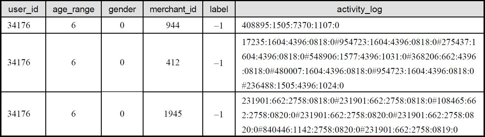
首先，从数据的数据量上面进行观察可以知道，在给出的几百万数据里面，明确指出客户是否该商户的回头客的数据仅有26多万条，即标签label是0和1的数据。剩余的几百万条数据，即标签是−1的数据，所代表的客户是在“Double 11”之前就来过的老客户，其中有的是回头客户有的不是回头客户。因此，可以知道，该竞赛的预测数据同样有26万多条。
在这26万多条的新客户数据之中，重复购买客户的数据只有1.6万条左右。通过这点我们可以知道，训练样本的正负样本数量差距较大，在算法的测试当中很可能会存在数据不平衡问题（Unbalance Data）。数据中所涉及的商品有10万多个，涉及的商品种类有1500个左右，涉及的商品品牌有8000多个。
此外，通过分析可以发现，客户中的女士数量比例达到70％，对比之下，男士客户数量仅仅占30％左右，不到女士的一半。相应地，回头客户中女士数量占总数的74％左右，从图12.1中我们可以清晰地看到这一现象。
图12.1 在重复购买顾客中男女性别所占比例
图12.2展示了在重复购买客户中，年龄的分布直方图。
图12.2 在重复购买顾客中年龄分布图
从图12.3中可以看出，年龄位于25周岁和34周岁之间的客户人群中重复购买的概率较大。此外，还有一部分年龄未知人群占所有重复购买客户的比例也不容忽视。图12.3给出了所有具有忠实客户/回头客的商户中，所拥有回头客的数量。可以看出，个别商户拥有大量的回头客户，而大量的商户只拥有少量的回头客数量。
图12.3 店铺的重复购买次数分布直方图
12.5 算法流程设计
12.5.1 特征提取
通过上述对原始数据的分析，我们可以得知一些需要定义的基本特征，该特征需包含客户特征和商户特征。此外，还需定义客户和商户的交互特征，如图12.4所示。在这里，本章直接给出一些在竞赛任务中需要提取的典型特征，以供读者分析和理解。
图12.4 特征提取示意图
具体地说，针对阿里巴巴公司给出的天猫“Double 11”交易和客户行为数据，可以提取以下基本特征。
1．拟提取客户属性和客户行为特征
- 性别。
- 年龄。
- 单击次数：对所有商品的总单击次数，描述客户的活跃程度。
- 购买次数：总的购买次数，描述客户的购买能力。
- 收藏次数：总次数，描述客户的活跃程度和购买意图。
- 加购物车次数：总次数，与收藏次数的描述意义类似。
- 访问商家个数。
2．交互行为特征
- 对指定商户产品的单击次数占该客户总单击次数的比例，用于描述客户对指定
- 商户的感兴趣程度，是对“客户-商户”的交互行为预测。
- 对指定商户收藏次数占所有收藏次数的比例。
- 对指定商户产品的购买次数占个人总购买次数的比例。
- 对指定商户产品的加购物车行为占个人加购物车行为总次数的比例。
3．商户属性特征
- 该商户回头客户数量：大部分回头客集中在天猫的一小部分商户。
- 该商户有多少类商品。
- 该商户有多少类商品被回头过。
- 该商户有多少品牌。
- 该商户有多少品牌被回头过。
- 该商户的总体回头率。
此外，还可以思考一下如何定义品牌特征。一般情况下大品牌的商品质量有保障，售后服务较完善。因此，大部分客户在购买商品时，在货比三家之后，都会选择质量有保障口碑较好的品牌商品。这一点可以被理解为品牌效应问题。其次，准确定义快速消费品，将其与商户特征相结合。毕竟快速消费品的市场需求量较大，其重复购买的概率较之一般商品也更大。例如，面膜就属于快速消费品一类；而电冰箱，如果没有特殊问题，同一个客户基本不会在半年之内再次购买电冰箱。关于这些商品和品牌特征的提取，可以综合利用“双十一”和非“双十一”数据，然后进一步与商户特征结合起来，会带来更好的预测结果。
12.5.2 分类器设计
该竞赛的最终任务是帮助商户预测，在其“Double 11”促销活动期间吸引到的新客户中，哪些会成为该商户的重复购买者，即给出新客户再次光顾该商户的概率。通过给出的训练数据可以知道，即表12.1训练数据中<客户-商户>样本对的标签属于0或者1，表明该客户是不是该商户的回头客。因此，该问题可以被理解为一个典型的二值分类问题。
基于此，分类算法可采用逻辑斯特回归算法（Logistic Regression） [3] 。逻辑斯特回归的分类器函数为
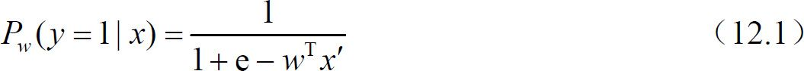
式中，w是要学习的投影方向，分类器的输出值为介于0和1之间的概率值。对于两分类问题，样本x属于正样本的概率为Pw （y=1|x），属于负样本的概率为Pw
（y=−1|x）=1−Pw （y=1|x）。对式（12.1）做个变换再取对数，便有
式中，左边是逻辑斯特对数似然比形式，右边是线性形式，因此该模型被称为逻辑斯特回归。
当已知一组训练样本集｛（x1 ，y1 ），（x2 ，y2 ），…，（xn ，yn）｝时，对应式（12.1）的输入变量x和y，通过计算便可求解出最优的投影方向w，即所需求得的模型参数。
具体到本次竞赛任务，特征变量xi可以理解为通过数据理解与分析后提取得到的数据特征，包含客户属性和行为特征、商户特征以及客户-商户交互特征，即如12.5.1节所述；而响应变量yi，则表示该条数据中的客户是不是该条数据中商户的再次购买客户。
逻辑斯特回归算法是一个经典的数据挖掘机器学习预测算法，该算法在多种编程语言环境中均存在集成算法，以便研究者和项目开发者使用。在Java编程语言环境下，可以通过WEKA机器学习算法库（Waikato Environment for Knowledge Analysis） [4] 使用逻辑斯特回归算法或者其他预测算法。WEKA软件诞生于新西兰，距今已有十多年的发展历史，是一个公开的数据挖掘工作平台（使用了GNU General Public License，GPL），也是现今最完备的数据挖掘工具之一。该软件集合了大量能承担数据挖掘任务的机器学习算法，包括对数据进行预处理、分类、回归、聚类、关联规则以及在交互式界面上的可视化。图12.5展示了通过WEKA软件使用逻辑斯特回归算法进行预测的交互式界面。关于WEKA软件的更多详细信息可以在http://www.cs.waikato.ac.nz/ml/weka/网站上进行查询。
图12.5 WEKA运行逻辑斯特回归算法使用样例
12.5.3 算法流程总结
针对天猫数据竞赛的算法设计和整体流程如图12.6所示，通过对原始数据的初步整理，以及深入理解与分析，进而得到测试数据集合和训练数据集合，并根据训练数据集合提取针对最终预测任务的数据特征。然后根据这些提取得到的数据特征进行预测模型训练，如逻辑斯特回归算法，该部分内容详见12.5.2节。最后将待测试数据代入到通过训练得到的预测模型中得到测试数据的预测结果。
图12.6 整体算法流程示意图
12.6 小结
本章主要介绍了天猫大数据竞赛的研究任务和解决方案。很多大型商场都会举办促销活动，以提高销量和吸引新的客户人群。在促销活动后，商家都会希望这些被活动吸引的新客户能成为自己的长期固定客户。本次竞赛的主要目的就是帮助商家预测这些新客户重复购买的可能性，或者说是预测成为回头客户的概率。竞赛所涉及的原始数据有上百万条记录，源于天猫商城“Double 11”促销活动当天和之前六个月的客户行为数据，并给出了真值。竞赛任务是根据这些数据预测在未来六个月内，哪些新客户会再次光顾指定商户。本章对原始数据进行了细致的分析，并给出了一种特征提取过程和解决方案，进行最不容易的画像,对数据层面的分析与推荐具有启发意义。
12.7 本章参考文献
[1] Repeat Buyers Prediction after Sales Promotion．http://ijcai-15.org/index.php/repeat-buyers-prediction-competition．
[2] http://tianchi.aliyun.com/datalab/introduction.htm？spm=5176.100075.5678.1.yObWkf＆id=1．
[3] T．Hastie，R．Tibshirani，and J．Friedman．The Elements of Statistical Learning：Data Mining，Inference，and Prediction，Second Edition．Springer，2009．
[4] Mark Hall，Eibe Frank，Geoffrey Holmes，Bernhard Pfahringer，Peter Reutemann，Ian H．Witten （2009）；The WEKA Data Mining Software：An Update；SIGKDD Explorations，Volume 11，Issue 1．